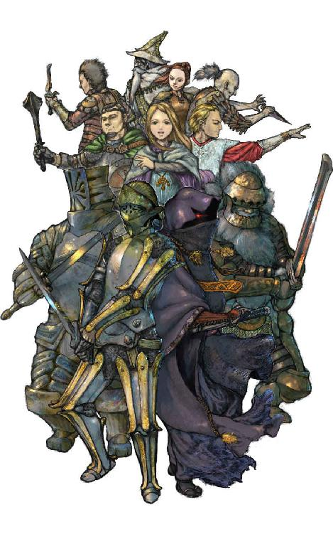

| 隣り合わせの灰と青春 (幻想迷宮ノベル) | |
| ベニー松山 | |
| GENSOUMEIKYUU SHOTEN (2016) | |

ベニー松山
そこは、漆黒の世界であった。
一筋の光とて存在しない、冷えきった地の底の世界。
厚い岩盤に封じられた空間に、それはあった。
いや、正しくは空間ではない。空間と呼ぶべき場所全てを、それが占めているのである。
まるで岩の内部をそれの形にくりぬき、嵌め込んだようであった。隙間の全くない岩盤がそれを外気から遮断し、朽ち果てていく速度を大きく遅らせている。
そのまま気の遠くなるような歳月を経て、それはいつしか石に同化していく――はずであった。
闇の奥底で、無気味な波動が流れていた。
巨大な獣の胎動にも似た、緩慢で定期的なうねり。どこから送られてくるのかも知れぬその波動が、ぶ厚い岩を通じてそれを包み込んでいる。
どっ......どっ......どっ......どっ......。
もう何時間も前から、時には大きく、時には小さく波動は響き続けていた。まるで波の中心が何かを求め、地底を彷徨っているかのようであった。
波動とともに、微かな詠唱が伝わってきていた。
現在使われている共通語とは異なる、唸るような韻律の言語である。上級魔導師の一部にしか知られていない古代の魔法語であった。
波動のうねりと古代語の唸りが、なだめ、急かすようにそれに囁きかけていた。
暗黒の闇の中、それが身じろぎした。周囲を埋め尽くした岩に阻まれ動いたというにはほど遠かったが、数年の間ぴくりともしなかったそれが、明らかに意志を持って動き出そうとしたのである。
"......誰だ......殺......呼ぶのは......斬......誰が......？"
それに蘇りつつある記憶に呼応するかの如く、詠唱が次第に高く、大きく響き渡る。
"眠り......怨......起こす......死......血......滅......破壊......！"
意識がより強く、禍々しいものへと変貌していく。
詠唱の唸りは、もはや天地を揺るがすかと思われるほどになっていた。
"誰だ？"
それの両眼が見開かれる。
"呼び覚ますのは、誰だ!?"
それが覚醒した。同時にその姿が岩塊の中からかき消える。
波動と詠唱が、潮が引くように遠のいていく。
地底に静寂が戻った時、岩の中には人型の空間だけが残っていた。
"生命の源たる、熱き血の流れ"
"その身のうちに沁む、赤き血の流れ"
"生命の水よ"
"生命の流れよ"
"その流れ止まりて、血潮冷えし肉体に、再び魂の宿らんことを"
"宿らんことを"
"魂は不滅"
"御霊は滅びず"
"戻るべき肉体に"
"魂よ戻れ"
"我等が世界を造り給うた、万物の支配者たる神よ"
"願わくば、この失われし魂を呼び戻し"
"闇を打ち払い"
"光をもたらし"
"浄められたる肉体に再び生命を分かち給え"
"凍てつきし血液の流れに再び炎を灯し給え"
"灰と変わりしこの身を再び血肉と為し給え"
"祝福あれ"
"祝福あれ"
"還魂"
"――"
"......"
「しくじったあ？」
激しい怒気を含んだ、若い男の声が響く。
「そりゃてめぇまさか、消滅したってんじゃあ――」
「手は尽くしましたが、甲斐なく......」
若干怯えの混ざった、力ない応えがあった。こちらは歳のいった男のようである。
「ふざけるんじゃねえ！ 蘇生専門の寺院で二度もしくじった挙句、手は尽くしました――だとこの野郎！ 俺たちゃ何も善意で一万ゴールド以上も支払ってるんじゃねえぞ！ 早いとこ何とかしねえと――」
「やめろ。人の命ばかりは、神の御意志によるものだ」
もう一人の声が、若い男を遮った。「消滅してしまった以上、もはやどうすることもできん」
「でもよ――」
若い男は必死に怒りを抑えているようであった。
一人が足早に去っていく、靴の裏のびょうが石床を叩く音が響いた。若い男に詰め寄られた男が逃げていったのだろう。
「インチキ坊主め」
若い男が吐き捨てるように言った。「あんたが呪文で蘇生させたほうが良かったかも知れねえぜ」
「考えられる最悪の結果だな」
若いほうより幾分低い声域で、苦々しげに男が呟いた。「我々はシルバーという尊敬すべき友を失い、そしてまた強大な魔道呪文の使い手を失った訳だ」
「――」
二人はおし黙った。
どこからか聞こえてくる祈りの声が、いつまでもそこに残響していた。
━━━━━━━━━━━━━
SCENE1
GILGAMESH'S TAVERN
――ギルガメッシュの酒場――
━━━━━━━━━━━━━
狂暴な君主として悪名高いトレボー王の城に隣接した広大な訓練場では、今日も日暮れ近くまでに十人程度の流れ者たちが、大魔導師ワードナを倒して魔除けを手に入れ、近衛兵に取り立ててもらうという半ば賭け事じみた冒険の新参者として名乗りをあげていた。しかしそのほとんどが二、三日中に尻尾をまいて逃げ出すか、そうでなければ死んでしまう。おかけで、この城塞都市がどうしようもないほどの冒険者の大群に悩まされる、などという事態は起きないのであるが。
スカルダが訓練場の一角にある転職の道場をあとにしたのは、その新人登録の〆切時刻である日没にさしかかる頃だった。転職の道場とは冒険者が途中で職業を変更するための場所であり、ここを訪れた者が転職するだけの能力を持っていれば、八人いる各職業のマスターに短期間で極意を授けてもらえるのである。
太陽が遙か西方の山の向こうに完全に隠れようとした時、ようやくスカルダは城門をくぐるところだった。怪しい者が城内に入りこまないように二人の門兵がガードしているが、二人ともスカルダの顔はもう幾度となく見て知っているので、軽い会釈で通過できた。
彼は昨日まで――正しくは今朝まで――この城塞都市でも数少ない、レベル13に認定された歴戦の戦士だった。レベルはその職業における熟練の度合いを示す目やすのようなもので、13ともなれば魔法使いや僧侶は全ての呪文を身につける資格を持つ。いわば能力がそれ相応の位にまで高まった証のようなものなのだ。
だが、今では一度も実戦を経験していないレベル１の侍となっていた。つい先刻まで侍の道場で転職の特訓を受け、侍の基礎となる能力を身につけてきたのである。戦士の時にほとんど使うことのなかった筋肉の鍛錬と、侍固有の戦法の概念、そして将来魔法使いの呪文を覚えるための初歩的学習。わずか一日の間に、実に五年分ものカリキュラムが実行され、スカルダの五体に叩きこまれたのだ。
そのせいか、どうもこれまでの肉体とは勝手が違うように感じられる。なじんでいないからなのだろうが、手足に鉛が詰まっているようで、戦士時代の勘も鈍っているようにスカルダには思えた。
城の中、といっても冒険者たちが自由に行き来できるのは中央の王城を除いた一般居住区である。夜空にそびえ立つ王城の尖塔を見上げ、彼はふと足を止めた。幾つもある窓からは煌々と灯りが漏れ、今夜も何かの宴が催されているのだと判る。
――王侯貴族と近衛隊の住む城か。
この城塞都市に来た十六歳の当時は彼も、近衛兵に成り上がってこの王城に入ることに憧れを感じていた。きらびやかな装飾と豪勢な食事、そして美しい貴婦人たち。そんな暮らしが街外れの迷宮での冒険で手に入るかもしれないのだ。
しかし戦士として戦いを積み重ね、二年の月日を過ごすうちに、貴族の暮らしなどというものはどうでもいいことのように思えてきた。
彼はまず何よりも強くなりたかった。どんな怪物をも倒せる戦闘能力を身につけたかったのだ。
この街で逃げずに生きてこれたのも、この思いがあったからなのだろう。そう考えて彼はまた暗い石畳の上を歩きだした。
城壁に囲まれた部分も大した広さがある訳ではなく、数分歩いただけですぐ冒険者のたまり場になっているギルガメッシュの酒場がある通りに着いた。夜になっても酒場や賭博場の集まるこの通りだけは昼にも増して活気がある。とりわけギルガメッシュの酒場は丸一日休みなしに営業しているので、冒険の仲間を募る者が数多く集まるのだ。
そのギルガメッシュの酒場の前で、酒杯を片手に涼んでいる男がスカルダに気づいた。
「いよう、スカルダ」
男は近寄ってきて、「どこに行ってたんだよ」
「気がつかないか？」
「気がつかないかってお前......そういや昨日に比べてずいぶん老けたように見えるな。とても十八歳にゃ見えないぜ」
その男――ジャバは酒杯をあおり、大げさに目をこすってみせた。この男はスカルダの参加するパーティの前衛を務める盗賊で、力は弱いが罠を外す技能は街で右に出る者はいないとまで言われている。ただ、余計で派手なジェスチャーが、繊細な作業を必要とする盗賊稼業に似つかわしくないとの声も少なくない。
「何か悪事でもしでかして一日強制労働でもやらされたか？ 日に灼けると確かに老けるからなあ」
「それが長年パーティを組んできた仲間に対する言葉かよ。強制労働をくらったほうがはるかに楽なくらい厳しい修行を積んできたんだぞ」
スカルダは顎のまわりにうっすらと生えた無精髭をなで、顔をしかめた。
「というと？」
「血のめぐりの悪いヤツだな。俺は朝からずっと訓練場へ行ってたんだよ」
「じゃあクラスチェンジでもしてきたってのか？ こりゃたまげた」
ジャバはスカルダの厚い胸をドン、とたたいた。「どうりで五歳は老けてるはずだ。俺にまで内緒で行くなんて人が悪いぜ」
その時、酒場の中から一人の女が出てきた。これまたパーティの仲間で、目下のところ最後の呪文を覚えるべく実戦を重ねているレベル12の魔法使い、サラである。
「ジャバってば、いつまで酔いざまししてんの......あーらスカルダじゃない。今日はまた一体どこに行ってたのよ？ 強制労働でしょ」
「前から一度訊いてみたかったんだが、きみは俺を何だと思ってるんだ」
幾分ムッとしてスカルダは言った。
「まあね、からかいがいのある人だとは思うわ。熟練の戦士になんてぜーんぜん見えない。あーははは」
よく見るとサラの顔は真っ赤で足下もふらついている。かなり酔いが回っている様子だった。
「なんでえ、俺を探しにきたような顔して自分が涼みにきたんじゃねえか。あんまり人の邪魔にならねえようにそっちの隅、ほれ、空いている酒樽があるからそれにでももたれていろ。くれぐれも言っとくが暴れるなよ」
「はあーい」
そう応えてサラはふらりと樽に近づいていき、もたれかかったかと思うとずり落ちるように座りこんだ。
「おいジャバ、放っといていいのか？」
「確かに嫁入り前の娘にしちゃみっともねえ恰好だな。仲間として見るに忍びないんだが......」
言いながらジャバはスカルダの背をかなり強く押して酒場の中に入っていく。「なにしろ今日はかなりの酔っ払い方だ。前にあいつが泥酔した時のことを覚えてるだろ」
「思い出したくもない」スカルダは首を振った。
もう半年以上前の話だが、サラはこのギルガメッシュの酒場で大暴れをしたことがあった。こともあろうに呪文を次々と唱えたのである。酒場を暗くしてみよう、などとぬかして暗霧の呪文を唱えたり、飲み逃げを狙っていきなり仮睡の呪文をかけてみたり、しまいには文句をつけてきた冒険者の一人を小炎で火だるまにしてしまい、しばらくの間酒場に出入りできなくなった。
「あの時はまだ良かったが店の中で窒息でも唱えられてみろ。俺たちゃ永久追放もんだぜ」
「だけどあのまま座り込んでたら誰かにからまれるってこともあるだろう」
「大丈夫だって」
ジャバは本気で面倒を見るつもりはないらしかった。「魔法使いのローブのおかげでちょっと見には年寄りのようにしか見えねえし、万一若い娘だって気がついたって例の騒ぎを覚えてる奴はまだまだたくさんいるからな。誰が好んでサラにちょっかい出すもんか」
そう言われるとスカルダも無理に店の中にサラを連れ戻す気にはなれなかった。
酒場の中には煙草のけむりでもやがかかったようになっている。吟遊詩人の歌声と客の笑い声が聞こえる中、二人は幾つものテーブルをかいくぐって隅にあるテーブルに集まっている仲間たちのところへ向かった。
そのテーブルには二人の男が腰掛けていた。一人はスカルダとともに接近戦の要となっている戦士のガディ。スカルダも元戦士だけあってかなりいい体格をしているのだが、このガディはさらに二回りは大きい。巨体から生み出される破壊力は相当のものである。
そしてもう一人、顎髭をたくわえた僧形の中年男は、全ての僧侶呪文をマスターしたこの城塞でただ一人の高僧ベリアルだった。
スカルダたちを認めたガディが手を挙げて合図した。が、彼もベリアルも心なしかいつもの元気がない。
「サラはどうした？」
ガディが口を開いた。
ジャバは足先に椅子を引っ掛けて引き出すと、身軽に腰を落ろした。スカルダはまだ自分の身体にぎこちなさを感じながらも、同様に卓につく。
「外で涼んでる。あの様子ならじきに酔いもさめるだろうよ」
ジャバは手にした杯に酒を注ぎ、スカルダに渡した。「まあ飲めよ。今夜は鎮魂の酒だ」
ジャバもいつもより暗い面もちをしているのに、スカルダはその時初めて気がついた。
「留守中何があった？ 鎮魂ってのはまさか」
「そのまさかなんだ」
ベリアルが額を押さえて、「カントのインチキ坊主どもがしくじってな。シルバーの爺さんは塵になってしまった」
「そのうえ一万ゴールド以上の金をふんだくってやがる。金も銀も失くなった訳だ」
ジャバが吐き捨てるように言った。「金は惜しかないがよ」
シルバーはサラと同じ魔法使いなのだが、レベルは15にもなっている最年長の冒険者だった。かなりの高齢だったため最近は体力の衰えを訴えていたのだが、昨日の戦闘で命を落としたため、城の番兵たちによってカント寺院へ運び込まれていたのだった。だが、ほぼ確実に死者を蘇らせると言われるカント寺院の僧侶たちは二度の蘇生術に失敗し、シルバーはこの世から完全に消滅してしまったのである。
「シルバーがか......」
スカルダは言葉を失った。パーティの前衛を盗賊であるジャバが務めるうえに、自分が侍とはいえレベル１に戻ってしまった現在、接近戦の攻撃力は大きく不安が残っている。そこへきて呪文攻撃の中心であるシルバーを失ったとなると、パーティ全体の戦闘能力はガタ落ちしたと言っていいだろう。
それにも増して、苦楽をともにしてきた仲間を失った悲しみは大きい。スカルダは無言で酒杯をあおった。
「ところでスカルダ、俺を見て何か気がつかねえかい」
ひとしきり酒杯を傾けたところでジャバが自分を指して尋ねた。なにぶんにも危険の多い冒険者たちのこと、シルバーの死を悼みはするが、悲しみから立ち直るのもそんなに遅くはない。
「先刻のお返しか。別にいつもと変わってるようには見えないがな。新しい剣でも手に入れたのか？」
ジャバの腰に下がった剣を確かめようと卓の下を覗いたスカルダは、そこで奇妙なことに気がついた。
非力な盗賊が扱いきれる武器はせいぜい短剣が限度である。ところがジャバが下げている剣の鞘は優に長剣を収めるだけの長さがあった。何故今まで気がつかなかったのかスカルダは不思議に思った。やはり少し判断力が鈍っているせいだろう。
「ちょっと見せてみろ」
そう言ってわずかに剣を引き出すと、ギラッと見慣れた刀身の光が見てとれた。
「こりゃあ真っ二つの剣じゃないか。何でお前がこんなもの下げてるんだ」
「血のめぐりが悪いぜ、スカルダよ」
同じ台詞でかたきを取れたので、ジャバはニヤッと笑ってみせた。
「ジャバは忍者にクラスチェンジしたんだよ」
ガディが口を挟んだ。
「忍者？ だってこいつは中立のはずだぜ。忍者になれるのは悪党――おっとと、俺やベリアルと反対の戒律を持った連中だけだろうが」
「今日ボルタックの店にとんでもねえ掘り出し物が出てたのさ」
ジャバはウインクして、
「盗賊の短刀って品なんだが、武器としては大したものじゃねえ。ところがすげえ魔法がかかっていて、こいつを使った盗賊は誰でも忍者になれるってんだ。五万ゴールドだったが安いもんだろ」
「それじゃお前もレベル１に？」
「いや、その魔力を使う前にボルタックの親爺に訊いてみたんだが、それまでのレベルがそのまま忍者の能力になっちまうらしい。まだ地下には潜ってないんで実戦では確かめてねえが、どうも嘘じゃねえようだぜ」
「スカルダ」
ベリアルが急に口を開いた。「今朝からお主が居なかったのはやはりあれか」
「ああ」
スカルダはうなずいた。さすがにこの僧侶は一目で転職を見抜いたらしい。
「侍とはまた思いきったものだ。お主にはロードになる資格もあるというのに」
「侍じゃなきゃだめなんだ」
そう呟くとスカルダは何かを思い出したように黙り込んだ。
その時、酒場に入ってきた漆黒のローブを着けた人物が、何故かは判らないがスカルダの目に強く焼きついた。
人物、といったのはローブのフードを頭にかぶっているばかりか口元にも黒い布を巻きつけているため、男とも女ともつかないからである。
ジャバもその人物に気がついたようで、すぐに立ち上がった。
「知り合いだ。ちょっと連れてくる」
ジャバがテーブルを離れると、ベリアルがスカルダに向き直った。
「盗賊の短刀のことだがな、お主も知っての通り盗賊というのは最も少ない経験で高いレベルへと成長していく。逆に忍者は倍近い実戦を積んでようやく成長するクラスだ。つまり忍者にそのレベルのままで変身できるのなら、盗賊としてしばらく成長を続けたほうがあいつにとっては都合がいい」
そこまで言ってベリアルは酒を一口飲んだ。「だがシルバーはいなくなってしまった。そこで戦力を強化するために、あいつはあえて忍者になる道を選んだのだ。それを考えたうえで、あいつの話を聞いてやってくれんか。リーダーとしてな」
「何をする気かは知らないが」
スカルダは何も考えていなさそうなジャバがそこまでパーティ全体のことを思っていると知って胸が熱くなった。
「レベル１になってしまった俺は戦力として問題になるまい。よほどの話じゃない限り文句はつけないよ」
「うむ」
話の終わったところで、ジャバが黒いローブの人物を連れて戻ってきた。近くで見るとどうやら男だったらしい。眼だけをフードのすき間からのぞかせた風体は異様な圧力を感じさせる。
「紹介するぜ。今日ボルタックの店で知り合った男で、例の短刀を持ち込んだのもこの人なんだそうだ。魔法使いのバルカンだ」
ジャバがパーティの仲間たち、と言うよりスカルダを見ながら男を紹介した。
――なるほどね、悪のメンバーを参入させるってのか。背に腹はかえられないからな。
「バルカンだ。魔法使いの呪文は残らずマスターしている」
しわがれた声で男が自己紹介した。目だけでは判断はつかないが、相当年老いているようである。
――目を見りゃ一発でわかる。こいつはかなりの悪だな。
スカルダはバルカンの目を睨みつけてから、ジャバを見た。
「シルバーの代わりにこの男を？」
「どうだろうか？」
ジャバはベリアルとスカルダ両方に問いかけた。「善の二人には気の進まない話だろうけどよ」
とはいえ、ベリアルにはもう話を通しているらしく、あとはスカルダの返答次第である。
「俺はかまわないが、ここでいっしょに酒を飲む気にはなれないな。悪いがパーティを組むのは迷宮に入ってからだ。明日の朝迷宮の入口で合流でいいか？」
こくりとうなずくと、バルカンはジャバと二、三言葉を交わしたあと再び店の外に出て行った。
「お前の気持ちも判るんだが、全ての呪文を身につけた魔法使いというとなかなかいねえんだ。しばらくこらえてくれよ」
憮然としているスカルダをなだめるようにジャバが言った。
「そのくらいのことはお安い御用なんだが」
考えごとをするようにスカルダは続けた。「何かいやな予感がするんだ。あのバルカンって奴は誓ってただの魔法使いじゃないぞ」
「そりゃ考えすぎだぜ」
ジャバがまた酒杯に手をのばそうとした時、ガディの手がその杯を押さえた。
「もう飲まないほうがいいと思うよ。俺もいやあな予感がするんだ。酔っちゃここから逃げられないし」
「何で逃げるんだよ？」
「サラがまだ戻ってこないだろ」
あっ、と三人が顔を見合わせた瞬間、店の中に火のついた数人のごろつき風の男たちが飛び込んできた。
「熱ちちちっ！」
「水をくれ、水を......」
男たちが転げ回るのを茫然と見つめながらスカルダが呟いた。
「サラだ......」
「サラだっ!!」
━━━━━━━━━━━━━
SCENE2
ADVENTURER'S INN
――冒険者の宿――
━━━━━━━━━━━━━
「何にせよ使った呪文が小炎程度ですんでよかった」
スカルダは久しぶりに簡易寝台のベッドに横になって一息ついた。横のベッドではガディがあくびをしている。
つい先刻までは二人ともぜいぜいと肩で息をしていた。というのも、サラにからんで火だるまにされた男たちが転がり込んできたと同時にギルガメッシュの酒場から逃げ出し、まだ酒樽にもたれてブツブツと独り言を呟いていたサラを担いで一目散にこの冒険者の宿まで走ってきたのである。
サラをロイヤルスイートに放り込み、馬小屋で寝るというジャバ、ベリアルと別れて宿に入ってからずいぶんたって、ようやくスカルダが口を開いたのだった。
「これでまたしばらくは酒場に行けなくなっちまったなあ。サラの酒ぐせの悪いのにも困ったもんだ」
「サラはシルバーと同じ魔法使いだったからね」
ガディは天井を見たまま言った。「きっと俺たち以上にショックが大きかったんだろうな」
「ああ」
あおむけに寝転んだスカルダの脳裏にはシルバーの死の原因となった、一昨日の戦闘のことが浮かんできていた。
その日の地下迷宮の探索も、彼らのパーティは地下一〇階まで足をのばしていた。地下九階からシュートでしか行くことのできないそこは、他のフロアとはまるで違ったゴツゴツした厚い岩盤に囲まれていて、見るからに彼らの目的地に近いことを示している。
彼らがこのフロアに降りるようになってからもう一週間以上が経過していた。はじめは出現するモンスターたちにかなりの苦戦をしいられていたものの、スカルダとガティが古の名匠カシナートの手に成る剣を見つけてからは、呪文のバックアップによってほとんど苦労もなく戦闘に勝利できるようになっている。
その日も三グループのモンスターを片づけていくつかの宝を手にし、転移地帯を使って次のエリアへと進んでいた彼らは、一時そこでキャンプを張り、体力の回復と今後の方針についての話し合いを進めていた。
「この調子ならもうワードナを倒すこともできるんじゃねえか」とジャバ。
「向かうところ敵なしってとこだものね。挑戦するのも悪くないと思うわ」
「だがそれはお前さんが７レベルの呪文を覚え切ってからのほうがいいぞ。今のままでは儂が死んでしまったら転移の呪文も使えんじゃろうが」
シルバーがサラをたしなめる。「何でもワードナの部屋からは魔法を使わないと帰れないというでな」
「そうだな」
このパーティでリーダーとされているスカルダがシルバーに同意した。「もう少し実戦を繰り返せばサラもすぐ次の呪文を覚えるだろうさ。あと二回ほど怪物と戦ったら今日は帰ろう」
サラは少々むくれた顔をしたが、なにもここで危険を冒す必要がないのはもっともで、とにかく話はまとまった。
そしてキャンプを解いて、先へ進もうとしたその時――。
目の前の空間に、不意に爆発のようなものが起こった。最初は極小の球状だった炎の渦が、見る間に直径が人の身長ほどの淡い青色の火球に膨れあがる。しかしそれは妙に現実味を欠いた光景であり、事実爆発音も熱もない奇怪な現象だった。
――何だ、この火球は？
スカルダをはじめ、パーティの全員がどんな事態にも対応できるように身構えた。
ついに三メートルほどの大きさになった火球は、あたかも心臓のように定期的な膨張と収縮を繰り返している。
彼らは以前似たものを目にしたのを思い出していた。もっともその時は半分以下の大きさの火球で、色もオレンジ色だったのだが。それは魔界へとつながる異次元の扉であり、直後に出現したものは山羊の頭を持つ魔物レッサーデーモンだった。
しかし今目前にしているのは明らかにもっと巨大なものの通路である。そうスカルダが気づいた時、揺らめく影が火球の中に浮かび上がった。
ぐ、はあああああ......。
初めて見る異形の生物――羊の角を持つ青色の巨大な悪魔――は笑ったように見えた。そして一瞬のうちに実体化する。火球が唐突に消え失せた。
と、同時にスカルダ、ガティ、ジャバの三人は怪物に向かって斬りかかっていく。その後方では残りの三人が次々に呪文を唱えた。敵は一匹である。負けるとは誰も思っていなかった。
だが、怪物に剣が当たった瞬間、その予想外の硬さにスカルダは驚いた。厚い皮に威力を殺され、カシナートの剣もほとんどダメージを与えていない。ガディも同じである。ジャバの短剣はあっさりと弾かれた。
また、呪文も一切効果がないようだった。大凍、仮睡、静寂の呪文が敵に届く前に消えてしまうのだ。驚くパーティの面々に、逆に大凍の猛吹雪が襲いかかった。
「まずいぞスカルダ！ ひとまず逃げたほうがいい！」
ベリアルが叫ぶ。もうすでにシルバーは死ぬ寸前までダメージを与えられていた。
「ガディ、転移のかぶとを！」
「おう」
スカルダの指令に応えてガディが頭につけたリングの能力を使う。転移によってこの場を脱出するのである。
しかしそれより早くパーティに二度目の大凍がかけられた。絶命し、頽れるシルバーを目にした時、ようやく転移が効果を現した。
自分の身体がテレポートする瞬間、スカルダは確かに怪物――グレーターデーモンがあざ笑うのを見た。
「戦士を捨てたのは、やっぱり奴に歯が立たなかったからかい？」
すっかり眠っていると思っていたガディに話しかけられて、スカルダは急に現実へと引き戻された。
「あの怪物にはまるで剣が通じなかった。だが支援呪文がかかるのを待っていたら強力な呪文をくらってしまうし、俺たち前衛が一撃で息の根を止めるしかないんだ」
「確かに俺の剣もほとんどダメージを与えていなかったな」
ガディは大きなため息をついて、「で、侍ならあの化け物に勝てそうなのか？」
「判らん。どっちにしろもう一度経験を積んで、実戦の勘って奴を取り戻さなくちゃな」
「ふうん。俺にはとても今さら転職するような勇気はないなあ。このまま腕を磨いていればいつかは勝てるかも知れないし」
――そうかも知れない。いや、そのほうが正しかったかも。
スカルダはその日の明け方、訓練場に向かうまでの道のりで幾度となく繰り返した迷いを今さらながら思い起こしていた。
――確かにこれまでだってそうだった。地下四階のアロケーションセンターを守っていた高位忍者やファイターたちにだって、最初はとても勝てないと考えたもんだ。それがいつの間にか一撃で蹴散らせるほど、俺たちのパーティは強くなっていった。
ワードナの地下迷宮に巣喰う怪物どもを相手にサバイバルを続けるのは容易ではない。事実、連日この城塞に富と名声を求めて流れてくる冒険者たちの大半はその日のうちに地下一階の豚鬼や犬鬼の餌食となっている。
その修羅場をくぐり抜け、成長を重ねてきたスカルダたちのパーティは数ある有望なパーティの中でも一、二を争うエリート部隊だった。シルバーを失ったとはいえ、あとがまを気長に訓練していけば、必ずや最強のパーティとしてトレボー王の近衛隊に迎え入れられるようになっただろう。
――だが、俺がなりたいのはそんなものじゃない。俺は誰にも――そう、あの狂的な強さを誇るトレボー王にすら負けない強さを身につけたいんだ。
日々そう考え続けてきたスカルダにとって、戦士としての自信が揺るぎなくなってきた時に、たった一匹のモンスターに軽くあしらわれたのは他人に想像もつかないほどのショックだったのである。
「なあガディ」
「ああ？」
眠そうな声でガディが応える。
「俺は......パーティのリーダーとして失格じゃないかな。よりによってこんな時に転職しちまうなんて」
「そりゃまあその通りだね」
あっさりと肯定されて、スカルダは二の句がつげなくなった。
「だけど誰もシルバーがいなくなっちまうなんて考えもしなかったしさ。結果は今んとこ悪く出てるけど、そいつはあくまでめぐりあわせが悪いんだ。侍になってよかったってこともきっとあるさ」
気楽な口調でガディは言うと、一つ大あくびをして目を閉じた。すぐに呼吸が規則的な寝息になる。もう眠ってしまったようだった。
「めぐりあわせ、か――」
スカルダは独り呟いた。ガディのおかげで何か胸のつかえが取れたような気がする。
転職してからずっと、常に自分の選択は間違っていたんじゃないかという不安がつきまとっていた。戦士を捨てたことはもはや取り返しがつかないにもかかわらずだ。だが、そんなことを悩むのは実戦を重ねてからだと彼は決めた。
明日は日の出とともに起き、侍としての最初の戦いを挑まねばならない。スカルダも寝ようと瞼を閉じた。
しかし、再びあの黒衣の魔法使いバルカンへの不安が暗雲のように心に湧きあがり、彼が眠りに落ちたのはさらに夜が更けてからのことであった。
━━━━━━━━━━━━━
SCENE3
EDGE OF TOWN
――街外れ――
━━━━━━━━━━━━━
明けて翌日。
鳥のさえずりとともに、夜の闇がこの城塞都市から追い払われようとしていた。高い城壁に囲まれている街のため、遙かな地平線からさし込む朝日を目にすることはできないが、薄いグレーの空が次第に澄みきった青に変わるにつれて、都市の居住区の人々はその日の営みを始めるのである。
街外れの迷宮へと挑む冒険者が格安で休息をとれるようにと造られた冒険者の宿も、日の出の時刻になるとほとんどの者が起きだして、出発する準備を整える。もっとも怪物に深傷を受けて逃げ帰った者たちは一週間やそこら宿に寝たきりになるのではあるが。
戦士たちが重い鉄製の鎧や小手を装着する音がガチャガチャと響く中、スカルダたち五人は一足先に宿をチェックアウトし、城門に向かった。
レベル１に戻ったとはいえ、侍として訓練を受けたスカルダは一昨日まで着けていた戦士の武器と防具をそのままつけることができる。彼は早くも目深に忍耐のかぶとをかぶって一行の先頭を歩いていく。
魔法のアイテムによってレベルをそのままに忍者となったジャバは、どうやら昨日のうちに新たな防具類を買いそろえたらしく、慣れない様子で重い鎧を派手に鳴らしてあとに続いている。次はいつも通り飄々とした顔つきのガディである。その軽やかな足どりはジャバと好対照をなしている。
「重いしうるせえし、革のほうがずっといいぜ。おいガディよう、何とかしてくれよ」
自分で立てる音にかき消されそうになりながらジャバが泣き言を言う。
「そのぶん安全だろ。はじめはみんなそんな風に感じるみたいだけど、そのうちすぐ慣れるさ」とガディ。
そのあとを昨晩の深酒がまだ抜け切っていないサラがローブをひきずるようにして続く。
「......ジャバぁ、も少し静かに歩けないのお。あんたが鎧を鳴らすたびにあたしの頭もガンガン鳴るのよ。あんたのおかげでもう死にそう」
「自業自得ってやつだろ。一杯飲めば酔っ払っちまうくせに、一ビン丸々空けたそうじゃねえか。大体おまえ昨日の夜やったことを覚えてんのか？ 俺なんか飲んですぐ走って逃げたんで途中で吐いちまったんだぞ」
いっこうに静かに歩く気配を見せずにジャバが怒鳴り返す。
「痛たたた......ったくきったない話を大声で。なによ、あんたたちだって止めなかったじゃないの。仲間意識が少々希薄なんじゃない？」
そう言ってサラはガディとしんがりを歩くベリアルをじろりと睨んだが、ガディは相変わらずそ知らぬ様子で、ベリアルもほこ先が自分に向いてはかなわんとそっぽを向いている。
「そりゃあたしだって悪かったわよ。街なかで魔法を使うのはいけないことだし、いくらシルバーを悼んで飲んだといっても量が多すぎだったわ。でもねえ、だからってうら若い乙女を人通りの多い道ばたに寝かせといて放っておくのがいいって法はないでしょ。しかも勝手にロイヤルスイートなんかに泊まらせてさ。一晩で七十ゴールドも取られんのよ......あー頭が割れそう」
二日酔いと言うよりまだ酔っ払いに近いサラはブツブツと呟き続けた。普段は赤味がかった金髪と緑色の瞳、整った顔立ちと白くぬけるような肌から美少女魔導師とまで言われる彼女だったが、こうなるともう巨大蛙の鳴き声なみのうるささである。ジャバがお手上げといった仕草を見せた。
さして広くもない城塞である。そうこうしているうちにいつの間にか城門に到着した。
衛兵に片手をあげてスカルダが近づいた。
「よう、夜勤ご苦労さん。今日は独りのようだな」
「おう、あんたか。仲間うちじゃ転職したんじゃないかって噂になってるぜ」
顔見知りの衛兵は眠そうに目をこすった。毎日のようにここを出入りするスカルダたちは彼らと結構仲がいい。
「サラはどうしたんだよ。やけに不機嫌な顔してるな。美人が大なしだ」
まさか夕べの騒ぎを説明する訳にもいかずスカルダは瞹昧にうなずいた。
「全くだ。ところで魔法使いが一人出ていったかい？ 全身黒づくめのやつだが」
「あれかい？」
衛兵は城門の百メートルほど斜め前方、つまり訓練場のすぐそばにぽっかりと口を開けた迷宮の入口を指した。ちょうどスカルダは背を向けたような恰好で衛兵と話していたため、そちらは死角になっている。
振り返ると、朝日をいっぱいに浴びた大地に、夜闇の名残のような漆黒のローブに身を包んだバルカンが、身じろぎ一つせずに立っているのが見えた。
「知り合いなのか？ ずいぶん胡散臭い野郎だな。先刻からああやってじっとしてやがんだ。薄気味悪くてかなわねえよ」
スカルダは衛兵に別れを告げ、ガディたちと城塞の外――迷宮の入口へと歩きだした。
彼らに気づいているのかいないのか、うつむいたままたたずんでいるバルカンの姿に不吉なものを感じながらも、スカルダの心は狂おしいまでの戦闘意欲に燃えていた。
そしてその後ろではまだサラが騒いでいた。
「朝日が目にささる！ お願いだからベリアル、あたしに快癒の呪文をかけて。ねえ、解毒でもいいからさあ。ねえってば」
━━━━━━━━━━━━━
SCENE4
UPPER FLOOR
――迷宮上層――
━━━━━━━━━━━━━
大魔法使いワードナの地下迷宮。それは狂君主トレボーの城塞都市に嫌味なほど近い土地に、彼が持てる魔法の力と配下の怪物どもを使って造り上げた巨大な地下迷路だった。その規模は地下十層にも及び、迷宮の一部は城塞の真下にまで延びていると言われている。
そもそもトレボー王とワードナの対立はこの大迷宮に端を発していた。数年前、トレボーの父王の代にこの領地を出て廻国修行を続けてきたというみすぼらしい老魔導師に棲み家を与えてやったのは、単にトレボーが戦に大勝し、勝利の美酒に酔いしれていたからに過ぎなかった。しかしその老人――ワードナは許しが出たのをいいことに、戦勝の宴の行われていたわずか一週間のうちに大迷宮を完成させ、トレボーが事態に気づいた時には地下深くに引きこもって二度と彼の召喚に応じようとしなくなったのである。
もともと気性が穏やかとは言い難いトレボーは当然この所業に激昂し、すぐさま直属の近衛隊を中心としたワードナ討伐隊を差し向けたのであるが、いつの間にやらワードナが呼び出した多数の怪物に行く手を阻まれて部隊は壊滅し、腹の虫のおさまらぬままとりあえず放っておくことにしていた。そこにきて例の魔法の魔除けの強奪事件である。
トレボーが常に肌身離さず持っていたこの魔除けこそ、彼を狂気の大君主として近隣諸国に恐れさせる要因となったものだった。何しろただ持っているだけで並の魔法の品の数倍の早さで傷を癒し、一度身につければ魔法障壁がいかなる攻撃をも防いでしまうというとてつもない代物である。この魔除けのある限りトレボー率いる軍隊が敗北するはずもなかった。
その魔除けを、寝ている隙に寝室に忍び込んだワードナに盗まれたのである。トレボーの怒りは頂点に達した。だが魔除けを失って守りに不安が出てきたところに、また近衛隊の精鋭たちを地下迷宮に放り込む訳にもいかない。
そこで流れ者の冒険者に地下迷宮を探索させ、首尾よく魔除けを取り戻した者は近衛隊に取り立てるとの布令が出されたのである。トレボーにしてみれば自ら迷宮に乗り込んでワードナをなます切りにしてやりたかったのだが、臣下たちに止められて仕方なくこの提案を呑んだということらしかった。
とにかくもこの布令はトレボー城塞に大きな恩恵をもたらした。危険が大きくとも列国最強とうたわれるトレボー軍の近衛隊に入ることができるのである。各国から食い詰めた戦士や魔法使いが続々と流れてきて、この国の経済は一気に活性化した。
そうして二年余りの歳月が流れた。まだワードナと渡り合えた者はいなかったが――誤ってワードナの部屋へ踏み込んでしまった者はいたが、戦闘になる前に慌ててテレポートしたという――いよいよそれだけの実力を身につけた者たちが生まれつつあった。
暗く、湿った空気が澱んだ通路。ふと見回すと自分が何もない暗黒の世界にいるのではないかと錯覚するほど、全く光の存在しない地下道である。
時折、どこからか水滴のしたたり落ちるくぐもった音と、それに驚いてかカサコソと走りだす小動物の鳴き声が聞こえてくる。が、それ以外はほぼ静寂に包まれ、少なくともこの近くに生きた人間のいる気配はなかった。
ギイィィィ。
唐突に金具の軋む音が鳴り響く。この通路のどこかにある扉を何者かが開いたらしい。
ボウッと、淡い黄色の光が暗闇の中に浮かび上がった。途端にかなりの数の小動物が走り去る音があちこちから聞こえる。どうやら予想以上に多数の生物が暗がりに身を潜めていたようである。
光源は、恐らくは地下道に棲む獣の脂を燃料としている古びたランプだった。薄汚れた煙はもうもうと出てくるが、灯りとしては周囲を申し訳程度照らしているに過ぎず、むしろそれを手にしているものの姿を照らし上げる役割を果たしていた。
扉からランプを突き出して半身をのぞかせているその生物は、人間の成人の肩ほどの身長しかない小型の人型怪物であった。突き出した下顎に、口の端から上にはみ出した二本の牙。潰れた鼻に残忍かつ卑屈そうな濁った眼と、汚れきってベタベタとからみあった毛髪の間から伸びた牛のような角。見るからに品のないこのモンスターこそ、ワードナの迷宮の中でも最も地位の低い豚鬼である。
豚鬼は通路に誰もいないのを確かめると、そろりそろりと全身を現した。身につけているのは、いったいいつから着続けているのか想像もつかないほど体液を吸いこんで黒ずんだ獣皮である。この豚鬼にしてみればこれでも革鎧をつけているつもりなのだろう。
続いて同じような恰好の豚鬼たちが三匹扉から出現した。それぞれ手に思い思いの武器を持ってはいるが、せいぜいがよくて錆びついた短剣、ひどいものは木を削っただけの槍である。
四匹はもう一度辺りを見回すと、ランプを持った者を中心に顔をつき合わせた。一匹がきんきんした声で喋り出す。
"今日は何か忘れてると思うんだがな、兄弟？"
リーダー格らしい、ランプを持った豚鬼がうなずいた。
"俺もそう思った。何だっけ？"
"何だろう？"
その時、一匹の腹が大きな音を立てた。
"判った！ 今日はまだメシを食ってないぞ"
おお、と他の豚鬼がどよめいた。何が嬉しいのか理解し難いのだが、豚鬼たちは足を踏み鳴らし、大きく開けた口から涎を垂らして喜んでいる。
"さすがは兄貴だ。危うく餓死するところだった"
"そう言えば今日はずっと寝転んでいたからなあ。ぐははははは......"
シッ！ とリーダーが歯を鳴らした。途端に全員が身動きをやめる。少し遅れて残響が消え失せた。
"バカ！ 獲物が逃げたらどうする。代わりにお前を食っちまうぞ、阿呆！"
一匹が指さされて縮こまった。
"兄弟、獲物てえのは何だい？"
"そうだな。ドワーフは肉が固いしエルフは食いでがないし、小人どもはまずい。やっぱり人間がいいと思うが"
"人間！ そいつはいい！"
また全員足を踏み鳴らして騒ぎ出した。黄色の光がちらちらと揺れて、迷宮の壁に奇怪な影を映し出す。
そこへ通路の奥から一匹の豚鬼が駆け寄ってきた。
"おい、人間が来るぞ。しかも肉のやわらかい女までいる！ お前らも手を貸せ"
"女!? 女！"
豚鬼たちはもう狂ったように跳ね出した。この迷宮に入ってくる人間の女は珍しい。今日の食事を想像しただけで小踊りしてしまうのである。
"静かにしろと言ってるだろう！"
またもリーダー格がその場を静めた。とはいえ自分だって飛び上がって喜んでいたのだから理不尽である。
"ところでその人間どもってのは新参者なんだろうな？"
リーダーがやってきた豚鬼に尋ねた。
"おうよ。結構いい鎧を着てやがったが、前を歩いている二人の歩き方がぎこちねえ。ありゃ来たばかりの奴らだ"
"ようし、いくぞ兄弟ども！ 今日は宴会ができるぞ"
おう！ と雄叫びが上がると同時に灯りが吹き消された。しばらくの間豚鬼の足音が響いていたがやがてそれも消え、この一角に再び平静が訪れた。
迷宮の入口でバルカンと合流した一行は、迷路に入るや否や隊列を整えて、地下四階へと向かう昇降装置へと向かっていた。パーティの先頭にジャバ、そしてスカルダ、ガディの順に前衛が続き、ベリアル、バルカン、サラがあとに続いている。
相変わらずジャバは騒々しい音をまき散らしながら歩いていた。スカルダもまだ侍という職業に不慣れなせいか、いつも着ているはずの鎧が身体にしっくりとはなじんでこない。
この二人に限って見れば、まるで今日初めて迷宮に足を踏み入れたパーティのようである。ただし少しでも注意深い者が見れば、その後ろをまるで体重がないかのようなしなやかさで歩くガディの姿に気がついたであろう。それはマスターレベルと呼ばれるレベル13に到達した戦士にしかできない身のこなしであった。
「おーい、ジャバよう。もう少し静かにしないと怪物どもが集まってくるんじゃないかなあ」
呑気な口調でガディが言う。
「そんなこと言われなくたって判ってらあ。だけど無理なもんは無理だろうが。大体すぐ慣れるって言ったのはお前だぜ。全然慣れる気配もねえじゃねえか」
「素質がないのかなあ」
考えてみればかなり酷い言い草ではあるが、ガディのような話し方で言われては怒りようもない。
「ちぇっ。今に見てろってんだ」
ジャバは多少不貞腐れながらも、なるべく鎧の金具をぶつけないように工夫し始めた。
この二人に挟まれたスカルダはというと、初めて迷宮を探索した時と同じような頼りなさを感じて戸惑っていた。想像以上に暗い場所での五感の冴えがない。
――こいつは、まずいな。
先ほどの隊列決定で、四番手に下がれというベリアルのすすめがあったものの、呪文使用の効率を考えてあえて二番手についたのだった。しかし今の状態ではベリアルに直接攻撃を任せたほうが確実とも思える。判断の難しいところであった。
通常、僧侶であるベリアルが攻撃呪文を唱えることは稀である。侍とはいえレベル１のスカルダが下手に剣を振り回すより、ベリアルが棍棒で攻撃するほうが妥当だとも考えられる。
だが、このパーティにはベリアル以外治療の呪文を使える者がいない。もしベリアルが麻痺させられたり、命を落とした場合はお手上げである。
不意にガディがスカルダのかぶとの後ろを軽くこずいた。
「まだ悩んでるみたいだね。不安かい？」
「ああ」
スカルダは肩をすくめてみせた。「つい一昨日までは裸で歩いたって平気だと思ってた地下一階ですらこのざまだ。全くお恥ずかしい話さ」
「ま、それでも体力があるだけ新参者とは違うよ。武装度だっていつも通りだし、戦闘は俺らに任しといてもらっても大丈夫」
そう言ってガディは先頭を行くジャバを顎で指した。
「見なよ。つい先刻まであんなにうるさく鎧を鳴らしてたくせに、もう鉄の重さに慣れ始めてる。忍者ってのは大したもんだよ」
見ると、まだ「ちきしょう」だの「重てえ」だのとこぼしているものの、ジャバの身体の運びは熟練の戦士のようになってきている。魔法の力で忍者になったからというだけではなく、盗賊としてのジャバにかなりの天分があったからなのだろう。
「あの様子なら長剣もうまく使いこなせるはずさ。気楽に行こうよ、リーダー」
「そうだな。今日は頼りにさせてもらおう」
「その代わりちゃんと作戦は立ててくれよ」
応える代わりにスカルダは親指を立て、かぶとの面頬を下ろした。
最後尾のサラは、ベリアルに解毒の呪文をかけてもらったおかげで血液中のアルコールが全て抜け、ようやく素面に戻っていた。
彼女は酒が入ると無茶をしでかすが、普段は至ってまともな魔法使いである。魔法を使う者特有の高い知能によって、サラはすぐ目の前を歩いているバルカンを分析していた。
彼女にしてみれば今朝初めて出会った男である。昨夜ギルガメッシュの酒場の入口で会っているのかも知れないのだが、あの時は泥酔していて誰が通ったかなどまるで覚えていなかった。
全身を黒く染めたローブで包み、ともすればこの地底の暗闇に溶け込んでしまいそうな風体のバルカンは、迷宮の入口でスカルダと二言三言会話をしたきり、まだ一度も口を開いていない。魔法使いと言うより、暗がりから音もなく忍び寄るあのいやらしいナイトストーカーのような不気味さである。
――バルカン、ねえ。
サラはここ数年のうちに耳にした強力な魔法使いたちの名前を思い出そうとしていた。全ての魔法をマスターしたほどの者であれば必ずと言っていいくらい魔法使い同士の間で噂になる。彼女は一度でも聞いたことなら決して忘れない自信があったし、高位魔導師の数は多くはなかった。
――まず有名なところでワードナ。それからトレボーの側近グレブナーグに、北の山に住む伝説的なウィザード・ハスターガル、私の師匠のバジルってとこね。それ以外はシルバーぐらいのものだったかしら。私を含めてこの城塞にいるメイジにまだ呪文を覚えきった者はいないはずだし、トレボー親衛隊はほとんど戦士だから魔法の使える者と言えば何人かの侍ぐらい。それもせいぜい４レベル程度の呪文と聞いてるわ。確かナックラーヴっていうトレボーの片腕の侍がいたけど、討伐隊の指揮をしてて命を落としたそうだし......。この男、一体何者かしら。どこか遠方の国から流れてきたとしか思えないわ。
その時、バルカンが足を止めて呟いた。
「敵だ......」
サラはその肩越しに、前方から豚鬼の一団が突進してくるのを見た。
━━━━━━━━━━━━━
SCENE5
UPPER FLOOR 2
――迷宮上層２――
━━━━━━━━━━━━━
キィ――ッ。
ガラスを引っ掻く音に似た、カン高い不快な雄叫びが暗い通路中に鳴り響いた。
それと同時に、五匹の豚鬼が突っ込んでくる。
"女、女だ"
"人間だ。ご、ごちそうだぞ"
もはやこの豚鬼どもは目の前のパーティで空腹を満たすことしか考えていなかった。稚拙な待伏せではあったが、相手は驚いている様子で、奇襲は成功である。この最初の一斬りで前衛の戦士たちを片づけてしまえば、あとの魔法使いなどすぐ斬り殺せると連中は踏んでいた。
キキッ。
木の槍を持った豚鬼がまず先頭の男に襲いかかった。戦いに不慣れそうな男はその攻撃をまともにくらったようである。
続いて二匹が二番手を歩く男に斬りかかる。いずれも手ごたえがあったらしくキィキィと声をあげた。
この豚鬼の集団のリーダーも、残りの一匹と前衛の最後の戦士に突進していた。
――前の二人は死んだ。こいつを殺せばあとは坊主と体力のない魔法使いだけだ。久しぶりに人間の女が喰えそう。ぐはは。
勝手な想像で涎を振りまきながらオーク・リーダーは戦士の肩口にある鎧の隙間に短剣を振り下ろした。
血飛沫があがり、手に反動が伝わってくる。手ごたえからして、かなりの傷を負わせたはずである。間髪を容れずもう一匹が棍棒で男を殴りつけた。
――死んだかな？
頭を殴打されてうつむき加減に仁王立ちした戦士の生死を確かめるため、リーダーは下から覗きこんだ。
頭に魔法の品らしいリングをつけたその男は目を見開いたまま身じろぎ一つしない。頭が割れたらしく額にだらりと赤い血が流れてきた。
――死んだ。
満足そうにうなずくと、リーダーは残りの後衛たちを襲うべく走りだそうとした。と、その時。
ぐぎゃっ。
後方、つまりやっつけた戦士たちの方向で短い叫び声が上がった。リーダーが慌てて振り返る。
そこに見えたのは全身の無数の傷から鮮血を噴き出させている仲間の一匹だった。いや、仲間と言ってもこのリーダーの目にはそうは映らなかっただろう。それはもう豚鬼という原形をとどめてはいなかった。
豚鬼の屍が倒れた。べちゃっと、水を含んだぼろ雑巾を床に投げつけたような音が響き、首らしき部分が転げる。
"あっ、あにき兄貴っ"
今しがた一緒に戦士を片づけた一匹がすぐ横で叫んだ。まだ良く状況が呑み込めないリーダーは、はっとそちらに首を向ける。
仲間の怯えた姿が目に入ったのは一瞬だった。次の瞬間、その豚鬼は地面に吸い込まれるかの如く潰れ、肉片と化した。凄まじい衝撃音が通路の空気を揺るがす。
殺したとばかり思っていた戦士――ガディが、剣を一振りしたのである。鍛え上げられた肉体から生み出された一撃は、脂だらけの豚鬼の身体を斬ると言うより破砕したのだった。
「ああ痛え。奇襲とは参ったね」
そう呟きながらガディは剣をもう一振りし、べったりとついた豚鬼の血糊を払った。そしてゆっくりと、その場に凝固しているオーク・リーダーに向き直った。
「肩の傷はお前だっけな」
ギキッ。
声にならない叫びをあげて、オーク・リーダーは後ずさりする。この頭の弱い豚鬼も、もういい加減自分たちがとんでもないパーティを襲ってしまったことに気がついていた。
二匹の豚鬼に攻撃を受けたスカルダは、戦士の時の半分以下の働きしかしない肉体に不満を感じながらも、侍になって初めての戦いに興奮する自分を抑えるのに苦労していた。
――侍は"魂"で敵を斬る。
ジャバとガディの戦いぶりを見て思い出したのは、転職の道場でスカルダに侍の極意を授けてくれたサムライ・マスターの言葉であった。
うす寒い、板張りの道場でその言葉を聞いた時、スカルダは思わず苦笑いしそうになった。
「笑い事ではないぞ、スカルダ。これこそ侍が侍たる所以なのだ」
年老いてはいるが全身から、特にその眼から精気をみなぎらせたエルフのサムライ・マスターはそうスカルダをたしなめると、正座して向かい合う彼に剣を一本差し出した。
それはスカルダが今まで使ってきた剣のどれよりも細い、ゆるやかに湾曲した片刃の剣であった。
「この剣は？」
「面白い形だろう。日本刀といってな、侍の能力を最大限に引き出す剣なのだ」
「これが、ですか？」
スカルダは半信半疑で剣を手に取ってみた。刀身の細さの割には重量感があるが、通常の剣とは比べものにならない軽さである。短剣並みであった。
「美しいものですが破壊力はなさそうだ。何故これが最良の武器なのです？ 鎧に触れただけで折れちまいそうなくらい頼りない」
「剣の重さと力で斬る。それが戦士の剣技だということをそなたは良く解っておるな？ だが侍はそうではない。侍は剣を通じて放出される"気"、すなわち魂でものを断ち切るのだ」
サムライ・マスターは立ち上がると、道場の隅に置かれた人の頭大の石を軽々とスカルダの前まで運んできた。
「そなたにこの石を斬ることができるかな？」
スカルダは光沢を帯びた固そうな石をまじまじと見つめた。
「いつも使う剣なら砕くことはできます。しかし剣の刃は潰れて使いものにならなくなるでしょうよ。ましてこんな剣では......」
「良く見ておけ」
そう言って彼はスカルダから刀を受け取ると、ついと上段に構えた。
スカルダは急に耳鳴りを覚えた。道場の空気が張りつめてきている。その圧迫感は明らかにサムライ・マスターの発するものだった。
数秒後、緊張が頂点に達すると同時に、サムライ・マスターの口から鋭い呼気がもれる。
やっ。
その時、スカルダには彼の振り下ろす刀が白く光ったように見えた。閃光が石の上を稲妻のように疾る。
石は音もなく、ゆっくりと左右に割れて倒れた。
サムライ・マスターが刀を鞘に収める音がするまで、スカルダは放心したように二つになった石を見つめていた。
石はまるで自らの意志で割れたかの如く、静かに転がっている。切り口は磨きあげたように滑らかな、完璧な平面であった。また、直接床に置いたにもかかわらず、石の下の床には傷一つついてはいない。
もしスカルダが同様に斬りつけていたら、石は無数の石片になって飛び散り、床にも大きな損傷を与えていただろう。
「凄い......これが"気"なのですか？」彼は石の切断面を指でなぞりながら呟いた。
「そうだ。この力を使いこなすがゆえに侍は最強の戦闘能力を持つと言われる。それに慣れてくれば」
サムライ・マスターは壁を指さした。壁も床と同じく板張りで、スカルダには読めない奇妙な字の書かれた巻物や白い鬼の面が飾ってある。
「こんなこともできる」
彼はいきなり刀を抜き払い、再び鞘に戻した。この間実に瞬き程度の時間しか要していない。
と、唐突に鬼の面――般若の面が真っ二つに裂けた。一瞬遅れて面を吊っていた紐が切れ、床に落ちた面が乾いた音を立てる。
スカルダは息を呑んだ。距離にして六メートル以上も離れた位置から、このサムライ・マスターは面を断ち割ったのだ。
「これは居合といってな。まさに侍の技の集大成といえるものだ。そうそう簡単にできるようにはなれんぞ。まずは修行だ」
それから日没近くまで、スカルダは侍として必要な筋肉の鍛錬と精神の修養を休みなしに続けたのだった。
転職に要する日数がわずか一日というのはいかにも短い気がするが、実際はそうではない。八つの職業それぞれに設けられた道場は全て特殊な魔法の力場の中にあり、ここでは時間の進み方が極端に遅くなる。つまり短時間ではあっても実質的に何ヶ月分もの修行を積むことが可能となるのである。
従って道場内で訓練をする者にとってはその一日が異常に長い。精神的・肉体的に転職の資格を満たしていない者では、とてもそのクラスの過酷な修行が長時間連続するのに耐えられないのである。転職について厳しい能力制限があるのも仕方のないことだった。
そして、転職を遂げた者は例外なく、その急激な肉体の変化によって四、五歳は老けてしまう。もし高齢者が転職したとすればそのまま老衰死することもあるのだ。能力の低下に加えてこのデメリットがあるため、女はもちろん男でも転職を希望する者は少なかった。
それでもスカルダがあえて侍への道を選んだのは、サムライ・マスターの見せた圧倒的な剣技を身につけるために他ならなかった。
今、スカルダは道場で幾度となく繰り返した素振りを思い浮かべながら、自分を襲った豚鬼の一匹に剣先を向けた。
均一な速度で大きく息を吸い込み、溜める。心の内から雑念を追い払うべく、剣の切っ先に視点を置く。当然その先には仕留めたはずの相手に剣を向けられて仰天している豚鬼がいるのだが、スカルダの目には入っていない。
心が静まるにつれて、肉体の奥底からじわじわと力がみなぎってきた。はじめに両足、次に腹部から胸筋、両腕そして首筋までがその力で満たされる。
しゅっ。
鋭い擦過音を発しつつ、スカルダは全てのエネルギーを剣に集中させ、振り下ろした。
一瞬、目の前が真っ白になる。剣から己の"気"が迸ったのだ。剣を構えてから約一秒弱である。
網膜に焼きついた白光が徐々に薄れていく。
その時スカルダは時間が普段の十分の一ほどの速さで進んでいるように思えた。見えるもの全てが緩慢に動いているのだ。
表情の凍りついた豚鬼が身体の中央から裂けて、ゆっくりと左右に広がりながら倒れていく。それまで豚鬼がいた空間には、切断面から噴き上がった血煙がどす黒い霧となって次第にその濃度を増していった。
それらがスローに見えるのは、"気"の圧縮によって一時的にスカルダの感覚が研ぎ澄まされたからだった。
急激に時間感覚が元に戻った。左右に分かれた豚鬼の右半身と左半身がほぼ同時に石の床に叩きつけられる。ちょうど足の裏を関節のようにくっつけて、その豚鬼の屍はきれいに広がった。そこに噴出した血液が盛大に降り注ぐ。
――斬れた。
彼は心の中で快哉を叫んでいた。動きが鈍く外皮も軟らかい最低の怪物が相手とはいえ、侍の極意である"気"で斬り殺せたのである。
その場にはこれで都合三体の豚鬼の死体が転がっていた。
戦士のガディによってぐずぐずの肉片に変えられたものと、侍のスカルダにひらきにされたもの。そして最初に全身を切り裂かれていた屍。これはもちろん忍者としては初陣のジャバの仕業である。何と言っても元盗賊、手が早い。
あっという間に二匹になった豚鬼は前衛三人に取り囲まれた形で、金縛りにあったように立ちすくんでいた。恐怖のあまり身動きが取れないのである。
豚鬼は下等ではあったが、スライムのように死を恐れるだけの知能すらないモンスターとは異なる。勝ち目のない戦いを避ける分別は持っていた。
残っているのはオーク・リーダーと、最初にスカルダたちを襲おうと持ちかけてきた奴である。二匹は背中合わせになって、震えながら悲鳴を上げていた。
"何が新参者だ！ こいつら強いぞ"
リーダーがもう一匹を責める。
"あ、謝ってみよう。もしかして許してくれるかも......"
"そそそ、そうだな、善の連中ならきっと"
二匹は武器を放り出すと、その場にひれ伏した。
スカルダたちはその様子を冷やかに眺めていた。豚鬼たちの言葉は理解できないが、降伏したのは明らかである。いつもなら善のパーティである彼らは戦意のないモンスターに戦いを仕掛けたりはしない。
だが、今の戦闘では豚鬼が先に襲ってきたのである。肩に傷を負わされたガディはかなり腹を立てていた。
「どうする、スカルダ。こいつら戦う気がねえみたいだけどよ」
ジャバが豚鬼の背を足でこづきながら尋ねた。
「俺たちはともかく、痛い目にあったガディは納得がいかんだろうな」
「もちろん」
ガディは今にも切りつけそうな雰囲気で剣を玩んでいる。
「どうせ封傷の呪文で充分治せる傷だろう。すぐに唱えてやるから許してやらんか。無抵抗の者を殺すのは性に合わん」
ベリアルがガディをなだめる。善の僧侶だけあって、己の戒律に反する殺生は毛嫌いしているのである。
スカルダが剣を収めた。
「俺もベリアルと同意見だな。豚鬼なんぞ殺しても足しにはならないだろう。後味が悪いだけだ」
こうなるとガディもこだわるほうではない。オーク・リーダーの傍らにしゃがみこんで、まだひれ伏したままの頭を軽く殴りつけると、
「運が良かったぞ、お前」
と囁いて立ち上がった。
どうやらそれだけで逃がしてくれそうだと気がついた二匹は、スカルダたちの気嫌を窺うようにゆっくり立ち上がると、前方の暗闇の中へ走りだそうとした。
その瞬間。
突如としてオレンジ色の炎の渦が豚鬼たちの四方に巻き起こった。
――大炎!?
それは魔法使いの操る呪文・大炎に相違なかった。炎の中で苦悶する二匹の豚鬼の影が見える。その影が崩れ落ちた途端、瞬時に魔法の猛火も消え失せた。
振り返ったスカルダの目に入ったのは、氷のように冷たい眼だけをのぞかせたバルカンの姿だった。
━━━━━━━━━━━━━
SCENE6
UPPER FLOOR 3
――迷宮上層３――
━━━━━━━━━━━━━
パーティ内は不穏な空気に包まれていた。
夜明けとともに宿を出、街外れの入口からこの迷宮に入ってまだ一時間と経ってはいない。しかも地下一階である。スカルダは転職直後とはいえ、あとはレベル12以上に認定された面々の揃ったパーティが苦労するような怪物の棲む深さではない。
しかし早くも、この探索の行く手に不吉な影が落ち始めていた。
原因は無論、バルカンが勝手に豚鬼を殺したことにあった。降伏した豚鬼二匹に背後から大炎の呪文をかけたのである。
大炎という呪文は魔法使いが最初に覚える多数のモンスターへの攻撃呪文で、中規模の範囲に炎の渦を巻き起こす。威力はサラが酒場で唱えた小炎の三倍程度と大したものではないが、豚鬼ごときを焼き払うには充分すぎる呪文だった。
この世界に生活する者たちは、大きく分けて二つの戒律を持っている。人道を重んじ、たとえ怪物相手であっても情を持って接する善と、自己中心的で利益のためなら一切の感情を捨て去ることのできる悪である。
この善と悪というものはあくまで行動の規範となる戒律であって、その存在自体を示しているものではない。例えば悪の性格である人間やドワーフでも、悪魔や竜どもに比べたらずっと善に近いのである。
しかしこの戒律が相反するものであることは事実で、通常善の者と悪の者はお互いに関わり合いになろうとはしない。あまりにも考え方が違うために、酒場で同じ卓についただけでも争いになるのだ。まして一緒にパーティを組んで迷宮に入るなど、よほどの事情がない限りあり得なかった。何しろ怪物との戦いにおいては両者とも最も厳しい戒律に縛られているのである。
怪物の中にも、ワードナ直属の護衛集団である最下層の連中を除いては、冒険者たちに友好的な態度をとる者がいる。このモンスターたちが、実は善と悪の対立を決定的なものにしていた。というのも、善の者には敵対しない者は化け物であっても決して戦いを仕掛けてはいけないという掟があり、逆に悪の者にはたとえスライムが相手でも見逃してはならない決まりがある。もし一つのパーティに善と悪が混在していたなら、どちらかが戒律を破らねばならなかった。
だからこそパーティは善なら善、悪なら悪のメンバーか、または戒律にとらわれない者たち――中立の者を加えて構成されているのである。
スカルダとベリアルは善、バルカンは悪。遅かれ早かれ、この問題は浮かび上がってきて当然のものだった。
「酷いな、こりゃ」
まだブスブスとくすぶっている豚鬼の残骸をつま先でいじりながらガディが呟いた。中立の彼ですら、いきなり背後から焼き殺すというバルカンのやり口に抵抗を感じているらしい。ガディにしては珍しく、口調に激しい非難と嫌悪が滲み出ている。
ましてや善のスカルダ、ベリアルにとって、騙し討ちに等しいこの行為の片棒を担がされたことは屈辱であった。特にリーダーという立場をも踏みにじられたスカルダの怒りは生半可なものではない。
「バルカン、貴様どういうつもりだ」
スカルダの声はまるで抑揚がなかった。爆発しそうな感情を無理矢理こらえているためである。
「返答次第じゃただで済ます訳にはいかん」
バルカンは何も言わなかった。ただ眼だけが一瞬あざ笑うように妖しく光る。
スカルダがギリッと奥歯を軋らせた。片手がゆっくりと剣の柄に伸びる。もしその場にいたとしたら全身が総毛立つような、ゾッとする殺気が発散されている。
迷宮内での仲間割れは最も危険な行為である。もともとパーティというのは同じ程度の力を持つ者の集団であるから、争いになってもすぐに決着がつくものではない。またパーティの最大の利点であるコンビネーションがその間完全に崩れてしまうことになり、そこを怪物に襲われた場合通常よりはるかに不利な条件で戦わねばならないのだ。
リーダーである以上、スカルダもそんなことは百も承知していた。しかしここまで誇りを傷つけられ、馬鹿にされたとあっては笑って自分から折れる訳にはいかなかった。転職したとはいえ、精神的にはまだ血気盛んな十八の青年なのである。
空気が張りつめてくる。かつてスカルダが転職の道場で体験した耳鳴りを、その場にいる全員が感じ取っていた。スカルダの内部で"気"が圧縮されているのだ。
くっくっくっくっ......。
突如バルカンがくぐもった笑い声を漏らした。気をそがれてスカルダの緊張が弱まる。
「善の戒律にとらわれた者の何と愚かなことよ。たかが豚鬼を二匹片づけたくらいで仲間割れとはな」
地の底から沸き上がるようなしゃがれ声が響き渡る。「お前のようなひよっこ侍がこの儂と渡り合えると思っていることだけでもおかしくてしょうがないわ」
「それが答えか」
スカルダは無造作に剣を引き抜いた。今しがた豚鬼を屠ったにもかかわらず血の一滴もついていない剣が、全員の携帯している小型ランプの灯りを反射して鈍く光る。
睨み合う二人の間の空気がそれまでとは比較にならないほど猛烈に張りつめた。近づいただけで火傷を負いそうな緊張感である。
パーティの誰もがこの戦いを止めなければまずいと感じていた。片や全ての魔道を極めた魔導師、そしてもう一人が転職したてとはいえ名剣カシナートを手にした侍。どちらかが死なない限り決着のつきそうにない勝負である。
接近戦だけに常識的にはスカルダが有利である。魔法使いが身につけられるのは布製のローブだけであり、また体力も戦士や侍に比べて格段に少ない。侍の一撃は容易にローブの下に潜り込み、その肉体を深く切り裂くだろう。
しかしスカルダはまだ侍に慣れきっておらず、敏捷性がかなり低下している。その点バルカンは豚鬼に呪文をかけた手並みを見ても恐ろしい迅さで魔法が唱えられるらしい。もし先に強力な呪文を使われたなら、立場は一気に逆転するだろう。
ガディとジャバが目くばせをしあって、二人を止めに入ろうとしたその時、バルカンがローブの陰から黒い手袋に包まれた両手をのぞかせた。それを胸の前で交叉させ、指で複雑な印を結び始める。
――爆炎！
サラはこれと同じ動作を、シルバーが呪文を使う時に見たことがあった。魔法使いも僧侶も、高位魔法になればなるほどそれに伴うアクションも多くなる。バルカンが結んだ印は明らかに最高位であるレベル７の呪文のものであった。
スカルダも相手が何を唱えようとしているのか気がついていた。この世界で知られている魔法の中で最も強力な攻撃呪文・爆炎。迷宮に棲む怪物で呪文に抵抗力のない者はほぼ確実に絶命するという凄まじい威力を持ち、大炎よりはるかに広範囲に爆発の衝撃波と炎をまき散らす殺戮の呪文である。まともにくらうとスカルダとて生き残る自信がなかった。
その時いきなり背後からガディが組みついてきた。精神を全てバルカンに集中させていたために、気配を感じられなかったのだ。
見るとバルカンも同じようにジャバに押さえつけられている。
「やめなさいよ二人とも！ こんなところで殺し合いだなんて馬鹿げてるわよ」
サラも間に割って入る。しかし、ジャバに組みつかれながらもバルカンは構えを解こうとしない。
「仕掛けてきたのはその愚か者のほうよ。そして死ぬのもな。お前もどかぬと同じ運命を辿ることになるぞ」
バルカンがぐっと両腕に力をこめる。と、黒いローブが彼を中心に放射状になびき、その下から巻き起こった突風が必死に邪魔をしようとするジャバを弾き飛ばした。爆炎が呼び出される直前の魔法風である。
「危ねえ！ みんな逃げろ」
後ろに倒れながらジャバが絶叫した。このままではスカルダとガディ、そしてサラは魔法の直撃をまぬがれない。
もうだめか、と目を閉じた瞬間、ベリアルの怒声が響き渡った。
「どけ、バルカン。敵だぞ」
予想もしなかった言葉にバルカンがひるむ。
ベリアルの視線を追って振り向くと、いつの間に忍び寄ったのか、四匹のアンデッドコボルドが不死の怪物特有のぎくしゃくした動きで襲いかかろうとしていた。
不死の怪物――アンデッドモンスターとは、一度死んだ生物を蘇生させるのではなく、邪悪な魔法の力で疑似生命を吹き込んで誕生させた魔物である。ほとんどの生物はこうしてアンデッドにすることができ、術者の能力が高ければ巨大な竜の屍をも、己の意志で動くゾンビとなせるという。
アンデッドとして蘇った怪物は大抵以前よりも高い攻撃力を備え、呪文にもある程度の抵抗を持つようになる。とだけ言うと、生命あるモンスターよりアンデッドのほうが有位という印象を受けるが実際はそうではない。僧侶の能力を持つ者なら誰でも、このアンデッドの邪悪な呪いを断ち切って、元の死体に戻すことができるのだ。これが解呪と呼ばれる能力である。
出現したアンデッドコボルドは、不死の怪物の中でも最も呪いの軽いモンスターである。ベリアルほどの僧侶ならば、簡単に成仏させてやることができる。
ベリアルは敵との直線上にいるバルカンを無視して、解呪の動作を始めた。魔法攻撃と違って解呪は、生きている者に対しては何ら影響のないものだからだ。
左手を開いて突き出し、右手でゆっくりと十字を切る。左の掌がやわらかい白色光で満たされてきた。目を閉じる瞬間、バルカンが転がるように横へ避けるのが見えた。
「神よ。我らが創造の神よ。願わくばこの迷える者どもの魂を解き放ちたまえ」
独特のイントネーションで祈りの言葉を呟き、カッと目を見開く。途端に白色光はベリアルの身体を伝って流れるように地面に吸い込まれ、そこから青白い数本の雷光となって石造りの床の内部を走り抜けた。
驚くほどあっけなく、糸の切れた操り人形のようにアンデッドコボルドたちは崩れ落ちた。大地を駆けた聖なる光が、地の底から伝わってくる邪悪な生命の魔法を断ったのである。怪物たちは一瞬にして四体分の骨の山と化した。
見回すとバルカンは通路の壁に貼り付くようにして、死骸と化したコボルドの山を見つめている。どうやら今の一幕で、これ以上争うつもりはなくなったらしい。
「さて、と。スカルダ、お主どうする」
ベリアルはまだ剣を持ったままのスカルダに尋ねた。「まだ仲間割れを続けるかな？」
「あんたはもういいのか」
素速く剣を収めるとスカルダは逆に質問する。
「そうだな。私としては充分冷や汗をかかせてもらったよ。何せ爆炎の呪文をかけられそうになったことなど一度もなかったからな」
「ほんと、心臓が止まるかと思ったぜ」
まだ倒れたまま上体だけを起こしたジャバが大声をあげた。
「確かに我々の戒律をないがしろにされたのは我慢ならんが、今のでこの男が本当に全ての呪文をマスターしている証になった。地下一〇階まで行けばもう降伏してくる敵もおらんし、そうなると善も悪も関係あるまい。７レベルの魔法は役に立つ」
「平気で俺たちを殺そうとした奴だぞ、こいつは」
「我々が善の戒律を重んじるように、バルカンにも悪の戒律がある。こちらの主張ばかり通すのも良いとは言えまい。お主も殺気立っておったろう。この場合は双方が悪い」
「む......」
そう言われてはスカルダも弱い。
「今のお主は己の強さにこだわりすぎているぞ。パーティの総合力というのもまた強さだ。バルカンがいればその強さは格段に上昇する。それだけを考えるのだ」
━━━━━━━━━━━━━
SCENE7
DARK ZONE
――暗黒地帯――
━━━━━━━━━━━━━
ワードナの迷宮のところどころには、ダークゾーンと呼ばれるポイントがある。その一帯はその名の通り真っ暗闇で、通常冒険者たちが携帯している小型ランプの光はおろか、強力な魔法の光ですら照らすことができない。それどころか、普通なら地下にいる間半永久的に持続する恒光の効果すら消し去ってしまうのである。
限りなく闇に近い、濃密な暗黒の霧、というのが最も適した表現だろうか。光を全て呑み込んでしまうガス状の生命体のようでもある。ワードナの造り出した魔法の力場とか、悪魔どもの棲む異次元・魔界の干渉が強い場所など諸説あるが、今だに正体のはっきりしない謎のエリアである。
地下一階の中心部からも、このダークゾーンは縦横に伸びている。鼻をつままれても判らない闇であるから、冒険者の誰もがここに足を踏み入れるのを嫌う。幾度となく通り抜けている熟練のパーティすら迷うことがあるのである。
しかし７レベル以上に認定される頃になると、どの冒険者もダークゾーンに入らない訳にはいかなくなる。その先に、地下四階まで一気に降りていける昇降機が設置されているからである。
全十層のうち、地下八階までは各層に一つ設けられた階段によって一層ずつ潜っていくことができる。しかしそれだと入り組んだ迷宮の全域を歩き回る必要があり、しかもワードナのいる最下層には辿り着けない。
そこでかつてトレボーの放ったワードナ討伐隊が設置したのが、地下一階から四階、そして四階と九階をつなぐ二つの昇降機であった。実力のある者なら、このコースでごく短時間に地下一〇階まで行くことが可能なのである。
そのダークゾーンの中を、スカルダたちは黙々と進んでいた。
ねっとりと、まとわりつくような空気である。まるで、水中を歩いているような重苦しさだった。しかしそれは湿気ではなく、もっと別の、得体の知れないエネルギーが闇の中に満ちているためである。このエネルギーこそ、強力な魔法の光をも消し去る源のようだった。
一行は、声一つ立てずに歩いて行く。金具のぶつかり合う音と、押し殺した息遣いだけが、この闇の中で互いの存在を知らせる手掛かりである。
スカルダは前にジャバ、背後にガディの気配を感じながら、眼を閉じて歩いていた。どうせ見えないなら、いっそ見ないつもりでいたほうが他の感覚が研ぎすまされるだろうと、ダークゾーンに慣れ始めた頃からずっと、続けている癖であった。
それまでは目を閉じたところで何か変化がある、という訳ではなかった。ただ目を開けていても見えない、視覚を失ったような不安感を打ち消すのに役立ったくらいである。
しかし今は眼を使わないことで、驚くほど周囲の気配が読み取れる。ちょっと集中すれば、最後尾のサラの呼吸音まで聴こえてきそうだった。
それが昨日の修行の成果だということをスカルダは悟っていた。侍に必要な"気"の鍛錬のおかげで、他人の気配にも恐ろしく敏感になっている。転職による五感の減退のせいで不安を感じていたものの、この能力を使いこなせればそれを補って余りある。
他人の"気"を読む能力に気がついたのは侍としての初の戦い――数十分前の豚鬼との一戦の最中だった。あの時は目を閉じてはいなかったが、剣先の一点に視覚を集中することで向かい合う豚鬼の気配が手に取るように伝わってきた。
あの時の豚鬼が放っていた気配は驚きと、怯えだった。今、冷静に思い出してみると相手の感情までも読み取っていたのである。
転職の道場で訓練されるとはいえ、侍が己の"気"を操り、他人の"気"を読めるようになるには普通百回近い戦闘を重ねなければならない。たった一度の戦闘で侍の本領ともいうべき能力を使いこなせるようになったスカルダの資質は、大したものだと言えよう。
パーティのメンバーの気配が入り混じる中、スカルダはバルカンの"気"を感じ取ろうと試みていた。
先刻、あわや殺し合いになりそうだった相手である。モンスターの襲撃という邪魔が入らなければ、確実にどちらかが死んでいただろう。
――いや、死んでいたのは間違いなく俺だった。
バルカンと対峙したあの時を思い出すと、そんな考えが心の中に暗雲のように湧きあがってくる。
バルカンが爆炎の印を結んだ瞬間から、自分がどう行動しても殺されていたという思いが、確信に近い生々しさで頭から離れないのだ。
――俺は奴の行動が読めなかった。どう斬りつけても奴にかわされてしまいそうで、一歩踏み込むことができなかったんだ。
豚鬼相手の時とはまるで違っていた。
肉体的な動きは"気"の起伏の跡をなぞるようにしてやってくる。"気"の動きさえ判っていれば、次に相手が何をするのかがおぼろげながら予測できるのである。豚鬼の時は、指先の動きまでが全て伝わってきた。
それがバルカンと向かい合った時には欠片も読み取れなかった。"気"がまるで感じられないのである。
目の前にいるバルカンが実体のない幻のようだった。
その不安がスカルダの動作を抑制していたのである。五体に鉛を詰め込まれたように身動きが取れなかった。
蛇に睨まれた蛙のようなものである。それを思うとスカルダの中に怒りにも似た感情がこみあげてくる。バルカンに、ではない。自分自身に対する激情である。
――何のために侍になったのだ！
強くなりたいと願う自分が、恐怖を感じた自分を罵倒しているのだ、と思った。戦士であればあの時何の迷いもなく斬りかかれただろう。それが、"気"にとらわれすぎて思い通り戦うことすらできなかったのだ。
転職したての今、同じ前衛クラスのジャバやガディに負けるのは納得がいく。レベル１の侍がレベル13の戦士や忍者相手に勝てるはずもないからだ。
だが、最も肉弾戦に向いていない魔法使いのバルカンに威嚇されたのは許せなかった。このことはたとえこのあと自分がどれだけ強くなろうと忘れられないだろう。
本音を言うなら、もう一度バルカンと戦って、刺し違えてでも倒したかった。しかしそれはできない。独りだけの冒険行ならいざ知らず、スカルダは四人の盟友を抱えたリーダーである。どちらが命を落としてもパーティの戦力ダウンにつながる争いを自分から始めるのはいただけなかった。
だからこそ腸の煮える思いで、再びバルカンをパーティに入れて行動しているのである。
"今日の冒険を終えればお主も本来の調子を取り戻せるはずだ。そうすれば無理にバルカンをメンバーにする必要もない。辛抱するのは今日だけだ"
ベリアルのこの囁きも、スカルダが折れる一因となっていた。同じ善の、しかももっと戒律の厳格な僧侶のベリアルが、己を曲げてまで自分の実戦訓練につき合ってくれているのだから、一日ぐらい耐える気にもなる。
それでもせめて、先刻は微塵も感じられなかったバルカンの気配ぐらいは察知してやりたかった。スカルダの意地である。
しかし、やはりバルカンの気配はない。あたかも独り戦列を離れてしまっているかのようだった。
ふとスカルダは、闇の中に溶け込んだバルカンが音もなく忍び寄ってきたような錯覚に襲われて目を見開いた。だが見えるものは変わらず、黒一色の暗闇である。首筋に冷えたナイフをつきつけられたような寒気を味わいながらスカルダは首を振った。
「そろそろ例の小部屋だぜ。どうするよ、スカルダ」
前方からジャバが呼びかけてきた。足を止める気配を感じ、スカルダもその場に立ち止まる。続くガディたちも、次々と動きを止めたようだった。
「あ痛っ」
最後尾でサラが声を上げた。バルカンが止まったのに気づかず、その背中に鼻先をぶつけたのだ。
ジャバの言う例の部屋とは、ダークゾーンの中間点にある小部屋のことである。どうする、と訊いたのは、寄るのか素通りするのかどっちだ、という意味だ。
「寄っていく」
スカルダは躊躇せずに返答した。「シルバーのことを伝えなくちゃな。俺だけで――いや、サラも一緒に来てくれ」
「ええ、いいわよ」
鼻のぶつけかたがひどかったらしく、涙声で応えがあった。ジャバがくっくっと笑いを噛み殺している。
「じゃあジャバ、しばらく待っててくれ。すぐ戻る」
「くっくっ、お、おう、任しときな、ひっ、ひっ。あの爺さんは苦手だし、ぷははっ」
笑わぬように必死で耐えているところに話しかけられて、たまらずジャバは噴き出した。そこをちょうど前に出てきたサラが愛用の杖で殴りつける。笑い声だけをたよりに振り回したのだが、うまくジャバのかぶとの後頭部にヒットした。
「いつまでも笑ってるんじゃないわよ。さっスカルダ、行きましょ」
衝撃にのたうつジャバなど気にもしていない様子でサラが先を急かす。
「あ、ああ」
気配を感じさせずに殴りつけた手際に感心しながら歩きだそうとした時、背後でガディの動く気配がした。
「俺も行くよ」
ガディは短くそれだけ言った。
残りの三人を待機させて、スカルダ、ガディ、サラは壁を伝って歩きだした。すぐにスカルダの指先が木製の扉に触れたので、軽くノックする。
「誰じゃ？」
中から鋭い声がした。
「俺です」
「何だ、お前たちか。入るがいい」
スカルダはゆっくりと扉を押し開けた。よく手入れされているのか、迷宮内の他の扉のような不快な軋み音はない。
ドアから一歩踏み入った途端に、一気に視界が開ける。わずかの光もない場所からきたために、急激な変化に耐えられず目が眩んだ。
数秒してスカルダにようやく視力が戻ってきた。ぼんやりと焦点を結んだ部屋の中は実際には大して明るくはなく、スカルダたちの持っているランプより多少大型のランプの光で照らされているに過ぎない。
部屋は迷宮の他のエリア同様石壁で覆われていたが、きちんと掃除がなされているらしく、かなり快適そうな空間になっている。壁の一面は丸々書棚として利用されており、気の遠くなるような数の書物の背表紙がずらりと並んでいた。その大半は魔道を学ぶ者なら誰でも喉から手が出るほど欲しがる、貴重な魔法書である。棚以外にも古書や巻物がところ狭しと部屋中に積み上げられ、わずか五メートル四方の部屋をさらに窮屈にしていた。
部屋の中央にはどっしりとした木の机があり、その上にも多くの書物やノート、そしてフラスコや試験管が細長いガラス管で複雑に組み合わされた実験器具が置かれている。
その机の前に、一人の男が背を向けて古びた椅子に腰かけていた。
「お久しぶりです」
スカルダが一歩前に出る。ガディとサラも目をしかめながら部屋に入ってきた。
男がゆっくりと立ち上がり、振り向いた。顔にいかめしい皺を刻んだ、初老のエルフである。初老、といってもエルフはスカルダたち人間よりずっと長命であるから、もう老人と呼んでもいい歳なのかも知れなかったが。
エルフは髭を長く伸ばし、全身を汚れ一つない純白のローブに包んでいた。この男こそ、相手を強制的に転移させる呪文を使いこなす、謎の隠者であった。
ワードナの首を求めて冒険者が集まり出した頃からこの一室に居を構え、奇怪な魔法を操る不可解な魔導師。冒険者の誰もが一度はこの部屋に迷い込み、対転移の呪文で城に送り返された経験を持つという、迷宮の中では最も有名な人物の一人である。
強制的に城へ送り返されるのは、せっかく迷宮まで降りてきた冒険者にとって迷惑なように思えるかも知れない。しかしほとんどの者が、誤ってこの部屋に入ってしまうのは冒険を始めて間もない頃である。治療の呪文が尽き、毒の罠に引っ掛かって死にかけていたところをこのエルフに救われたパーティは数多かった。僧侶の呪文や各地に点在する寺院による蘇生術が発達したこの世界ではあったが、しくじれば肉体は灰になり、そして消滅する可能性もある。絶対的なものではないにせよ死に対する恐怖は大きい。
――マピロ・マハマ・ディロマト。
この対転移の呪文は、転移の呪文が自分をテレポートする力を利用してパーティ全員を転移させるのに対し、純粋に魔法の持つパワーだけで物体を転移する。当然戦闘時に相手にかけることもでき、迷宮深部の石壁の中へ放りこんでしまえば爆炎の呪文より確実に怪物を全滅させられる恐ろしい魔法なのである。
７レベル全ての呪文をマスターした者ですら、この魔法を使える訳ではない。何が起こるか使用者にすら判らないという変異・大変異の呪文を唱え、運が良ければこの効果を呼び出すことができるのだ。しかも変異系の呪文は自分の能力を大きくすり減らす。よほどのことがない限り、並の術者が扱える呪文ではなかった。
それだけ強力な魔法を身につけているのだから、エルフの気分次第では、扉を蹴り開けて入ってくる無礼な輩を二度と姿を現さぬよう、ぶ厚い石の中に封じ込めてしまうこともできる。丁寧に城へ帰してやるというのは、まさに冒険の手助けに他ならない。
そのあたりを理解している義理堅い冒険者が返礼の品を持ってこの部屋に訪れることもしばしばあった。エルフの隠者は顔をしかめたまま、いかにも迷惑そうな態度でそういった者を追い払うのだが、それでも山と積まれた書物の陰には、礼品の貴金属や酒類があふれ返るほどの人気ぶりである。
エルフはじろりと三人に一瞥をくれると、そのまま椅子に腰を下ろした。
「スカルダにサラ、それにでかいのがガディだったな。今日は一体何の用だ？」
「手短に言います。あなたには伝えておかなくてはならないので」
スカルダが丁重に話す。彼もまた、この迷宮に潜ったばかりの時に、このエルフの世話になっていた。
「シルバーが死にました」
「あ奴が？ 生き返らせればよかろう」
エルフが眉を寄せる。
「寺院に連れて行きましたが、坊主どもが蘇生を二度しくじったのです」
頑固そうな髭をなでていた手がはたと止まった。エルフの緑の瞳がスカルダの眼を見つめる。
「消滅したのか」
「はい」
「そうか、ロストか......」
ほんの一瞬だったが、老エルフの表情が沈痛なものになったようにスカルダには思えた。常に不機嫌そうな顔を崩さないこの男の、そんな表情を見るのは初めてだった。
「カントで失敗したのでは仕方あるまいが......惜しい男じゃったな。お主らにとっても」
━━━━━━━━━━━━━
SCENE8
DARK ZONE 2
――暗黒地帯２――
━━━━━━━━━━━━━
老エルフはこの迷宮に棲みついて以来、二年の間に千人近い冒険者たちと顔を合わせてきた。実際に都市に流れてきた者はのべ一万を下らないと言われているから、第一層のこの部屋にすら、辿り着けたのはほんの一握りということになる。しかし、それにしても相当数なのは確かである。
現在も日に十人前後の冒険者がトレボー近衛隊に取り立てられるのを夢見てこの城塞都市へと流れ込んでくる。うち、逃げ出したり怪物の餌にならずに二度、三度と実戦を重ねられる者が約一割。さらに下層で質が淘汰され、今のところ全冒険者の数は二百名ほどで安定している。実に二パーセントの狭き門である。
その冒険者の中でも、スカルダたちのように名を覚えてもらえ、話すに足るとエルフに認められるのはごく一部の者に限られていた。少しでも気にいらぬ者が訪れてきたなら、問答無用で城へ叩き返す気難しさなのである。
スカルダたちにしても、どちらかというと師に対する弟子のような接し方をせざるを得ない、孤高の精神の持ち主だった。
そのエルフと対等に話すことのできた唯一の人物こそ、シルバーだったのだ。
それを知っているだけに、スカルダたちには老エルフの受けた衝撃と悲しみが痛いほど判った。平静を装おうとしてはいるが、たった一人の理解者を失った感情は隠し切れない。彼の受けた精神的打撃はスカルダたちパーティの仲間より大きいのかも知れなかった。
「あ奴も七十の峠を越した爺じゃからな。カント寺院で消滅したとあらば天命だろうて......」
エルフは自分に言い聞かせるようにまた呟いた。
確かにシルバーは冒険者としては考えられないくらい高齢であった。たとえ鍛えに鍛えた戦士の肉体であれ、五十歳を過ぎるとあとは衰えていく一方である。もともと剣と魔法の力が支配する暴力の時代であるから、五十まで現役のまま生き延びる者は稀であり、多くの者はその前に一財産を築くかして各職業の第一線を離れていく。この迷宮にも、まるっきり新参者としてやって来るのはほとんどが希望に満ちた十代の者ばかりで、あとは三十代半ばまでの、他の地で実戦を重ねたある程度腕に覚えのある連中であった。
シルバーはトレボーの先代である父王がまだ健在だった頃から城塞に住みついた、いわば一昔前の一級魔法使いだった。もうとっくに隠居の身になっていたのだが、スカルダたちのたっての頼みで一年前からパーティに加わっていたのである。大魔導師と呼ばれる域までは達さなかったものの、全ての呪文をマスターした数少ない魔法使いとして近隣に知らぬ者のない男だった。
「言い訳にしかなりませんが、隠居のシルバーを引っぱり出したのは後悔してます。俺たちの修行に付き合ってくれて......シルバー自身はトレボーの近衛隊など何の興味もなかったのに」
「いや、あれでなかなか戦いの中に身を置くのが好きな奴じゃったよ。戦いながら死んでいったなら本望だったろうて......それに、気の向かぬことには決して手を出さぬ男でな。お前たちに付き合うのが嫌だったら絶対に力なぞ貸さなかったはずじゃ。あ奴は子がなかったからの、孫のような歳のお前たちが一人前になる手助けができるのがたまらなく嬉しかったんじゃろう。お前たちといると三十も若返った気持ちになれるとも、よく言っとった――」
いつになく饒舌になっているのに気づいてか、老エルフは少しの間黙り込んだ。
「教えてくれんか、スカルダ。シルバーを殺したのはどの化け物だったんじゃ？」
怪物に軽くあしらわれた屈辱を思い出し、スカルダは唇を噛む。
「初めて遭った奴で名は知りませんが、恐らく悪魔系の怪物だと......」
「グレーターデーモンと呼ばれてるらしいわ」
サラが口を挟んだ。どうやら昨日のうちに情報を集めてきたらしい。驚いて顔を向けたスカルダに親指を立ててみせる。
「何せ仮睡も大凍もよせつけずに、逆に５レベルの魔道呪文をかけてくる怪物だもの。ちょっと調べたらすぐ種類を特定できたわ。予想通り魔界に住む悪魔の中でもかなり高位のやつよ」
「なるほど、あの化け物相手では無理もない」
老エルフがうなずいた。「呪文の抵抗力は異常に高い種族じゃから、たとえ爆炎の呪文をかけたところでほぼ無効化されるだろうし、全身は下手な戦士どもより武装度のいい硬質の皮に覆われとる。いくらお前たちがカシナートの剣を手にしていようと倒すのは難しかろう。確実に倒せるとすれば......」
「妖刀村正、ですね」
スカルダが確認するように尋ねた。その眼に武を追い求める者特有の鋭い眼光が宿る。
妖刀村正――ムラマサブレードと呼ばれるこの剣は、現存する最高の剣・カシナートすら遠く及ばぬ強力な破壊力を秘めていると言われる伝説の魔剣である。スカルダが転職の道場でサムライ・マスターに見せてもらった日本刀オサフネと同じく、遙か昔に遠い異国から持ち込まれた数振の中の一本で、妖刀の俗称からも知れる通り敵には死を、そして手にする者には狂気をもたらすという最強の刀であった。
狂気、と言うと呪われた品のようだがそうではない。ただ、歴代の所有者がその切れ味に魅せられ、次々と血腥い事件を引き起こしたことから、そのように不吉な伝説が生まれたのである。持ち主の心を映す剣とも呼ばれ、邪悪な心を持つ者が手にすれば必ず破滅を招くと言われるのも、この血の歴史があったからであろう。
何しろ一度も実戦の経験がない者が持ったとしても、一撃で巨人族を絶命させるだけの威力を発揮するのである。侍なら誰でも村正を手にしたいと願ってやまなかった。
その村正の、最後の所有者となったのが、一騎当千の猛者ぞろいで知られるトレボー近衛隊にあってなお、凄まじい逸話の数々で他を圧する豪傑ナックラーヴであった。
トレボーが近衛隊を組織した時代からすでにその片腕として仕えていた男で、侍でありながら悪の戒律に身を投じるという、精神修養のともなわぬ典型的な人斬りである。性格は極めて粗暴にして血を好み、剣を持たせれば最低一人は殺さないとおさまらぬとまで言われていた。
ナックラーヴにまつわる話ももはや伝説的で、一回の合戦で挙げた首級が百を下らなかったという噂をはじめ、トレボーとの戦争で滅びたある国では、投降した王侯貴族を一人残らず斬り捨てたとか、たった一人で敵の本陣に斬り込んで国王以下旗本隊全員を討ち取るなど、およそ武勇にかけては古今例を見ない超人ぶりであった。
しかしこと戦術に関しては決して秀でた才を持つとは言えず、総勢百名のワードナ討伐隊を指揮した彼は迷宮各所の罠をことごとく引当て、また神出鬼没の吸血鬼軍団に次々と仲間を奪われて、ついには迷宮奥深くで生き残った部下数名を自らの手で斬首し、そのまま自分も絶命したという。
こうして村正は闇の中に消え去った。今では迷宮に潜む野武士の手にあるとも、腹を空かせた火竜が飲み込んでしまったとも言われるが定かではない。また、屍となったナックラーヴが村正の妖気で蘇り、再び血を求めて迷宮を徘徊しているために発見されないのだという話もあった。
「そうじゃ。あの剣――いや、刀じゃな。あれならスライムに刃を立てるより容易く、悪魔どもの皮を断ち切ることができよう。だが手に届くところにないのではしょうがないがな」
そう言ってエルフは首を横に振った。
「見つかりませんか」とスカルダ。
「見つからんだろうな。もしまだ迷宮深くに転がっているとしたら――あれだけの人の血と怨念を吸った刀じゃ、それこそ邪悪な精が憑いて本物の妖刀になっとるじゃろ。万一見つけたとしても手にすれば身の破滅じゃな」
「――」
「ところでいいかい？ スカルダ」
それまでずっと口をつぐんでいたガディが初めて声をかけた。
「ああ。待たせたな」
「どうも変なんだ。先刻の一幕だけど」
「俺とバルカンか？」
どうも嫌なことを考えると唇を噛むのが癖になった、と思いつつスカルダが訊き返す。
「そうさ。と言ってももっぱらバルカンのほうだけどね」
「どんな風に？」
サラがスカルダの前を回り込むように顔をつき出して尋ねた。
「殺気がしないのさ。あれだけ派手に呪文を唱えようとしたのに、スカルダからはいやってほど伝わってくる気配があいつからはまるでなかった」
軽く眉を寄せ、「サラはそう思わなかったのかい？」
「あたしは魔法使いだもの。あなたたちみたいに殺気に敏感じゃないわ。それでもスカルダの殺気にはゾッとしたけど」
姿勢をそのままに、サラは首を傾げてスカルダの顔を見上げた。「レディの手前、もう少し控えてもらいたいわね」
「あの状況でそうはいくか――殺気か。確かに妙だ」
あの時、二人の間の空気は異様に張りつめた。だが、思い出してみるとスカルダの"気"がバルカンを鏡のようにして跳ね返っていただけで、バルカン自身が殺気を発したのではなかった。
「バルカンというのは？」
その時老エルフが彼にとっては耳慣れぬ名に対して説明を求めてきた。
「やはり御存知ないですか」
サラがスカルダより早く対応する。「呪文は全て修めているらしい魔法使いなのですが、私の記憶にもないんです。ジャバが探してきたんですけど」
「ほう。呪文を全てな」
エルフはさも興味深そうに傍らの片眼鏡をかけ、身を乗り出した。
その頃――。
エルフの部屋から数ブロック離れた場所を、人知れず一体の人影が移動していた。
ダークゾーンの中であるから、もちろん姿など見えようはずもない。だが、それだけではなかった。かなりの速さで動いているのだが、石の床に足がこすれる音も、身につけたローブの擦れ合う音すら立たないのである。
姿もなく、音もないのだから、もし誰かがこの人影とすれ違ったとしても、それと知ることは不可能だったであろう。まるで闇夜に吹く生温い微風のような足運びだった。
バルカンである。
不思議なことに、スカルダたちは誰一人として彼の気配を感じることができない。一切の光を吸収してしまうダークゾーンの中において、バルカンの所在を確認できるとすればそれは自分の鳴き声の反響を利用して飛ぶ蝙蝠か、その能力を持つ吸血鬼ぐらいだろう。
彼はそれをいいことに、スカルダがエルフの部屋に入るや否や、残されたジャバ、ベリアルに気づかれぬよう隊列を離れたのである。
不可解な行動であった。いくら全呪文をマスターしたとはいえ、全ての職業の中で腕力・体力ともに最も劣る魔法使いが単独で歩き回るなど、考えられないことである。もし怪物に先手を取られたなら、軽くやわらかいローブの布地は爪や牙、剣の攻撃を面白いように通してしまうだろう。地下一階でも深傷を受ける恐れが充分あった。
だが、そんなことは気にもとめない様子で、バルカンは滑るように歩いていく。
不意に、それと気づかぬほどの唐突さで立ち止まった。ジャバたちの待機する辺りから十ブロック余り離れた場所である。迷宮内で、それもダークゾーン内でこれだけ距離を置くと、たとえ救いを求めたところで彼らの耳には届かない。
彼はゆっくりと両手を広げると、低く呪文を詠唱し始めた。
"テイル・ブロム・マハマ・マハマ――バーマ・ザハ・ガーラーナ......バモーリス！"
暗闇の呪文・暗霧の亜型である。効果を逆転させる呪音"バ"によって一時的に闇をはらう呪文だが、僧侶の幻光に比べて持続時間があまりにも短いため、覚える者はほとんどいない。
しかし、同じ闇が源だけに、ダークゾーンにも効果が現れる。バルカンの周囲の闇が、直径二メートルほどの球形に中和された。
バルカンの眼前に、急速に白いもやが固まりつつあった。それが瞬く間にぼんやりとした人型に集束する。
最後に形造られた顔が、カッと眼を見開いた。
"愚か者！"
脳天を砕くような大音量で、激しい怒声が鳴り渡った。
━━━━━━━━━━━━━
SCENE9
DARK ZONE 3
――暗黒地帯３――
━━━━━━━━━━━━━
まるで雷の轟音の如き怒声である。バルカンが鞭で打たれたように身体を震わせた。
白い人影は実体ではなかった。ある程度の魔力を持った者同士が行う遠隔会話――テレパスと、死者から流出する生体エネルギーに己の姿を映した幻影である。多くの犠牲者が出るこの迷宮では生体エネルギーが常に溢れているため、この手の幻を造るには事欠かない。
霊気が強いおかげで幻影は不気味なほど生々しかったが、厚い石壁が送られてくる思念を阻むのか、全体的には焦点の定まらないぼやけた像となっていた。そのせいで顔などは若いようにも、ひからびたミイラのようにも見える。判るのは男であるらしいということだけだった。
怒声が続いた。
"くだらぬ理由で爆炎の呪文なぞ唱えかけおって！ 貴様の任務は奴らを全滅させることか？ この大たわけが!!"
「御覧になっておいでで......」
バルカンが右腕を胸の前に置いた姿勢で応える。
"そんな浅い層での行動は全て水晶球が映し出しておるわ。貴様がいらぬいさかいの種をまいたところもな"
バルカンが豚鬼を焼き殺したことを言っているのだろう。
「しかしあそこで逃がしてやる必要は全く――」
"言い訳はよい。今後勝手な真似は一切許さぬ。よく肝に銘じておくがよい"
「はっ」
バルカンが深く頭を下げた。
爆炎の呪文を使いこなすほどの術者であり、スカルダを相手に一歩も退かぬ胆力の持ち主たるバルカンが、この相手に対しては相当怯えているようである。
"これより下層に降りると連絡はもうとれぬが、決して使命を忘れるでないぞ。貴様の目的は――どうした？"
バルカンが身構えたのを見て白影が激しく揺らめく。
「どうやら敵のようです。盗賊が二人。いかがいたしましょう」
"好きにして構わん。ここでせいぜい憂さを晴らしておけ。言い足りんが話は終わりだ。吉報を待っておるぞ"
そう言い残して、出現した時と同様像は瞬時に形を失い、白いもやとなって霧散した。
「憂さを晴らせか......それは有り難い」
バルカンの眼に喜悦の色が浮かんだ。獲物を目の前にして舌舐めずりをする肉食獣の眼である。
そこに予想通り二人の盗賊が現れた。
迷宮内の澱んだ瘴気に狂わされ、いつしか迷宮生活者となった冒険者のなれの果てであろう。奇襲者と呼ばれる、地下一階に潜む者の中では強者の部類に入る連中だった。金属製の盾と短剣でそこそこに武装を固めている。
二人ははじめ、ダークゾーンにぽっかりと開いた空間に面食らったようだったが、すぐにバルカンの姿に気がついた。
「こりゃあ運がいい。こんなところに魔法使いが一人か」
盗賊の片方が髭だらけの顔を相棒に向ける。
盗賊にしてはかなり筋骨隆々としたもう一人は、一瞬たりともバルカンから眼を離さずにじりじりと背後に回り込んだ。相当に場数を踏んだ男らしかった。
「おい、そこの」
野太い声で、背後の男が話しかける。「死にたくなきゃ有り金みんな置いてきな。まさか魔法使いが一人じゃ戦えねえだろう？」
バルカンは押し黙ったまま何も言わぬ。
「なあに、つい調子に乗って一人歩きしちまうなんざ、新参者がよくやるこった。別に恥ずかしい話じゃねえよ。金さえ出しゃあそれで許してやらあ。魔法使いなら金なんざ使い途もねえだろ？」
髭面が勝ち誇った顔つきをみせる。「べつに俺たちゃやりあっても構わねえんだぜ」
奇襲者たちはバルカンを、たった一人でダークゾーンに迷い込んだ新参者としか思っていなかった。また、前後から挟む形になっているから同時に呪文攻撃を受ける心配もない。もし戦う羽目になっても絶対に勝てると考えているらしい。
と、その時呪文の効力が失せた。瞬く間に深い闇が辺りを満たす。
「何だ!?」
不意に視界を失って取り乱す二人の耳に、囁くような小声でバルカンの言葉が届いた。
「お前たちでは少々物足りんがまあいい。せいぜい死力を尽くすことだ。どっちみち死ぬがな......」
終りの言葉はぐっぐっという笑い声と混ざってよく聞き取れなかったものの、二人の全身に凄まじい怖気が疾った。
「ひ――」
髭の男が込み上げてきた悲鳴を咽喉に詰まらせる。
それが、その男がこの世で発した最後の言葉となった。
がちゃり。
べちゃ。
筋肉質の男は何か金属が床に落ち、続いて水気を大量に含んだ重いものが叩きつけられる音を聞いた。
「お、おい、どうした？」
不吉な想像が頭をもたげてくるのに必死で抵抗しながら、男は耳を澄ます。が、やはり返事はない。
「相棒は死んだぞ。もうお前一人だ」
ぞっとする近さでバルカンの声が響く。
「ひゃっ」
男が奇声をあげて手にした短剣を振り回した。しかし剣は空を切るばかりである。
「そうだ。そうでなくてはつまらん。もっと必死になれ」
剣が薙ぎ払っているはずの空間から、さも愉快そうにバルカンが囁く。
「なああーっ」
死の緊張に耐えられなくなった男が意味をなさない叫びを発した。そして闇雲に走りだそうとする。
びしゃっ。
液体が大量に飛び散る音がした。
「手応えがまるでない。失望したわ......」
バルカンの呟きの中、むっとする臭気が一面に広がった。
血の匂いだった。
「......結構待たせてくれるじゃねえか。中で茶でも出して貰ってるんじゃ――と、そんなに気のきく爺さんでもないか」
老エルフの部屋の外壁に寄り掛かったジャバが、誰にともなく呟いた。
スカルダたちがこの部屋に入ってからかなり時間が経つ。先刻の豚鬼の一件でかかった時間を合わせると、そろそろ他の冒険者たちもダークゾーンに入ってくる頃である。
「これじゃ朝一番に宿を出た甲斐がないぜ」
「待つのは飽きたか」とベリアル。
「もううんざりだよ。こんなダークゾーンで息を殺してじっとしてるなんてな。宝箱の罠を外す時ぐらい疲れちまわあ」
「相変わらず堪え性がないな。忍者になっても本質は変化なしか」
「へっ。まあ転職した忍者連中に比べりゃインチキしたようなもんだしな。昨夜スカルダに訊きはぐっちまったけど、転職ってのはとんでもねえ修行をさせられるんだろ？」
「私も生まれてこのかた僧侶以外の職に就こうと思ったことがないのでな、詳しくは知らんが――例えば盗賊から戦士に転職するとなると」
「そんな馬鹿はいねえよ」
すかさずジャバが茶々を入れる。
「例えばだ。黙って聞かんか。で、転職するとなると、盗賊と戦士では使う筋肉がまるで違う。と言うより盗賊はほとんど筋力が必要あるまい？」
「ま、そうだな。ちょいと無理して重い武器を持つと、すぐに手がいかれちまう。そうなると罠を外す感覚も鈍るし」
「うむ。転職とはその感覚を犠牲にして、短時間に戦士に必要な筋力を鍛え上げるらしい。無論その負担は色々と出てきてな。反射神経から知力、五感から運気に至るまで軒並み低下してしまうという。今日のスカルダもそのせいでだいぶ苦しんでおったろう」
「するってえと俺はかなりいい目をみてるんだな。あの盗賊の短刀のおかげでよ」
「そのようだな。しかし何か身体に変調はないのか？ もう盗賊ではないのだからどこかに違いが出てもおかしくはないぞ」
「そういやあ」
ジャバの声に若干不安気な調子が混ざる。「指先の感覚がちょっとしっくりこねえ。まだ宝箱を開けてねえから何とも言えねえが、まるで薄い手袋を一枚つけてるみたいでね」
「ほう」
「まあ忍者ってクラスに慣れ切ってねえからだろうけど」
通常なら忍者に転職が許されるのは悪の戒律に身を置く者だけである。中立の盗賊だったジャバが忍者についてろくに知らず、盗賊よりも罠を外す能力が劣るということに気づいていないのも無理はなかった。ただ盗賊と同様の能力を持ったまま、高い戦闘能力が持てるという話を聞いて、パーティの戦力補強のために盗賊の短刀の持つ変身能力を使ってしまったのだ。
ベリアルがもう少しそのことについて尋ねようとした時、扉の開く気配とスカルダたちの声が聞こえてきた。老エルフとの話が終わったようである。
「遅えぞ」
不服そうにジャバが言う。
「悪い。話が長引いてね」
応えるスカルダ。「早速エレベーターへ向かおう。全員いるな」
「恐らく。バルカン――？」
ジャバとの会話の間一度も口を挟まなかったのに気がつき、ベリアルが呼びかける。
「......ここにおる」
やや遅れて応えがあった。
「よし、出発だ」
スカルダの号令のもと、一行はエルフの部屋の前をあとにした。
常闇の中、バルカンが姿を消していたことに、誰も気づいてはいなかった......。
━━━━━━━━━━━━━
SCENE10
ELEVATOR
――地下昇降機――
━━━━━━━━━━━━━
スカルダたちの目の前の床に、ぽっかりと巨大な縦穴が口を開いている。地下四階まで一気に掘り下げられた穴だ。
その上に、重装の戦士でも六人パーティなら楽に乗れるだけの広さを持った檻状の箱が浮かんでいた。床と天井が一枚岩で、その間の空間を太い鉄製の骨組みが支えている。
檻とはいえ、火竜級の大きさの生物でなければ閉じ込めたことにならぬほど、大造りな代物である。
これこそ、ワードナ討伐隊が強力な魔道呪文の力を借りて設置した、魔法の昇降機だった。
互いに反撥し合う磁力を帯びた岩を利用し、恒久的にかけておける効力の弱い魔法でも充分に昇降運動させられるよう組み上げられた、魔法の道具としてはかなり優れたものである。これに乗れば、階段ルートでは多大な時間を費やす地下四階までの行程もほぼ一瞬でこなすことができた。
ダークゾーンの外れという不便な位置にありながら、中級以上の冒険者全パーティが連日利用する、いわばこの迷宮攻略の要であった。
スカルダたちももう何度となく使った道である。
六人は、前衛と後衛が固まるようにしてこのエリアに入ってきていた。ジャバ、ガディ、スカルダはほとんど肩を並べて歩いている。
先頭のジャバが昇降機に乗り込もうとしたその時、ガディがいきなり肩に手をかけて引き戻した。
「危ない！」
急に後ろに引かれ、ガディにあお向けに寄りかかるようになったジャバが"何だ？"という表情を浮かべる。そのすぐ横をかすめるようにして、鈍く光る短刀のようなものが後方から恐ろしい勢いで通り抜けた。
キン！
それはエレベーターの中に飛び込むと、向かい側の鉄の骨組みに当たり、弾かれた。くるくると回転しながら、ゆるやかな弧を描いてスカルダたちの頭上を越え、飛来した方向に戻っていく。
「！」
後方には今通り抜けてきたばかりの、ダークゾーンとの境界がある。そこはダークゾーンの闇と、光を通す空間の境で、まるで漆黒の壁面のようになっていた。
振り返ったスカルダたちが見たのは、その黒い壁から生え出した腕であった。その腕に吸い込まれるかの如く、跳ね返った短刀が収まる。
――手裏剣か！
壁に生えた腕が逆手に握ったそれは、長さ二十センチメートル弱の刃渡りを持つ両刃の短刀だった。刃の部分は極めて長細い二等辺三角形をしており、それがすぼまるようにして革紐を巻いた握りになる。その柄の上部に、恐らく紐や鎖をつけるのに使うのであろう直径五センチメートル程度の鉄輪がついている。"苦無"とも呼ばれる型の手裏剣だった。
手裏剣とは、忍者のためだけに造られ、受け継がれてきた一種独特な武具である。大きさ、重さこそ魔法使いでも扱える短刀と大差ないが、その刃身は比較にならぬほど硬く、そして鋭い。
そもそも忍者という職業は、戦士や侍、ロードといった前衛クラスの中でも最も特殊な存在である。はじめから忍者となるのはどれだけ素質に恵まれても無理と言われ、他の職業で心技体ともほとんど限界にまで磨き上げた時、初めて転職が許されるのだ。
転職に要する訓練は過酷な肉体改造の連続であり、その時に仕込まれる独自の呼吸法は行っているだけで少しずつ筋力を強化していくという特異なものである。そうして生まれた肉体はまさしく殺戮のための凶器であり、事実その戦闘能力は武具を何ら身につけていない時にいかんなく発揮される。素手であっても、手刀で相手の首を切断できるのだ。
あまりにも非人間的な能力を持つがゆえ、悪の戒律の者にしか転職の許されぬクラスであった。
その忍者の力を最も効率よく生かせるのが、この奇妙な武器・手裏剣なのである。戦士が力、侍が"気"で敵を斬るように、忍者はそのスピードで切る。軽く鋭い手裏剣を使えばなまじ威力の高い長剣を使うより、はるかに大きなダメージを与えられるのだ。
今ではこの手裏剣の製法も、伝える者はごくわずかであった。忍者にしてみれば、侍の日本刀に相当する武器である。
トレボー城塞内の数少ない忍者でも、この武具を持っているのはただ一人しかいなかった。
「何のつもりだ。ハ・キム」
ダークゾーンの腕に向かってスカルダが叫ぶ。
「ひひ......何ね、ちょいとした挨拶さ」
闇の中から聞き取りづらいかすれ声が聞こえてきた。
闇の壁からゆっくりと、腕に続いて全身が抜け出てくる。
姿を現したのは、悪の鎧と呼ばれる最高級の鉄鎧に身を固めた、子供のように小柄な男だった。かなりの猫背のせいもあるが、戦士としては標準的な体格のスカルダの、半分ほどの身長しかない。
顔には、多くの忍者がそうであるように、布製の頭巾をかぶっていた。頭巾からのぞいた肌が病的に黄色く、細く吊り上がった目は瞳孔が恐ろしく小さい。
腕だけがやけに長く、逞しかった。腕だけなら、巨漢のガディと比べても何の遜色もない。そのせいで、全体のイメージは小柄なゴリラのようである。
ハ・キムと呼ばれたその男は、ただでさえ細い目をさらに細めると、思いがけない素速さで一、二歩前に出た。
「ようジャバ。お前も忍者になったんだってなあ。それもこの俺を追い越してよ。ひひ......」
どこか人を苛々とさせる喋り方だった。わざと押し殺した感じのするかすれ声が一層不快感を刺激する。
ハ・キム――一年半ほど前に東方から流れてきたホビットである。やってきた当時はホビットにしては珍しい戦士だったが、世界的規模で見ても稀にしかない忍者の転職場にすぐさま赴き、それ以来実戦を積んできた生え抜きの忍者であった。目下レベル12に認定されており、ジャバを除いては城塞都市一の実力を持つ忍者と言われている。
"忍者殺し"というのが、ハ・キムの異名だった。その由来たるや想像を絶するもので、誰もが相手にするのを嫌う迷宮の忍者たちを、手裏剣を持つ者から奪い取るためだけに殺しまくったのである。
迷宮内の忍者はほとんどが首を落とす技術しか学んでいないえせ忍者であるから、本来正式な修行を積んだハ・キムのような忍者の敵ではない。が、首を切られて命を落とす危険は大きく、好んで忍者どもの相手をする者はこの男を除いては皆無だった。実際に彼は幾度となく首を落とされて死んでいるのだが、そのたびにホビット族にしては異常ともいえる生命力と持ち前の悪運で、カント寺院からことごとく生還しているのである。
不気味な男だった。
その男の、頭巾に隠れた口がもごもごと動く。かすれた声がまたもや流れ出した。
「ところでよ。悪いんだがそのエレベーターを俺たちに先に使わせてくれねえかなあ。俺たちゃあ、ちと急いでるんでよ。ひひっ」
俺たち、と言った途端、まるでタイミングを計っていたようにハ・キムの後方の闇が盛り上がった。
いや、闇ではない。全身をつやのない黒で染め上げた鎧で包んだ、屈強の戦士がダークゾーンから出てきたのである。
背丈はスカルダほどだが、肉の量が桁違いに多い。総量で、ガディを上回っていそうだった。しかも驚くべきことに、その戦士はドワーフ族なのである。並のドワーフの一・五倍の大きさだった。
戦士はハ・キムのすぐ後ろまで歩み出ると、同じく黒いかぶとの面頬をはね上げた。すすでも塗りたくったかのように黒い肌の、髭だらけの男の顔がのぞく。半開きになった眼がスカルダたち全員を、何の感情もないかのように見回した。ただ視線がガディにさしかかった時、その眼にわずかながら鋭い光が宿る。
「ゴグレグ......」
ガディが男の名を呟いた。
戦士――ゴグレグが、驚くほど白い歯を剥き出しにして、にっと口だけを歪めた。
「ハ・キムてめえっ。人を殺しかけといて次は道を譲れだと！ 舐めるのもたいがいにしやがれ！」
ガディに引っぱられなければ自分の頭に突き刺さっていたかも知れない手裏剣に、わずかの間ショック状態にあったジャバだったが、ようやく我を取り戻し、ハ・キムに突進しようとする。それをスカルダが腕で制する。
「やれやれ、どうも穏便に話がつけられないようですね。あなたが悪いんですよ、ハ・キム」
また別の声が響いた。同時に三人目の男が姿を現す。
真紅の法衣を着込み、白い金属でできた鎖かたびらをまとっている。氷の鎖かたびらと呼ばれる珍しい品である。
二十代半ばの、人間の僧侶だった。金色の髪を後ろになでつけた、端正な顔立ちの青年である。ただ、口元にへばりついた薄笑いが、そのままなら気品のある顔をかなり下卑たものに見せている。目つきも理知的ではあったが、どこか狡猾そうな雰囲気を漂わせていた。
ハ・キムは上半身だけ回して青年を見ると、ひひ、とだけ喉を鳴らした。
続いて、三人がそのエリアに入ってきた。
━━━━━━━━━━━━━
SCENE11
EVIL PARTY
――悪のパーティ――
━━━━━━━━━━━━━
青年僧のあとについているのは、長い赤毛を頭の後ろで束ねた人間の少女だった。歳の頃は十五、六と冒険者の中でも最も若い年代である。まだあどけない顔立ちながら、きっとした茶色の瞳が勝気そうな性格を示していた。一見おとなしそうにみえるサラとは違ったタイプの美少女であった。
少女は昨日までのジャバと同様、軽量で機敏さを失わない革の鎧を身につけ、腰に短剣を下げていた。そのいでたちから、彼女が女性冒険者としては魔法使いの次に多い盗賊だと見てとれる。
口元を固く結んだまま、少女はジャバを睨みつけていた。
残りの二人は、ホビットのハ・キムよりさらに頭一つ分背の低いノームの魔法使いだった。ローブの色が片方が濃い青、もう一人が緑だという以外はまるで鏡に映したようにそっくりである。常にひそひそと囁きあっては、時折含み笑いを漏らすのが不気味な中年の双児だった。
エレベーターの前で二組のパーティが向かい合った。片や城塞一の熟練度を誇るスカルダたち善のパーティ、片や全員レベル12のメンバーで固めたハ・キムたち悪のパーティである。互いにライバル視し合う善と悪の最強部隊だった。
しばしの沈黙が流れたあと、紅衣の僧侶――アルハイムが慇懃に一礼した。
「これはとんだ御無礼をば。しかしまあ善の戒律の方はこんなことをいつまでも根に持ったりはしないでしょうがね。でしょう？ スカルダ、ベリアル」
半ば挑発しているような口調だった。むっとするスカルダより早く、ベリアルが口を開く。
「謝り方も知らんとはまるでそこいらの小童どもと変わらんな。昔の修行時代と同じ、頭の中はさっぱり成長しとらん。それとも悪の戒律になると馬鹿になってしまうのかな、アルハイム？」
アルハイムの口元の笑みがすっと消えた。
「......ほう、歳をくったぶんだけ口は達者なようですね。それで実力があればシルバーも消滅せずに蘇生させられたんでしょうが――」
シルバーが消滅したニュースはすでに冒険者の間を駆けめぐっているらしい。ベリアルの表情が強張ったのを見て双児の魔法使い兄妹・サンドラとルードラがくすくすといやらしい笑い声を立てた。この小人族の双児も外見からは想像できぬ危険な連中で、ひそひそ話にまぎれて不意に呪文を唱えてくるという、冒険者の中ではハ・キムと並ぶ嫌われ者である。
「そう言えばまだシルバーに悔やみの言葉もあげてませんでしたね。気の毒なことです。仲間に恵まれなかった者の末路というものは特に」
僧侶にとっては最大級の屈辱である、パーティ内の消滅に触れられて歯を食いしばるベリアルを見て、アルハイムは再び口の端に微笑を浮かべた。
この青年僧は昔、トレボー領からさして遠くない寺院でベリアルとともに修行を続けていた善の僧であった。ベリアルの弟弟子にあたり、端正な容姿によるカリスマ性と、人間にしては類稀な僧侶としての才能から将来を期待されていた男だったのだが、いつしか悪に転じてしまったのである。
その後、放浪の旅を続けながら各地に伝わる様々な呪法を身につけ、つい三月ほど前にレベル11の僧となってこの城にやってきたのだった。
「私に任せて下されば、見事蘇生して――」
「用件がそれだけなら俺たちは行くぞ」
ベリアルに対する執拗な侮辱に耐えかねたスカルダが遮った。「それにシルバーを消滅させたのはカント寺院の強欲坊主だ。マスターレベルにも達していない奴にどうこう言われる筋はない」
アルハイムがふん、と鼻を鳴らしてせせら笑った。
「マスターレベルになぞ今日中になってみせますよ。だから先を急いでいるんだと言ってるんです」
「それで道を譲れと？ 悪いがこっちもそんな戯れ言を聞いてやるほど暇じゃないんでね。エレベーターが上がってくるまで待つんだな」
「な？ アルハイム。穏便に話をつけようなんざ無理なのさ、ひひひ......。スカルダよ、俺たちゃ腕ずくでも構わねえ」
ハ・キムがスカルダを見据えた。
「たかが順番争いで殺し合いをする気か」
「何でも転職したばかりだそうじゃねえか、スカルダよ。ひひっ」
どうやらこの男はシルバーの消滅とスカルダの転職によるパーティの総合力低下を考えて、脅しをかけているようだった。しかし単なる脅しだけでなく、いきなり斬りかかってくるような緊迫感を漂わせている。ハ・キムという男は、そのぐらいのことは平気でやりかねない。後方で絶えず囁き続けているサンドラとルードラも油断できなかった。
迷宮内でパーティ同士が戦うなどという行為は、たとえ善悪の対立があったとしても、あまりに危険すぎるため誰もが避ける。よほどの実力差がない限り、相方ともかなりの深傷を受けるからである。
この二パーティがぶつかりあえば、先刻のスカルダとバルカンの対立よりずっと恐ろしい戦いになるのは明らかだった。
「第一あなたたちは夜明けとともに宿を出たそうじゃないですか。急いでいるわりにはずいぶんゆっくりとここまで来たようですね」
アルハイムの問いにスカルダは黙ったままだった。バルカンと自分の争いが原因だなどと言えようはずもない。
その時ようやく女盗賊が声を発した。悪のパーティの中にあって唯一中立・無戒律のラシャである。
「あたしはジャバたちと争うなんて御免よ」
アルハイムが小さく舌打ちをした。いいところで味方に口を挟まれたのである。
「こうやってやりとりしてる間に下まで行けたんじゃないの？ ハ・キムばかりかアルハイムまで、やけに突っかかってるじゃない。早いとこ穏便に話をつけてちょうだい」
きっぱりとした口調だった。得体の知れぬメンバーに囲まれながらも、意見はきっちり通しているらしい。
ハ・キムとアルハイムが少々困った様子で目くばせし合った。アルハイムがすぐさまラシャに、スカルダたちには聞こえないように耳打ちする。
"追い抜かないといけないんですよ"
ラシャが怪訝そうに眉をひそめる。
"彼らには少々足止めを食ってもらうことになりましてね。ジャバに危害はないですから、あなたは余計な口出しをしないで下さい。彼さえ無事ならいいでしょう？"
アルハイムの言い方に多少反撥した表情を見せたラシャだったが、ハ・キムとアルハイムに何か考えがあることを知り、とりあえずおし黙った。
「それで、もう行ってもいいのかしら？」
それまでずっと聞き役に回っていたサラが言った。「私もいい加減待ちくたびれちゃって。聞いてたら何のことはない、ただの中傷やら理不尽な脅しばかりじゃないの。こっちには何の得もないわね」
「おお」
アルハイムが大袈裟に両腕を広げる。
「これはこれはサラ、いつも通りお美しい。酒場の入口でくだを巻いていた時には、今日もひどく酒が残るとばかり思っていましたが」
あ、という顔でサラが片手を口に当てる。
「もし出会ったら解毒の呪文でもかけてさし上げようと考えていたのですよ。その様子ならもうベリアルに酒を抜いてもらったようですねえ。ところで」
彼はいかにもずるそうに口の端を吊り上げた。「我々が宿から城門に向かう途中、ちょうど城の木っ端役人が布令の書かれた札を立ててましてね。何でも昨夜酒場で呪文を唱えた不届き者がいて、そいつを三日間の強制労働の刑に処するということらしいんですよ」
――強制労働を三日!?
スカルダたちは目を丸くした。特にサラは危うく杖を取り落としそうになるほど驚いた。
強制労働とは、トレボーの城塞都市に生活する以上、拒否することのできない罰であった。
ワードナの迷宮に挑戦する者が街にやってくる一方で、罪人くずれの冒険者も多く流れ込んだため、窃盗や暴行、呪文の行使といった軽犯罪が増加したのがそもそもの始まりである。せっかくの冒険者を牢につないでいたのでは魔除けの奪還はおぼつかないし、かといって野放しにもできないという実情から役人たちが考えついたのは、短期のうちにもう二度と罪を犯そうなどと考えぬほど過酷な労働をさせることだった。この労働とは訓練場の裏手にある荒れ地を日の出から日没まで途中一度の休憩を挟むだけで開墾するというもので、たとえ屈強の戦士であれ、一日で罪を犯した我が身を呪うと言われている。拒否した時には城外へ退去せねばならず、冒険者にとっては受ける他ない罰なのである。
その強制労働を三日間など、華奢な女魔法使いのサラに耐えられるものではない。
「まだはっきりと呪文を唱えた者の姿を見た者はいないらしくて、目撃者は届け出ろとのことですよ。さて、どうしたものか」
サラの反応を見て、アルハイムは満面に笑みをたたえる。
サラは平静をとりつくろってはいるが、顔面は蒼白だった。もともと白い肌がさらに白い。素面の時はクールなサラがこれだけ動揺しているのは珍しかった。
アルハイムは呪文を唱えたのがサラだと知った上で、あからさまに取引を強要しているのである。先に行かせるなら訴え出たりはしないと。
しかしアルハイムの話は全くの嘘かもしれなかった。通ったあとに立てられた札のことなど、スカルダたちには確かめようもない。たかが昇降機の順番をかけてなら、たとえはったりであってもこれほど効果的な脅しはなかった。アルハイムはこの手の駆け引きに関しては悪魔的に頭の切れる男だった。
「坊主のくせに汚ねえやり口だぜ」
ジャバが忌々しげに唾を吐いた。「だからてめえらはいやなんだ。自分のためならどんなことでもしやがる」
「そんなことを言ってるからいつまでたってもワードナを倒せないのよ」
きつい口調でラシャが言った。
「何だと」
「何さ」
「とにかく」
アルハイムが睨み合う二人の間に割って入る。「どうするかは早く決めてください。スカルダ」
「いいのよ、スカルダ」
まだ血の気のひいた顔のままでサラが振り返った。「こんな脅しに乗る必要はないわ。早く行きましょう」
「いや」
スカルダがサラの肩に手をかけた。そのまま後衛の三人より一歩前に出る。悪のパーティの先頭にいるハ・キムとの距離は三歩半ほどである。
「先を譲ろう。何の企みがあるのかは知らんが、この程度のことで意地になってもしょうがないからな」
彼はアルハイムに鋭い眼を向けた。「その代わり――」
「そこまで言っては野暮ですよ。もちろん、私は誰が呪文を使ったかなんて知りませんしね。さて、それじゃそこをどいてもらいましょうか。入口に陣取られたのではせっかくの御厚意も受けられませんのでね」
スカルダたちはさも不愉快そうに横へ数歩ずれた。それを見てハ・キムがかすれた笑い声を立てる。
「素直でいいこった。遠慮なく乗らせてもらうぜ」
そう言った瞬間、蜥蝪のような素速さでハ・キムの身体が動いた。
――む!?
殺気がスカルダに伸びてくる。だが、肉体の反応は予想以上に鈍い。
スカルダが反応した時には、ハ・キムの腕に握られた手裏剣が彼の喉元に突きつけられていた。
瞬きほどの時間で、ハ・キムが間合いを詰めたのである。
「ひひ......」
スカルダを懐から見上げながら、ハ・キムはゆっくりと手裏剣を下ろした。そのまま滑るように横へ動く。
「やっぱり転職したばかりじゃあ、身体のほうがついてこねえよなあ。今ならお前の首を簡単に刎ねちまえるぜ、スカルダよ」
ハ・キムは嬉しそうに目を細めた。「せいぜい頑張りな。早いとこ調子が戻るように祈っててやるぜ。ひひっ」
「そいつはありがたいね」
スカルダは憮然として呟いた。レベル12の忍者に遅れを取るのは仕方ないが、その相手がこの男だとやはり腹が立つ。
「早く行けよ、この猿野郎め」
ジャバの罵声を浴びながら、ハ・キムは笑い声を残して身軽に昇降機へと飛び乗った。
巨体のゴグレグが、ガチャリ、ガチャリと漆黒の鎧を鳴り響かせてあとに続く。
「ガディ」
すれ違いざまゴグレグが初めて声を発した。低く響く声である。
「何だ」
ガディの眼がゴグレグを追う。
「今日で、追いつく」
その言葉を言い終わらぬうちに、黒い姿は昇降機の入口をくぐっていった。
「楽しみにしてるよ」
昇降機と反対方向の、ダークゾーンの暗闇に視線を移して、ガディは静かに応えた。
ゴグレグが完全に乗り込むのを待ってから、残りの四人が昇降機に向かう。
「おい、ラシャ」
アルハイムと並んで通り過ぎようとするラシャをジャバが呼び止めた。
「何よ」
「いつまでこんな奴らとつるんでる気だよ」
「さあね。少なくともあんたにどうこう言われる筋はないわね」
ラシャは足を止め、きつい視線を向けた。その向こうでアルハイムがにやつきながら様子を窺っている。
「心配してやってるんじゃねえか。こいつら、やり口はとんでもねえ。いいか、早く手を切っちまえ」
ラシャの眼に怒りの色が浮かんだ。
「今さら心配なんかして欲しくないわ。あたしはあたしのやりたいようにやる。パーティの仲間でもないのに口を出すのはやめてちょうだい」
言い捨てて、ラシャは昇降機に歩きだした。
「待てよ」
ジャバが追おうとする。そのジャバの前にアルハイムが立ちはだかった。
「ラシャがああ言ってるんです。これ以上何を言っても無駄というものですよ。それに、私たちは先を急いでましてね。そういった話をしたいのなら、城に帰ってからにでもしてもらいましょう」
そう言って微笑んでみせると、彼はくすくすと忍び笑いを続けるサンドラ・ルードラとともに昇降機に乗り込んだ。
「へっ、いけ好かねえ連中だ。こんな奴らと組むなんざ、全くラシャの気が知れねえ」
ジャバが誰にともなく呟いた。
ゴトリ。
悪のパーティを乗せた岩盤のエレベーターが、下層に向かって動きだした。この昇降機は、床と天板とを支える金属柱に取りつけられたボタン状の突起を押すことによって魔法の浮力が調節され、望みの段階に移動するようになっている。ハ・キムらが指定したのは、無論地下四層目だった。
「そういや新しいメンバーに挨拶を忘れてたっけなあ」
地底へと潜っていくエレベーターの中から、もう頭まで見えなくなったハ・キムの声が響いた。「そこの黒ずくめの。悪いがそいつらと一緒にいても今日は稼ぎにならねえぜ。ひひひひひ......」
「どういう意味だ。ハ・キム」
スカルダが問いを発した時、すでにエレベーターは闇の中に消え、ハ・キムのかすれた笑いだけが谺していた。
━━━━━━━━━━━━━
SCENE12
MIDDLE FLOOR
――迷宮中層――
━━━━━━━━━━━━━
空気が、不気味な気配で満ちていた。
暗い地下道である。小型ランプのか細い光に照らされた空間には、生命あるものの姿は欠片も見えない。
しかし明らかに、何かがその場に存在していた。実体のない何か――志半ばに倒れ、蘇生されることなくその一生を終えた冒険者たちの魂が、大量に空間を漂っているのである。
耳を澄ませば、死者の無念の呻きが幾重にもなって聞こえてきそうだった。
ワードナの大迷宮、第四層である。
魔法によって人為的に多数の怪物が配置されたこの迷宮では、冒険者たちは他所に比べてはるかに過酷な戦いを経験させられる。それゆえ通常なら十数年も修行を続けなければ到達できないマスターレベルにも、才能ある者であればわずか二年ほどで達することができた。若くして能力を高めたい者にとっては恰好の場である。
だが、狂暴な化け物たちとの絶え間ない死闘は、代わりに多くの落伍者を生み出していった。
中でも、死者が最も出たと言われているのが、この地下四階だった。
これより上層に棲む怪物は小型ヒューマノイドの豚鬼・犬鬼や、さして修行を積んでいない冒険者くずれ、魔法の影響で、多少凶悪になった動物などである。邪悪な魔力を活力とする恐るべき不死の怪物も、せいぜいが腐りきった屍が動き回る程度のものしかいない。
しかし第四層では、怪物の生態系ががらりとその様相を変える。
主に棲みついているのが人間の知脳に野獣の肉体を持つ獣人系の魔物と、怪力を秘めた巨体の食人鬼である。そしてこの地方ではほとんど見ることのできない巨大昆虫類。強力な毒を持つ大蜘蛛や、人の屍肉を好む甲虫、そして炎を吐き散らすドラゴンフライが、この階層ではそこかしこで獲物が近づくのを待ち構えている。特に大蜘蛛は絶好の繁殖条件が揃っているらしく、常に大群で行動していた。
加えて即効性の毒を含んだ息を吹き出す中型の竜・ガスドラゴンや、ほぼ実体を持たない影状の不死怪物・シェイドなども頻繁に出現する。怪物の強さが格段に上昇するのである。
運、実力ともに兼ね備えた者でなければ、生き残れない道理であった。
「いつ来ても厭なとこだぜ」
エレベーターを降りながらジャバが低く呟いた。「誰かに見つめられてるような気になっちまうのがどうもな。その誰かが成仏してねえ奴らの魂だってのもぞっとしねえ話だ」
スカルダたち一行は、ようやく地下四階のエレベータールームへ辿り着いていた。
ハ・キム、アルハイムら悪のパーティに遅れること数分、彼らの能力からすれば夜明けとともに迷宮に入ってから相当の時間が経過したことになる。
ジャバに続いて全員がエレベーターから降り立った。
この階のエレベータールームは南北に延びる一本道の通路のほぼ中心に位置し、一行が向いている南はランプのか細い光が届かないほど深い闇が続いている。その先に、地下九階へと降りるための第二の昇降機が設置されているのだった。
北側は重い扉で塞がれており、怪物の潜んでいる様子はない。
ハ・キムたちに遅れを取りたくなければ、今すぐ南へ進めばいいはずだった。彼らが通ったあとだけに、行手を阻む怪物は皆屍となっているだろう。うまく敵に出喰わさなければ、追いつく可能性も充分にある。
しかしスカルダは迷っていた。ハ・キムがエレベーターで降りる際に残した言葉が頭に引っ掛かっているのだ。
――奴もアルハイムも、何か企みがあったのは間違いない。そうでなければあれほどしつこく追い抜こうとはしないだろう。
油断できない状況だった。謀略に長けたアルハイムのこと、スカルダたちの足を引っぱるための罠を仕掛けている可能性は極めて高い。エレベーターに細工がなかったのが意外なほどである。
現在二百名に近い数の冒険者のほとんどは、スカルダたちトップクラスのパーティに参入するか、もしくは自分たちより力のあるパーティが怪物に叩き潰されるのを願っていた。何しろもしトレボーが、誰かがワードナを倒して魔除けを取り返した時点で近衛隊の新規参入を打ち切ってしまったとしたら、それ以外の冒険者たちは今までの苦労が水の泡ということになるのである。
目下二番手につけるハ・キムたちが、早いうちにトップに立とうとスカルダたちに妨害工作をしてきても何ら不思議なことではなかった。
「行かねえのかよ、スカルダ」
ジャバが痺れを切らす。
「どうも気に掛かるんでな。ハ・キムのことだ。足を踏み入れただけでドカンとくる罠なんてのも仕掛けてあるかも知れん」
「そりゃ恐いな。いきなり作動するヤツは俺にゃ外せねえ」
「とはいえここでこうしている訳にも行かないしな。つくづくこういうはったりに頭の回る奴らだよ」
「御免なさい。昨晩私が呪文なんか使わなければ、先を譲ることもなかったのに」
サラがいつにないしおらしさで言った。先刻のアルハイムの脅しのことを言っているのである。
「きみのせいじゃないさ。先に行かせたのは俺だし、もし奴の脅しが本当なら強制労働を三日だ。仲間の女魔法使いがそんな目に遭うのを放っておいたんじゃ夢見が悪い」
「でも」
「悪いのはあの馬鹿者よ。あそこまで厚顔無恥な男になっていたとは思わなかったわ。あれが同門の出かと思うと情けなくて涙が出る」
ベリアルが激しい口調で言った。アルハイムに侮辱を受けたせいでかなり苛立っているようである。
「全くハ・キムとあのアルハイムの野郎が組んでからろくなこたぁねえ。ラシャの奴もよくあんな連中に合わせてられるもんだぜ――ん、どうした？」
振り返ったジャバはガディとスカルダ、そしてバルカンが自分の後ろを凝視しているのに気がついた。慌てて彼も前に向き直る。が、目の前は相も変わらず暗い通路である。
「何も見えねえじゃねえか。例のいやらしい気配はするけどよ」
「黙って耳を澄ましてみろ。もう俺にも聞き取れるぞ」
スカルダが目を凝らしたまま呟く。
「？」
そう言われて耳をそば立てたジャバは、今まで以上に聴力が上昇しているのを知った。盗賊の短刀によって変えられた身体の機能が、自分自身まだ良く判っていないのである。耳の神経を集中しただけで、それまでの倍近い距離の音が拾えそうだった。
そのジャバの耳に、奇妙な音が飛び込んできた。
カサカサ、カサカサ。
乾いた物体が擦れ合う音だった。それが何重にも重なって、前方の闇から響いてくる。今まで気づかなかったのは、それがほとんど強弱のない連続的な音のためであった。
――何の音だ。
ジャバがそう考えた瞬間、バルカンの低いしわがれ声が聴こえてきた。
「来る」
その言葉が合図であったかのように、暗闇の中に緑色の光点が浮かび上がった。一つや二つではない。少なく見積もって五十以上の光点である。さらにその奥の闇にも、わずかに光る点が無数に見て取れた。それがじわじわとスカルダたちに近づいてくる。
不意に二つの光点が、素速くランプの光の中に飛び出してきた。
体長が一メートル余りの、毛むくじゃらの生物・大蜘蛛の前面についた一対の複眼が、緑の光点の正体だった。
毒々しい黄色とくすんだ茶色の剛毛を震わせ、それは昆虫特有の信じ難いスピードで八本の脚を動かしてジャバに襲いかかってきた。が、一瞬早くジャバの剣が大蜘蛛の頭部を切り落とす。切断面から強烈な臭気とともに赤黒い体液が噴き出し、蜘蛛の屍は全ての脚を痙攣させてその動きを止めた。
ひゅっ。
ジャバが溜めていた息を吐き出した。
「あれが全部このお化け蜘蛛かよ。凄え数だぜ、ありゃあ」
「百――二百は下らないわね。恐らくこの階の成虫が全て集まってるわよ」
サラがすぐさま分析する。
仲間の血臭に警戒してか、緑の眼の群れは瞬間動きを止めた。が、すぐにまた前以上の速さで接近し始める。
「どうもおかしな匂いが混ざってると思ったんだ」
ガディが用心深くカシナートの剣を抜き放った。
「ハ・キムの奴、虫寄せの香料を使ったみたいだな」
「なるほど、大蜘蛛でもこれだけ集めると足止めになるって訳だ。考えたのはアルハイムだろう」
スカルダも剣を構える。
と同時に、二十匹近い蜘蛛が一つの生物であるかの如く、互いに身を擦り合わせながら突進してきた。全身からカサコソと音を立てる、巨大なアメーバのような密集ぶりである。
見事な罠だった。地下四階が大蜘蛛の巣であることを利用し、虫の好む匂いを放つ香料を下層に向かうエレベーターの通路にまき散らしたのである。
たとえどんなに強力な戦闘力を誇るパーティであっても、遅効性の毒を武器に持つ怪物の集団を相手にするのは危険であった。ガスドラゴンや毒巨人の毒息も恐ろしいものではあるが、この毒の効果はブレスを吐いている間しか持続せず、体力を奪いはしてもその後尾を引くものではない。
だがこの大蜘蛛や、上層に棲む大鼠、下層の翼竜の牙や爪から媒介される毒は、もし体内に注入された場合何らかの処置――毒消しの呪文や薬――を施さない限り、いつまでもその者の体力をじわじわと減らし続ける。呪文切れなどで治療ができなければ、待っているのは確実な死であった。
もちろんベリアルほどの高僧であれば、解毒の呪文はおろか死以外の全ての症状――麻痺・石化――を元に戻し、肉体の損傷をも瞬時に再生させる快癒の呪文もマスターしているので、そうそう呪文切れになる心配はない。
しかしこれほど大量の大蜘蛛を突破しようとすれば、かなりの呪文を消費してしまうのは間違いなかった。
魔法を持たない者にとって、呪文所有者の無から炎や冷気を生み出す力はあたかも万能であるかのように感じられるが、現実には決してそうではない。引き起こす現象のレベルによって七段階に分けられた呪文は使用するごとにその段階に応じた精神領域に著しい負担をかけるのである。本格的な休息の取れない地下探索では、どんなに修行を積んだ術者であれ一日に使えるのは各レベル十回未満だった。
解毒の属する僧侶呪文の第４レベルには探索の間全員に不可視の防護壁を張りめぐらす大盾の呪文がある。この分を除くとベリアルが治療に使用できるのは七、八回。もしこのレベルの呪文を使い切ってしまってから毒を受けたなら、下層での激烈を極める戦闘時に切り札となる第６レベルの呪文・快癒を使わなければならない。
また、魔法使いの呪文で突破するにしても、最大の殺傷範囲を持つ爆炎の呪文ですら一度に焼き払えるのは三十匹強。たかが大蜘蛛を相手に強力な攻撃呪文を乱発すれば、この後最下層で危地に陥るのは目に見えていた。
経験を積むのに最適な下層への通路を塞ぎ、突破するにも多数の呪文を浪費させる。スカルダたちの目的が実戦による自己鍛練にあるのだから、かわしようのない罠であった。
「サラ、バルカン、大炎だ。こいつらを倒したらすぐに撤退する」
スカルダが早口で指揮する。
大蜘蛛の先行部隊はパーティの眼前にまで迫っていいた。何匹かがジャバたち前衛に飛びかかろうと毛むくじゃらの脚をたわめる。
次の瞬間、蜘蛛たちの足下が鮮やかな緋色に浮かび上がった。続いてそこから激しい炎の渦が噴き上がった。
バルカンの大炎が炸裂したのである。
ぎしゃー。
先発隊の半数が燃えさかる火炎に包まれた。炭化する大蜘蛛の断末魔の叫びが炎に照らされた通路に反響する。吐き気を催すような生物の焦げる匂いが一面に広がった。
間髪を容れずに残りの半数にもサラの大炎が襲いかかる。前衛三人の数歩先は瞬時に炎の地獄と化した。
しかし大炎程度の熱量では、大蜘蛛クラスの怪物を確実に絶命させることはできない。比較的炎の弱い範囲にいた何匹かは生き残り、全身をくすぶらせながらも炎の中から突進してきた。
そのうちの一匹が、跳ねた空中で粉々に分解する。半ば炭化しかけた外骨格が散って、さながら爆煙のように舞い上がった。
ガディの一撃である。巨体から繰り出される剣の一振りは、中型のモンスターを容易に肉塊に変える威力を秘めている。
ひゅっ。
ジャバが再び鋭い呼吸音を洩らした。目にも止まらぬ早さで剣が疾る。
ジャバに喰いつこうとした蜘蛛の脚が全て切断された。動く術を失った胴が勢いを残して転がり、絶命した。電光石火の早業であった。
残りの一匹が、炎によるダメージが最も少なかった。その大蜘蛛は死角を突くようにして、スカルダの懐に飛び込もうとする。
スカルダの脳裏に、蜘蛛の発する"気"の軌跡が閃いた。本体がその軌跡をなぞる。
寸前で蜘蛛をかわしざま、スカルダは剣で下から上に蜘蛛の身体を一直線に貫く。
彼とすれ違う形になった大蜘蛛の背がぱっくりと割れる。そこから体液を飛び散らせながら、蜘蛛はスカルダの数歩後方で前のめりに崩れた。
前方からようやく炎の効果が失せた。まだくすぶっている蜘蛛たちの屍の向こうで、今片づけた数の十倍近い大蜘蛛が蠢いている。固い外皮を鈍く光らせた甲虫も何匹か混ざって、餌にありつく機会を狙っているようだった。
「次の奴らが襲ってくる前に退くぞ」
「しかしどうする。虫寄せの香料の効果は少なくとも四、五時間は続くぞ。何もせずに待つか？」
ベリアルが尋ねた。
「一つ考えがある。それが駄目ならバルカンの転移で下まで直行だな」
一行はすぐさまエレベーター内に退却した。
見ると、後続の大蜘蛛たちが恐る恐る仲間の死骸を越えてきつつある。
「ちっ、確かにこりゃ相手にしてたらきりがねえ。あの外道どもが」
ジャバがハ・キムたちを毒づく。
「どうやってあの蜘蛛の山を抜けるつもりだ、スカルダ？ 無理するとそれこそアルハイムの思う壷だぞ」
ベリアルの視線が蜘蛛の集団からスカルダに向けられた。
「うまくいったら御喝采だよ。この通路に漂ってる香料を消し去るのさ」
「何？」
全員が聞き返すようにスカルダを見る。が、蜘蛛の立てる乾いた音が一際高くなった。
「説明している暇はなさそうだ。バルカン、迅雷の呪文は使えるな？」
「無論」
バルカンが即答する。
「よし、サラとバルカンで交互に迅雷を唱える。近距離から遠距離へ、目標点は空中。大蜘蛛を威嚇すると同時に香料を焼き払う。レベル３の呪文が尽きるまで唱え続けろ！」
スカルダの号令一下、大蜘蛛の頭上に激しい光が疾った。その光が蜘蛛を追い立てるように通路の奥へと伸び、無数の火花を散らす。眩い光が暗い地下道を一気に照らし上げた。
大炎と同じ魔法使い系の第３レベルに属する電光の呪文・迅雷である。大炎に比べて敵の被る打撃が少なく滅多に使われることのない呪文であるが、その強力な閃光はあらゆる生物をひるませる効果を持つ。また空気中の不純物に発火して火花を散らすため、香料の成分を焼いてしまうには最適の呪文だった。
魔法に関しては素人に近いスカルダがこれほど適切な指示を下せたのは、侍への転職時に魔法学の基礎をかじらされたのと、戦闘における卓越した勘のおかげと言えよう。
通路の空気全体が香気成分を燃やされて白熱しだした。
「上層へ！」
スカルダの叫びとともに、エレベーターが上昇を始めた。熱気が吹き込むが、すでに第三層に移動しかけているためさほどでもない。
地下三階でエレベーターが停止した時、ようやくジャバが口を開いた。
「何だよ、今のは？ 一体何が起こったってんだ？ 俺にゃさっぱり判らねえ」
「下の階層じゃ使い途のなさそうな３レベルの呪文だけで、何とか突破する手を考えてみたのさ。即席にしては成功したみたいじゃないか。どうだい？」
「いや、大したものだ」
目を丸くしていたベリアルが両手を広げた。「これならあと半時間も待たずにあの通路は正常に戻るだろう。昨日までの戦士とは思えんな」
「魔法使いだってそうそう思いつく方法じゃないわよ」とサラ。
「運が良かったんだろうさ。半時間か......ちょうどいい休憩になるな」
そう言ってスカルダは静かに目を閉じた。侍になって初めて、心の安まる一瞬だった。
━━━━━━━━━━━━━
SCENE13
TEMPLE OF CANT
――カント寺院――
━━━━━━━━━━━━━
湿気を含んだ生ぬるい空気が、狭い石畳の路地を這うように流れていた。暑くはないのに、いつの間にか肌がじっとりと汗ばむ。
日が中天にさしかかる時刻だったが、まるで黄昏時のように薄暗い。
天空を、黒煙にも似た厚い雲塊が覆い尽くしていた。
その黒雲がとてつもない速さで渦巻き、吹き流される。かなり強い気流が、吹き荒れているらしい。まるで時がいつもの数十倍も速く進んでいるような雲の動きだった。
時折、吹き荒らされた黒雲の隙間から強い太陽の光が降り注ぎ、古い街並みを目映く照らしあげる。
トレボー城塞都市内、王城の北に位置する居住区画。
ほとんど装飾のない簡素な家々が、さして広くもない地域にひしめきあっている。この辺りに住んでいるのは主に呪い師や修行僧、またはトレボー軍の中でも下位の者と、あまり裕福とは言えぬ階層であるため、街並みは極めて質素である。
平屋はほとんどない。二階を新たに建て増しした家が目立つのは、都市の発展に伴って市壁に囲まれている限られた土地を有効に使わなければならない城塞都市の宿命のようなものであった。
この区画は特に建物の密度が高く、都市中央の王城から放射状に延びる大通りの他は、馬車も通れぬ路地が複雑に入り組んでいる。南を見上げると、せり出した家々に押し潰されそうな空に、天を突くが如きトレボー城の天守閣が浮かび上がって見えた。
その街並みの中に埋もれるようにして、高い屋根を持つ礼拝堂がそびえ立っていた。
周囲の建物に比べて一際高い。幅はそれほど広くなかったが、奥行きが相当ありそうである。
礼拝堂の前は小さな広場になっており、入口はそこから十段ほどの立派な石段を昇った高さにあった。細いアーチ型の大きな入口は扉が開け放たれ、狭い通路が奥へ続いているのが見て取れる。古びた外見とは対照的に豪華な深紅の絨毯が敷き詰められていた。
数ある宗教の中でも、呪法による蘇生術に重点を置いた一派の総本山・カント寺院である。命を落とした冒険者のほとんどがここに運び込まれる、この都市の重要施設の一つであった。
老衰や病以外で死んだ者は、放っておくと死霊などが取り憑きやすい。そのため死亡したまま仲間に連れ帰られた冒険者は、城門に控えている衛兵たちによってできる限り早くカント寺院に運び込まれ、魔物が近づけないように安置される。そして仲間から相応の寄付金が仕払われ次第、蘇生術が施されるという仕組みになっていた。
僧侶呪文の復活や還魂でも蘇生はできるのだが、成功する確率が半々と確実さに欠けるため、大半の冒険者はここに仲間の蘇生を委ねる。寄付が高額であるうえに、もし失敗して屍が灰になったとしても返却は一切されないという、恐ろしく一方的な取引きである。それでも、命には代えられなかった。
上空の暗雲が一層激しく渦巻き始めた。明け方雲一つなかったとは思えない天候の変化である。
小広場では、数人のカント僧が不安気に暗い空を見上げていた。
「奇妙な雲ですね」
中でも最も歳若いエルフの青年僧が口を開いた。「遙か上空は晴天なのに、低空の層にだけあのような黒雲が......それも今まで見たこともないほどの速さで動いております。あれは一体？」
他の僧たちも一様に落ち着かぬ態度で雲を見つめている。天空で円を描く暗雲は、まるでカント寺院を中心に渦巻いているようだった。
「あれは、魔法雲かも知れん」
青年僧の数倍の年月を生きていそうな、ノームの僧侶がようやく呟いた。
「魔法雲？」
「うむ。とはいえ儂も伝え聞いた話の上でしか知らぬがな。あの不自然な雲は、もうかれこれ五十年も昔この城塞都市に一度だけ生じたという魔法雲と様子があまりに似ておる」
その場にいた僧の目が、全て老ノームに向けられた。
「凶兆でありましょうか」
別の僧が尋ねる。
「いや、そういった類のものではないらしいが――何でも今では禁忌とされる太古の強大な魔法を呼び覚ました折、その上空を埋め尽くしたのがこのように厚く、暗い魔法雲であったということだ」
「ではこの都市のどこかで、封じられた禁断の呪法が行われつつあると？」
「さて、それは判らぬ。ただの雷雲ということもあろう」
ノームは静かに首を振った。「それより早く院内へ戻るとしよう。もうすぐ午後の礼拝が始まる」
まだ暗雲に気を取られながらも、老ノームを先頭にカント僧たちは寺院へと戻っていった。
それと入れ代わりに、一人の男が忽然と広場に姿を現した。
黒地の天鵞絨に赤、そして金と銀の糸で様々な刺繍の施された、高価そうな法衣に身を包んだ長身の男だった。さらにその上から厚いマントを着込んでいる。
高く立てられたマントの襟が、半ば顔を隠すようであった。正面の合わせ目から、ようやく人相を見て取ることができる。
男には、頭髪が一本もなかった。それだけではない。髭はおろか眉まで、男の顔に毛髪は一本たりとも生えてはいなかった。
だが男の顔で目を引くものが、もっと他にあった。
スキンヘッドの頭部から顔全体、瞼に至るまで、くまなく不気味な刺青が彫り込まれているのである。
鋭い眼の周りには赤い隈取りが入れられ、一見すると法衣の刺繍が顔にまで延びているように見える。南方の未開地で今だに信仰されている原始宗教の、呪師の使う仮面のようであった。
男は黒雲を見上げて満足そうに微笑むと、悠然と寺院の入口へと歩きだした。
入口の両脇には、不審者の侵入を防ぐために二人の衛兵が見張りに立っていた。カント寺院は基本的にあらゆる民に対して門戸を開いてはいるものの、高額の寄付金や死者の装具を狙う盗人があとを断たないため、トレボー軍から兵が派遣されている。
衛兵を気にする様子もなく、刺青の男は石段を昇りきった。
「止まれ！」
かぶとを目深にかぶった衛兵二人が槍を男の前で交差させ、行く手を遮る。男が歩みを止めた。
「この寺院に何用だ。貴様冒険者には見えんぞ」
右側の、格下らしき衛兵がかぶとを押し上げて男を見た。
「怪しい者は......うっ!!」
その時初めて、彼は異相に気づいた。いきなり視界に入った紋様だらけの面相に、驚きと恐怖で身体が硬直する。震えが槍を通じて左の衛兵に伝わった。
「どうした？」
同様に顔を上げた衛兵も息を呑んだ。慌てて槍を構えようとするが、緊張で身体が言うことをきかない。
ようやく二人が槍を構え直した時には、すでに二呼吸分の時間が経っていた。
「何奴！」
「魔物か！」
口々に叫んで衛兵が槍を突きつけようとした瞬間、それまで身動き一つしなかった男が静かだが腹に響く声を発した。
「馬鹿者！ たとえ私の顔を知らずとも、この刺青は聞き覚えがあろう」
鋭い、針のような視線で衛兵を射る。二人はその眼に気圧されて思わず後ずさった。
左の衛兵があっと短く声を漏らす。
「もしや......グレブナーグ様で？」
男がその衛兵を睨みつけた。
「もしや、ではない。判ったなら早くその槍を下ろせ。私は中に用がある」
すぐさま敬礼の姿勢をとる衛兵たちを尻目にかけて、男――グレブナーグはカント寺院の中へと入っていった。
戦士を中心に侍、ロードそして忍者といったクラスで固められたトレボー近衛隊の中で、数少ない魔法使いにしてトレボー王の頭脳とまで呼ばれているのが、この男、グレブナーグであった。
魔法使いの呪文は全て身につけ、現在のレベルは15。戦における軍師としての天才的な能力と、顔中に施された奇怪な彫物から、"仮面の魔人"として敵味方双方に恐れられている男である。
勇猛ではあるが直情的なトレボーが、相次ぐ戦役で順調に領土の拡大を続けてこれたのも、例の魔除けの力と、グレブナーグの練り上げた戦略によるところが大きい。ワードナから魔除けを奪還するために冒険者を募るという計画を立案したのも、実のところはこの男であった。
トレボーの懐刀として全幅の信頼を受ける、近衛隊きっての切れ者である。
赤い絨毯を踏みしめて、グレブナーグは寺院の奥へと進んでいた。
院内の空気は暗く冷たい。高い天井と壁の接点に設けられた明かり取りから光は入るものの、むしろ通路の両側に灯された蝋燭のか細い光のほうが強く感じる程度でしかない。
通路は寺院の外観からは想像もつかぬほど長く延びていた。途中見事な彫刻で装飾された扉が幾つも壁に並んでいたが、グレブナーグはわき目もふらずに正面の、通路の終わりにある大扉に進んで行く。
グレブナーグが閉ざされた大扉の敲き金を鳴らすと、目の高さに横に細長い覗き窓が開いた。そこからのぞいた目が彼を視認すると、扉は数秒と待たずに重々しく開かれた。
扉の中は大きな礼拝堂であった。壮麗な祭壇の前には、二十名余りのカント僧が一堂に座して黙祷を捧げている。正午から始まる礼拝のために、寺院中のほとんどの僧が集まっているのである。
深々と頭を下げる扉番の老僧を無視し、グレブナーグは僧たちを回り込んでさらに奥へと向かう。
礼拝堂を挟んでちょうど大扉の反対側に、地下へと通じる狭い階段が祭壇の陰に隠されていた。彼は慣れた手つきで隠し扉を開け、階段を下り始めた。
階段は緩やかな螺旋を描いて一本道に下っていく。礼拝の低い詠唱が響いてくる他は、グレブナーグの足音以外何の物音もしない。
高さにして三階分は下りた頃、ようやく視界が開けた。
そこは直径十メートルほどの、ドーム状の地下室だった。すり鉢を伏せた形に壁と天井が一体化している。
その中央に、奇怪な祭壇が据えられていた。小型の棺のようなそれは黒い樫の木で組み上げられ、両端に角のある髑髏の像が向かい合わせに設置されている。像の大きく開かれた口の中には、赤い蝋燭が不吉な青い炎を揺らめかせていた。
そして像と像との中間、つまり祭壇の中心に信じられぬものがあった。
豚鬼の首である。半ば腐乱しかけた豚鬼の頭部が、左右から青白い炎に照らされて一層不気味な陰影をつけていた。
忌まわしい邪教の呪術であった。それが、こともあろうに聖地であるカント寺院の地下深くで行われているのである。
祭壇をひとしきり見回すと、グレブナーグの顔にぞっとする笑みが浮かんだ。
「万事うまくいっておるわ。豚鬼の頭も魂の炎もまだまだ持つ。これもこの地下室の霊的力場が強力なおかげよな」
と、その時背後の階段から人の降りてくる気配がした。
振り向いたグレブナーグの目の前に、歳老いた僧侶が現れた。他の僧よりも重厚な趣の法衣をまとった、見るからに位の高そうな僧である。
グレブナーグが来たのを聞いて、すぐさま駆けつけてきたらしい。半分息を切らせながら、老僧は怒りに燃えた眼で彼を見つめていた。
それをグレブナーグは涼しい顔で受け流している。
「勝手に邪魔している、司祭殿」
「これはどういうことだ、グレブナーグ殿」
老司祭は昂ぶる感情を必死に押さえて、ようやく言った。
「我々には手を触れることも許されぬ汚れた邪教の祭壇を、この寺院の最も神聖な基部に置くなど儂は聞いておらん」
ふふん、とグレブナーグはせせら笑った。
「話せば色々と面倒になろう。この程度のことでいちいち目くじらを立てなさるな」
「聖堂内に怪物の屍まで持ち込んでおいて何を言う！ そんな所業を認めている寺院なぞこの世にはないわ」
司祭の身体が小刻みに震える。
「それにあの雲は何だ？ あれはまさしく七つの領域を超える強大な魔法によって引き起こされた魔法雲。しかも我が寺院がその中心ではないか！ まさかこの場所で禁忌とされる古の呪法を行っているのではあるまいな。今日は朝から貴公が来るのを待っておった。即刻その忌まわしい祭壇を片づけて――」
「お黙りあれ、司祭殿」
グレブナーグがぴしゃりと言い放った。
有無を言わせぬ口調である。カント寺院の最高位である司祭に対し、遠慮というものがまるでない。
「よろしいか、司祭殿。私はトレボー陛下の勅命によって動いているのだ。私のやっていることは全て、陛下の御意志によるものと思って頂く。この意味が判るな」
「それゆえ我が教団の中でも許された者にしか入れぬこの場所に、部外者である貴公の立入りを許したのではないか。だが今貴公が行っているのは邪神崇拝に端を発する暗黒の呪法。このような真似を許しては教団の権威は地に落ちる。認める訳にはいかん」
「いい加減にしたらどうだ」
グレブナーグの口調が威圧的なものになった。
「私は許可を求めているのではない。この城塞都市はトレボー陛下の直轄領、いざとなれば衛兵数人どころか、一中隊を率いてこの寺院を制圧しても何ら構わぬのだ。あなたが使用させぬと言うのであればな」
司祭の顔色が変わった。
「何と、この伝統あるカント寺院を軍卒どもに踏みにじらせると」
「左様。あなたの許可など、私にとっては少々手間が増えるだけのことだ」
そう言うと、グレブナーグはもはや意気衰えた司祭に背を向け、邪教の祭壇に向き直った。
「早く立ち去るがいい。呪文の詠唱が始まると、ここはあなたたち僧侶の言う邪悪な瘴気に満たされる。司祭殿がその気をまとわりつかせていたのでは恰好がつきますまい」
司祭は力なく小ドームを出ようとしたが、ふと立ち止まり一言呟いた。
「人の魂を弄ぶのは滅びの魔法ぞ、グレブナーグ殿......」
「それはお互いのこと。昨日の件では世話になった。あとで礼を届けさせよう」
司祭が立ち去ると、グレブナーグは再び寒気のするような笑みを浮かべた。
「本来なら命を引きかえにする術が片手間で行え、邪魔な者は自然に葬り去れる。何も治療や蘇生ばかりが、カント寺院の使い途ではないわ――」
グレブナーグの両腕が、マントの下から差し上げられた。青い炎がかすかに揺れる。
「闇の御霊よ！」
蝋燭が激しく燃え上がり、像の口から炎が噴き出したかに見えた。
呪文の詠唱が始まった――。
━━━━━━━━━━━━━
SCENE14
DEEP FLOOR
――迷宮深層――
━━━━━━━━━━━━━
そこは、血の海だった。
スカルダたちの足下に、大量の血液が飛び散っていた。
地下迷宮九階。最下層一〇階へと続く唯一の侵入口が開いている玄室である。
ハ・キムらの仕組んだ大蜘蛛の罠をスカルダの機転で鎮静化してから、約半時間が経過していた。
その遅れを取り戻すべく、地下四階南端の第二昇降機で一気に降下したのである。
地下九階に到達した時点で、強い血の匂いが周囲に充満していた。すぐ目の前にある扉から、むっとする臭気が流れ出してくる。
扉を蹴破り、玄室になだれ込んだ一行が眼にしたのは、己の血と臓物に埋もれて転がっているモンスターの一群であった。
炎巨人に忍者、そしてレッサーデーモンの混成部隊だったらしい。怪力の巨人に魔力に秀でた悪魔、一撃必殺の技を持つ忍者の揃った、この階層では相当手強い連中のはずである。
それが、完膚無きまでに叩きのめされていた。
炎巨人は冷気系の呪文で徹底的に攻められたらしく、数体ある屍は皆どす黒い紫色に変色している。部分によっては完全に凍結し、砕けてすらいた。
レッサーデーモンは人の倍ほども背丈のある、耐久力の優れた四本腕の悪魔である。それが胴を真一文字に切断され、床で絶命している。本来の棲家である魔界に戻る間もなかったようだった。
赤装束の忍者に至っては、全く原形をとどめていない。肉塊と化したものが床にこびりついているようにしか見えなかった。
床のところどころにある黒い染みは、どうやら解呪されたナイトストーカーであるらしい。相手の精気を吸い取り、積み重ねた経験をも奪うエナジードレイン攻撃を持つ恐ろしい不死怪物であったが、高レベルの僧侶の手にかかってはひとたまりもない。
ハ・キム、ゴグレグの悪のパーティの仕業であった。
恐るべき手並みである。
地下九階ともなると、そこに棲む怪物の力は凄まじいの一言につきる。大炎クラスの呪文を覚えているものはざらで、多くの魔物が強力な火炎の息やエナジードレインなど、一瞬の気の緩みで即、パーティに壊滅的な打撃を与える特殊能力を備えているのである。耐久力も桁外れに高い。
それを、いかにも造作なく、一方的に屠ったのだ。
ハ・キムたちがこれほどの実力を持っていたとは、正直言ってスカルダも考えが及ばなかった。
「この切り口は凄いな」
レッサーデーモンの屍を見てガディが唸った。「ゴグレグだ。普通こうは斬れない」
「解呪も見事だ。五匹のナイトストーカーが完全に塵と化している。アルハイムめ、あ奴各地で学んだ呪法を解呪に取り入れておるらしい」
ベリアルが黒い染みに触れて調べる。バルカンも興味深そうにその様子を見ている。
「かなりのものね」
サラが言った。「このぶんじゃ彼ら、すぐにでもワードナを倒しに行きそうだわ」
「おいおい、冗談じゃねえぜ。ここまできてハ・キムの馬鹿にワードナの首をかっさらわれたんじゃよ」
ジャバがスカルダを見る。
「急ごうぜ。今日中に以前のお前、とまではいかねえだろうが、レベル10ぐらいの調子は取り戻さなきゃ奴らに先を越されちまう」
「ああ」
「とにかくよ、俺はお前以外の奴と組んでワードナを倒すなんざまっぴら御免だからな」
有り難い言葉だった。スカルダは無言でうなずくと、怪物たちの屍を乗り越えて玄室の奥へと歩きだした。
ジャバとは城塞都市にやって来た時以来パーティを組んできている。だが、今日この時ほど強い友情を感じたことはなかった。
玄室の北西の隅に、深い穴が口を開いていた。
床の厚い岩盤を、強力な酸のようなもので溶かした穴である。直径二メートルの円形の闇が、地中深くへと通じている。
ワードナの迷宮最下層・地下一〇階への、たった一つの侵入口であった。かつて、もはや全滅しかけていたワードナ討伐隊が、指揮官ナックラーヴの命のもと造った代物である。
ここを滑り降りれば、そこはワードナの根城となる。
スカルダはその穴の端に立ち、続いてきた仲間たちを見回した。
「行くぞ」
スカルダが飛び降りた。途中で緩い坂になるため、ロープの類は必要ない。
一定の間隔をおいて、全員が穴へと入っていく。
最後尾のサラが深い闇に姿を消した。玄室から、人の気配が消え失せた。
それが、ゆっくりと黒い羽根を伸ばした。
紅い眼が妖しく光を放つ。
いつからそこにいたのか、高い天井の暗がりに大型の蝙蝠が一匹、逆さにぶら下がっていた。
それは不気味に目を細めると、二、三度大きく羽ばたき、いずこへと飛び去った。その姿があっという間に闇に溶け込む。
再び静寂が訪れた。
━━━━━━━━━━━━━
SCENE15
CAVERN OF WERDNA
――ワードナの地下洞窟――
━━━━━━━━━━━━━
地下一〇階は地下迷宮と言うより、地下洞窟である。
他の階がワードナの魔力によって人工的に造られた迷路であるのに対し、この階はもともと地底の岩盤が固まる際に気泡がたまってできた空洞に、ある程度の手を加えて仕上げられた地下道だった。
壁に粗く削られて積み上げられた岩が、火竜やキメラの吐く炎によってガラス質を溶かされ、堅固に焼き固められている。
天井や床は若干の傾斜がついているものの、もとは洞窟とは思えぬほどなめらかであった。大変な労力を必要とする作業であったが、巨人族という絶大な労働力を従えるワードナにとっては造作もないことらしかった。
怪物の手で造られた地底の魔窟である。悪の大魔導師として齢百以上を数えると言われるワードナの棲家として、これ以上ふさわしい場所はなかった。
現在この階層にまで足を踏み入れているのはスカルダとハ・キムの二つのパーティのみで、それもここ一週間かそこらのことである。
それ以前にここに挑んだパーティも幾つかはあった。だがほとんどの場合、仲間の魔法使いが中規模範囲の攻撃呪文では最強の大凍や、低級な怪物なら瞬時に塵にしてしまう塵化などの強力な呪文が属する５レベルの魔法域を覚えた途端に、己の力を過信して深入りしてしまったため、生きて帰ってきたパーティはわずかに一部隊であった。
そのパーティは、他の国で長年修行を積んできた、知識も経験も豊富なメンバーで構成されていた。スカルダたちがようやくレベル９に認定された頃、いきなりレベル12の実力を持って城塞都市にやってきて、すぐにでもワードナを仕留めるのでは、との噂が立った連中であった。
中でもリーダー格だったドワーフの戦士は、北方の国々で英雄視されていたほどの手練れだった。
しかしそのパーティも、生き残ったのはわずかにリーダーを含む二人だけである。誤ってワードナの部屋にまで入り込み、ワードナと護衛の怪物たちの先制攻撃を受けてしまったのだ。
慌てて転移の呪文で逃げた時には、もう二人だけになっていたという。そしてその二人も全身に治療不可能なまでに深傷を刻まれ、城塞に辿り着いてまもなく息絶えた。
護衛の吸血鬼たちに４レベル分ものエナジードレインを受け、頭髪と髭が恐怖のあまり白く変色したリーダーが死ぬ間際にうわ言のように語ったことが、スカルダたち冒険者の持っているワードナの情報の全てだった。
地下一〇階は七つの地下洞に分かれており、その終点に怪物の護衛部隊が待機する玄室が造られている。各エリア間は転移地帯で一方通行に結ばれているので、言わば一本道のようなものであった。
ワードナの部屋である第七のエリアを除いた各玄室には、それぞれ九階からの穴の真下にテレポートする転移地帯も設けられていた。その横に地表まで脱出できる転移地帯まで用意されているところは、まるでワードナが冒険者に情けをかけているかにも見える。何せ転移の呪文なしで地表に戻るには、このテレポートを使う他ないのである。
護衛の怪物たちは、逆に一片の情もない凶悪な種族が揃っていた。
毒巨人をはじめとする巨人族に、下手な魔法使いより高度な呪文をも操る竜族、さらにはワードナ直属の、バンパイアロード率いる吸血鬼部隊。ワードナに魂を売った高レベルの忍者や侍たちも加わって、その戦力は一軍団に匹敵するとも言われる。
そして、この層全域に、転移の呪文を妨害する結界が張りめぐらされていた。強力な魔法の結界によって地下一〇階内へのテレポートは全て元の位置へと弾き返される。そのため呪文の温存がきかず、ワードナと戦うには最低でも護衛六部隊を撃破しなければならなかった。
今、スカルダたちの握っている情報と言えば、この程度のことであった。
穴を降りたスカルダたちの前に、奇妙な石碑が置かれていた。
石碑には碑文が刻まれていた。その碑文が様々に色を変えて明滅している。
碑文は、魔法使いが好んで用いる古代文字で書かれていた。
ワードナの警告である。そこには、この層は自分の領地であり、それを侵す者には禍が降りかかるなどという意味の言葉が並んでいる。
一行は石碑を一瞥すると、無言で洞窟の奥へと歩きだした。
いつもならこのような石碑にすら悪態をついてみせるジャバも、表情を厳しく引き締めたまま一言も発さない。
冒険者一の実力を秘めたパーティといえども、やはり最下層の怪物どもは舐めてかかれなかった。一瞬の判断の遅れをついて、全員に大打撃を与えてくる化け物も数多い。
先頭を切るジャバは、可能な限り感覚を研ぎ澄ませていた。
曲がりくねった地下道は、第一の玄室までかなりの長さで続いている。
その曲がり角から、いつ巡回する魔物の集団に出喰わすとも限らないのだ。
だが、ジャバの意識の奥深くを別のものが占めていた。
――ラシャ。
不意に赤毛の少女の顔が頭に浮かび上がって、ジャバはハッと現実に引き戻された。
――何だってんだ、あいつは、いちいち俺に反撥しやがって。
彼の意識の中で、ラシャが今よりずっとあどけなく、幼い表情になる。
ジャバは自分が生まれ、十五歳まで育った村のことを思い出していた。
その村はこの城塞都市から南に三日ほど旅する、トレボー領にほど近い隣国にあった。山での放牧を中心に、わずかばかりの農耕で暮らしを立てている貧しい小村である。
村に一人しかいない猟師の息子としてジャバは生まれた。
母は彼を産んで一ヶ月と経たずに死んだ。まだ歯も生えぬ彼の乳母を買って出たのが、ジャバに少し遅れて生まれたラシャの母であった。
彼が三歳の時に、父が人喰い熊と相討ちになって命を落とした。それからは、ラシャの家族がジャバの家族となった。
二人は本当の兄妹のように育った。
彼らが十四歳になった年に、酷い旱魃が村を襲った。その年は作物の収穫がほとんどなく、家畜の山羊が何匹も死んだ。
ラシャの父が飼っていた山羊も半分以上が死に、翌年から雌は子供を生まなくなった。
ジャバがワードナ討伐の話を聞いたのはこの頃だった。作物の種もなく、家畜が減った今、とても四人では暮らしていけない。
ラシャの両親は彼を自分たちの息子として育ててくれたが、彼はためらわずに村を出た。そうしなければ、家族が皆飢えることになる。
それに、トレボーの近衛隊に入れれば、晴れて家族を王城に住まわせることもできる。
そうして、ジャバは冒険者となった。
強かった父にあやかって戦士になりたかったが、生憎彼には素養がなかった。しかし人間にしてはかなり手先が器用で、強運に恵まれていたために、盗賊になれた。彼のように何の訓練も積まずにやってきた者の大半が、冒険者のどの職種も選べずに追い返されたのだから、幸運でもあったのだろう。
同じ頃、新参者としてやってきたスカルダ、サラとパーティを組み、以来ずっと修行を続けてきた。
ラシャが彼のあとを追ってきたのは、半年後だった。
彼女もまた、盗賊以外には向いていなかった。彼女がジャバの前に現れた時には、すでに冒険者としての登録を済ませ、革の鎧に身を包んでいた。
兄と慕うジャバとともに暮らしたくて、考えた末の行動である。だが、一つのパーティに二人の盗賊は不要であった。
ジャバは村に帰るよう諭すとともに、彼女のパーティへの参加を断った。
当然ラシャは反撥した。そして当てつけるようにあちこちのパーティを渡り歩いた。
ハ・キムたちのパーティに加わったのは、アルハイムのやってきた三ヶ月前であった。
――あんな奴らと一緒にいて、あいつまで染まっちまったんじゃ、あいつの親父とお袋に申し訳が立たねえ。
そんなことを考えているうちに、いつしかジャバは周囲に神経を使わなくなっていた。
通路が大きく右に曲がっていた。その先の死角に、最初の玄室がある。
小さく呼びかけられて、ジャバはようやく埋没しかけていた意識を呼び覚ました。
呼んだのはガディだった。ジャバが足を止め、全員が停止する。
「何かの気配だ。扉の前辺りに、一人だけじゃなさそうだぞ」
扉とは、玄室の入口である。その前に、何かがいるらしかった。
「怪物かしら？」
サラが尋ねる。
「まずそうだろうが、どんな奴かまでは判らないな」
ガディの聴覚は恐ろしく良い。扉の前にいる何かが立てた音を、誰よりも早く拾い上げたのである。
「音からして、大きな奴じゃなさそうだ。せいぜい人間程度」
「人間だ。二人のようだな」
スカルダが言った。音ではなく呼吸によって生じる気配を読んでいるため、より相手の像が絞り込める。
「二人組というと高位僧といったところか。よし、私が最初に静寂で連中の呪文を封じる。あとは任せるぞ」
そう言ってベリアルが僧侶呪文特有の韻律を持つ呪文の詠唱を始める。相手の位置まで判っているのだから、死角から出た瞬間に呪文を投げかけられるようタイミングを計ることもできる。
一行は素速く行動を開始した。
ジャバ、ガディとスカルダが密集隊型を取り、そのすぐあとにベリアルが続く。サラとバルカンはもしもの事態を考えて、いつでも援護の呪文が唱えられるように身構える。
それぞれ小型ランプを盾や衣服の陰に隠し、相手に気取られぬように通路を進む。
玄室の扉が死角から出た。
次の瞬間、静寂の呪文が低い唸りをあげてベリアルの口から迸った。
薄暗い扉の前で、スカルダたちに気づいた僧侶が何か叫ぼうとする。が、すでに呪文が効果を現しているので言葉にならない。
その隙に前衛三人が突進していた。
ジャバは、ようやく立ち上がりかけている人影に向かった。
相手は無防備である。あとは剣を振り回すだけで首が容易に落ちる。
しかしジャバの心に何かが引っかかっていた。百分の一秒にも満たない間に、その奇妙な違和感が膨れあがる。
今、目の前で立ち上がろうとしている相手のその動作に、どこか見覚えがあるのだ。まさに剣を振ろうとしている腕に、無意識下に抑制がかかる。
盾を持つ手を後ろに引いたため、ランプの光が漏れた。その光が赤毛と革鎧を照らす。
それは、ラシャであった。
「！」
ジャバは完全に動きを止めた。
眼前まで迫ってきた甲冑の人影に驚愕と恐怖の表情を見せていたラシャが、やっとそれが誰であるか気づいた。その唇が確かめるように"ジャバ？"と動く。
もう一人に斬りかかろうとしたガディとスカルダも、その場に立ち止まっていた。
高位僧と見えたもう一人は、アルハイムであった。
前衛たちが動きを止めたのを見て何事かと駆け寄ってきたベリアルたちも、相手が誰であるか気がついた。
鋼でできた玄室の扉のほぼ中央にアルハイムは立っていた。ガディのかざしたランプの光がその顔の上で躍る。
アルハイムの顔は、黄色く薄暗い明かりの下でもはっきり判るほど蒼白であった。いつも口の端にへばりついている皮肉な笑みも浮かべてはいない。
その時、やっとベリアルの呪文の効力が消え去った。
アルハイムの口元がわずかに歪んだ。無理に微笑もうとしているようだった。
「ずいぶん早く追いつかれましたね。大蜘蛛はどうやってかわされたのです？ 転移、それとも塵化を五、六回ですかね？」
アルハイムは明らかに虚勢を張っていた。
「大層な罠を、御苦労だったな。だが今その話をするのはやめてやろう」
スカルダが言った。
「――」
「そんなことより、何故こんなところにラシャと二人だけでいる？ まさか地下一〇階で仲間割れもないだろうが」
「てめえ、ラシャにおかしな真似をしでかそうとしたんじゃあ――」
ジャバが口を挟む。
「そんなんじゃないのよ、ジャバ」
震える声でラシャが呟いた。
「ハ・キムたちは死んだわ。あっという間に、あの青い化け物たちに......」
「何!?」
スカルダが面頬を跳ね上げた。
「ハ・キムや、ゴグレグがか？ それに、青い化け物って言ったな」
「そうよ、あたしとアルハイムはたった今、その扉から逃げてきたのよ」
そう言ってラシャは激しく肩を震わせた。感情が昂って、涙が溢れ出す。ジャバがその肩に手をかけた。
スカルダは重く、頑丈な鋼の扉に目をやった。その隙間から今にも、魔界の瘴気が噴き出してくるような気がする。
ハ・キムたちを襲った青い化け物が何であるか、彼は確信を持っていた。
――奴だ。シルバーの命を奪い、俺をあざ笑ったあのグレーターデーモンが、この扉の向こうにいる。
そう思うと、全身の血が凄い勢いで逆流しそうであった。
「扉は魔法で施錠しました。たとえあの巨大な怪物でも、しばらくは開けられませんよ」
アルハイムが大きく息を吐いた。もう意地を張るのはやめたらしい。「あとは私から話しましょう。我々悪のパーティが一瞬にして壊滅したさまをね」
━━━━━━━━━━━━━
SCENE16
DEATH BLOW
――壊滅――
━━━━━━━━━━━━━
ハ・キムらは地下九階の玄室で手際よく怪物を片づけ、意気揚々と最下層の地下道を進んでいた。
「ひひ、最高にいい気分だぜ。調子は上々だし、スカルダの奴らはそうすぐには降りて来ねえはずだしよ」
「そう滅多に手には入らない香料でしたが、あれだけ蜘蛛が集まれば高い金を払った甲斐もあったでしょう」
策がうまくいき、アルハイムが得意気に言う。
さざ波のように、サンドラとルードラの含み笑いが響く。ゴグレグはにこりともせず、周囲に気を配っている。
「本当に、ジャバは大丈夫なんでしょうね？」
ラシャがアルハイムを睨んだ。
「もちろん。考えてもごらんなさい。いくら二百もの大群とはいえしょせん蜘蛛。彼らが命まで落とすような相手じゃありませんし、万一毒を受けたとしてもベリアルなら容易に治せるでしょう。それに、命に関わるほどの妨害は恨みになります。私はあの人たちを敵に回したくはないですからね。ただの足止めですよ」
「あれだけ邪魔すればもう敵に回してるようなもんじゃない」
「そんなに心配か？ 可愛いもんだな、ラシャよ。ひひひ......」
ハ・キムが歩きながら振り返り、目を細める。
「いいんだぜ、パーティを移っても。俺もようやく罠を外すのが板についてきたしよ」
「よしてよ。ジャバが頼んでこない限り、絶対あのパーティには入らないわ」
ラシャが横を向いた。
ハ・キムはさもおかしそうに喉を一、二度鳴らすと、前に向き直った。
「ま、ワードナを殺るのは俺たちだ。もしジャバの奴に頼まれても、今抜けるのは損ってもんだぜ」
最初の玄室の扉は、もう目の前にあった。
ハ・キムが扉に忍び寄り、耳をつけて音を探る。もし護衛たちが待ち伏せているなら、押し殺した息遣いの一つも聞こえてくる。
だが、そんな気配はなかった。ハ・キムの片手が上がるのを合図に、全員が体勢を整える。ゴグレグが扉に近づき、ハ・キムとともに手を掛けて、押した。
扉は滑らかに、ゆっくりと開いた。と、同時に一行は玄室内になだれ込む。
玄室は地下洞窟をさらにくり抜いた、小型の闘技場のようだった。
その中央に、二人のホビットが座っていた。赤い装束に身を包んだ、先刻地下九階で倒した忍者と同じ奴である。
ハ・キムたちにとっては、さして恐ろしくもない相手だった。
「ひひ、ゴグレグよ、一気にたたむぞ」
ハ・キムが疾風の速さで突進した。その後ろを巨体に似合わぬ敏捷な動きでゴグレグが追う。
二人の忍者がゆらりと立ち上がった。
――？
アルハイムの中でぞくりとする悪寒が生じた。忍者の様子がおかしい。
「ハ・キム！ 気をつけろ、そいつらは――」
そう叫んだ瞬間、忍者たちの背後に淡い青色の火球が出現した。それが見る間に音もなく膨れあがる。
ハ・キムとゴグレグが突進をやめた。
火球は鼓動するように伸縮を続けている。大きさはすでに直径三メートル以上になっていた。
赤装束の忍者たちは、動きを止めたハ・キムたちに襲いかかるでもなく、火球の前に直立している。何かに憑かれているようであった。
青い炎の中で、何かの影が蠢いた。
「何だ？ こりゃあ」
ハ・キムがその言葉を言い終える前に、炎の中から鋭い四本の爪を持つ、巨大な青い腕が飛び出してきた。それが横薙ぎにハ・キムを襲う。
「ひっ」
完全に虚を衝かれたハ・キムは、自分の手首ほどの太さがある爪に、胴を思いきり薙ぎ払われた。軽量のハ・キムは面白いように弾け飛び、側面の壁に叩きつけられる。
それが合図であったのかの如く、同じ火球が周囲に一斉に現れた。最初のものを含めて六個の火球が玄室内を埋め尽くす。
が、はあああ......。
火球の中の影が、煙状の息を吐き出した。
炎が消えた。
朦朧とする意識の中で、ハ・キムは六体の巨大な悪魔が次々と実体化するのを見た。
━━━━━━━━━━━━━
SCENE17
DEATH BLOW 2
――壊滅２――
━━━━━━━━━━━━━
ハ・キムを払い飛ばしたそれは、両腕を床につけ、しゃがみ込んだような姿勢で姿を現した。
それでも優に人の背の二倍はある。立ち上がれば、この玄室の天井近くまで届くであろう。
まさに大いなる悪魔であった。同じ魔界に住む種族レッサーデーモンも巨人族並みの巨体であるが、さらに二回り以上の大きさがある。
四肢は太い筋肉の束が幾本も浮き出し、その怪力を物語っている。
両腕の先に、剣のような爪が四本ずつ突き出ていた。一本一本が恐ろしく太く、鋭い。岩をも切り裂けそうな爪である。
その爪が床を軽く掻いた。まるで金属をこすりつけたような堅い音が響く。背から、ばさりと翼が広がった。
がしゅう――。
噛み合わされた無数の牙の間から、蒸気と化した息が吐き出される。その向こうで、瞳のない無表情な眼が鈍く光る。
思わず恐怖で身をすくめてしまうような生物であった。
額からは羊のように太く曲がった角が、左右に二本生えている。その下に、猿の頭骨に似た顔があった。が、むしろ印象は爬虫類に近い。鋭利な牙が、耳まで裂けた口から溢れ出たが如く生え揃っていた。
その口がゆっくりと、歪に開いた。丸い目の上下から瞼が覆い、針のように細くなる。
笑っていた。自分たちより劣った者をあざ笑う、高い知能を持った生命体の表情であった。
それが、立ち上がった。
背後にやや遅れて実体化した五匹も、次々と巨体を揺るがして腰を上げる。
冒険者一の実力を持つと言われたスカルダのパーティを、たった一匹で敗走させた魔物である。その怪物が六体。
凄まじい部隊であった。だが、アルハイムらはまだ、その力を知らない。
「ハ・キム！」
たった今思いきり石壁に叩きつけられたハ・キムに向かってアルハイムが叫ぶ。
あの爪の一撃をまともにくらったのである。いくら強靭な魔法の防具・悪の鎧を着けているとはいえ、打撃による肉体の損傷はまぬがれない。常人であれば全身の骨が砕け散るほどの一撃であった。
肉体を鍛え抜いた忍者のハ・キムであれ、死んでいても不思議はなかった。
アルハイムの叫びで、ハ・キムの混濁した意識が呼び戻された。途端に激しい痛みが全身を包む。肋が数本まとめてへし折られていた。
その激痛が、失神直前の意識を現実につなぎ止める。
彼は渾身の力をこめて跳ね起きると、信じ難い速さで地を疾った。
肉体そのものを凶器と化した忍者ならではのタフさである。
同時にゴグレグが、先頭の一匹に突進する。
赤装束の忍者がその行手を塞ごうとした。
「むっ」
ゴグレグはスピードをほとんど緩めず、右手の剣を斜めに振り降ろした。忍者が手甲をつけた腕でそれを防ごうとする。
しかし剣は止まらなかった。忍者の腕を手甲ごと切断すると、そのまま左肩から右脇腹まで真っ二つに切り裂いた。
凄まじい剣の威力である。真っ二つの剣と呼ばれる、カシナートの剣より若干劣る普及品だが、ゴグレグ専用に打ち直されて通常の倍は重さがある。その破壊力もさることながら、使いこなすゴグレグの腕力にはとてつもないものがあった。
絶命した忍者を弾き飛ばして、ゴグレグはグレーターデーモンとの間合を一息に詰めた。ハ・キムがその横を走り抜け、後方の一匹へと向かう。
鋭い気合とともに、ゴグレグの剣が空気を裂いた。体重を乗せ、魔物の下腹部に切りつける。先刻レッサーデーモンを軽々と屠った一撃である。
剣がグレーターデーモンに触れた瞬間、ゴグレグは勝利を確信した。いかに巨体の怪物でも、この剣を腹部に受ければ致命傷になる。
だが彼の腕に伝わってきたのは、刃が肉体を裂く感触ではなく、岩を叩いたような衝撃であった。
――ぬ!?
剣は魔物の腹にわずかに刃先を喰い込ませて止まっていた。それが筋肉の力でみるみる弾き出される。
がしゅっ。
遙か頭上にあるグレーターデーモンの口から大量の蒸気が放出された。
ゴグレグが飛び退く。それまで彼のいた空間を太い爪が凄い勢いで薙いだ。
後退するゴグレグの眼に、別のグレーターデーモンの身体を駆け登るハ・キムの姿が映った。急所である頭部を狙っての、忍者独特の戦法である。しかしこれほど巨大な相手となると、ハ・キムの身軽さがなければできる芸当ではない。
己の五倍近い身長の化け物に苦無を突き立て、ハ・キムは猿のような動きで登っていく。
だが、そこまでだった。肋骨のダメージがそのスピードを大きく殺していた。
グレーターデーモンの腕がハ・キムを捕らえた。肩から引きはがすと、一度天井の高さにまで差し上げ、一気に床に投げつける。
「がはっ」
肺の中の空気が全て押し出された。岩盤に弾かれ、ハ・キムは大きくバウンドする。
再び床に落下する直前に、もう一人の赤忍者が視界に入ってきた。それが、ハ・キムの見たこの世で最後の光景であった。
赤忍者の剣が閃き、ハ・キムの首が転がるその先に、踏み下ろしかけたグレーターデーモンの足があった。
胸の悪くなる音が響いた。骨が潰れ、液体の飛び散る音だ。グレーターデーモンの足の下で、ハ・キムの頭が踏み砕かれたのである。
こうなっては、いかなる魔法をもってしてももはや蘇生は不可能であった。
サンドラ、ルードラ兄妹が同時に同じ呪文を魔物の群れに投げかけた。二人の周囲の空気が張りつめ、温度が急激に低下する。
冷気で敵を凍結し、細胞を破壊していく呪文・大凍である。攻撃範囲は中規模だが、二重にかければ爆炎に匹敵する威力となる。現在この二人ができる最大の攻撃であった。
グレーターデーモンたちの中心で、空気が音を立てて凍り始める。その冷気が瞬時に拡大し、魔物は吹き荒ぶ氷雪の地獄に包まれる――はずであった。
だが、呪文はかき消えた。
呪文の無効化である。己にかけられた魔法を中和する、不死怪物や魔族などの一部が持つ強大な魔力だった。
サンドラとルードラが大きく眼を見開く。その耳に、自分たちがたった今唱えたものと同じ韻律の詠唱が聞こえてきた。二人の顔に怯えの表情が疾る。
新たな火球がゴグレグの目前に出現した。魔界との接点である火球を通じて、新手のグレーターデーモンが実体化しようとしている。
「がああっ」
ゴグレグが咆えた。
「やめろゴグレグ！ 逃げるんだ！」
アルハイムが叫ぶより先に、ゴグレグの身体が火球の中に飛び込む。青い炎の中で二つの影が一つにからみあい、火球とともに消失した。
――大凍が来る。
「逃げろ！」
魔物たちに背を向け、アルハイムが走りだす。その目の前に、茫然自失のラシャが棒立ちになっていた。
アルハイムは盾を投げ捨て、その腕でラシャの細い腰を抱えた。
押し開かれたままの扉に向かってアルハイムが走る。その後ろにサンドラたちが続く。
三体のグレーターデーモンが両腕を広げた。太い喉から絞り出される大凍の低い詠唱が、互いに共鳴し合って空気を震わせる。
アルハイムが玄室から転げ出ると同時に、想像を絶する冷気がサンドラとルードラを包む。二人の体内の水分が瞬時に凍結した。
アルハイムは振り向きさざまに、あらゆる扉を一時的に閉めきる施錠の呪文を唱えた。扉が重い音を立てて閉じ始める。その向こうで、氷塊と化したサンドラたちが砕け散るのが見えた。
扉が閉まった。その扉の内側から大きな圧力がかかり、激しく軋る。
数秒の後、圧力がぴたりと消えた。それきり中からは何の物音も聞こえてはこなかった。
だが、アルハイムとラシャの耳には、獣の咆哮に似た魔物の哄笑がいつまでも鳴り響いていた......。
━━━━━━━━━━━━━
SCENE18
FLACK
――フラック――
━━━━━━━━━━━━━
「あのハ・キムが、あっさりとか――」
スカルダが呟いた。
一行は玄室の前でキャンプを張っていた。
キャンプと言っても、テントを用いての野営ではない。地下迷宮においては、魔物を寄せつけぬ結界のことを意味する。全員が車座になって、その周囲に聖水で魔法陣を描くのである。それで、もはや怪物は結界内の者に近づくことができず、呪文などで攻撃することもかなわなくなる。
ただしこの効果によって自分たちの呪文も攻撃性のあるものは全て封じ込められてしまうため、結界内に身を置いたまま敵と戦うこともまた不可能である。結界もさほどは持たず、あくまで短時間の休息用のものであった。
キャンプには、スカルダのパーティに加えてアルハイムとラシャがいた。
幾つものランプが中心に集められ、それを囲んで全員が腰を降ろしている。
たった今、アルハイムの話が終わったところだった。
「恐らくゴグレグも生きてはいまい。火球は魔界とこの世界をつなぐ扉だ。あの中に飛び込んだなら、行きつく先は魔界――炎が渦を巻き、氷雪が荒れ狂うという異次元世界であろう。悪魔族でなければ一刻ともたぬ」
ベリアルが静かに言った。
「百戦錬磨の戦士でも駄目か――」
ちらちらと燃えるランプの炎を見つめ、ガディがため息をつくように言葉を漏らす。
「身体の造りが魔物とは違うからな。我々の肌では焼けただれ、あるいは凍傷となってその部分が死に始める」
「――」
その時、スカルダとの一件以来ほとんど喋らなかったバルカンが口を開いた。
「どうするのだ、助けに行くか」
嘲笑の響きがあった。
「助ける？ ゴグレグをか」
スカルダが訊き返す。
「魔界に突っ込んだ愚か者のほうではない。この扉の向こうの、屍たちのことだ。この男の話では絶望的なようだが、死んでからまだ半刻とは経っていない。蘇生する可能性も残っているかも知れん」
「玄室に殴り込めと言うのか」
「ほう、怖いか」
バルカンの口調が挑発的になってきた。
「何だと」
「豚鬼にかける情けはあっても、人助けをする度胸がないとは、大した偽善者よな」
「こんな時に喧嘩を仕掛けるのはやめたほうが良かろう」
ベリアルが割って入った。
「しかしどちらにせよ、進退はここで決めねばなるまいな、スカルダ」
「ああ。確かにこうしてはいられない」
鋭い視線をバルカンに向けてスカルダが言った。
「今日はこれ以上の訓練を諦めて城に逃げ帰るか、それともこの扉の向こうへ進むか――」
「問題はまだあの悪魔がいるかどうかということだな。あれが六匹ではまず勝ち目はない」
「ただ、私たちが魔界に適していないように、悪魔にとってこの世界は長時間実体化していられるところじゃないはずよ」
サラが言った。「時間から考えて、魔界に戻っている確率のほうが高いと思うわ」
「俺もできれば先に進みたい。人助けになるかも知れないしな」
そう言ってスカルダは再びバルカンを睨みつけた。その視線をバルカンが正面から受ける。
「パーティに悪の戒律の者を入れたという噂は本当でしたか」
ようやく皮肉な笑みを取り戻してきたアルハイムが顔を上げた。「昨夜その話を耳にした時にはまさかと思いましたがね」
「俺が引っぱってきたのさ。シルバーの代わりとなると、そうそういねえもんでな」
ジャバが答える。
「私たち悪を嫌っているのは、あなただと思ってましたよ」
「確かに好きじゃねえ。だがな、お前らにワードナの首を持ってかれるのはもっと嫌だったんでな」
「もうその心配もないでしょう」
アルハイムは半ば自嘲するように声に出して笑う。その顔が、急に何かを思い出したような表情を浮かべた。
「そろそろ施錠の呪文が切れる頃です」
全員が扉を見た。何も変化はない。
ほっとして視線を戻そうとした時、突如扉が内側に開いた。
「何だ」
ジャバが立ち上がる。
「待て。まだキャンプは解くな」
スカルダは用心深く立ち上がると、結界の円陣から数歩と離れていない玄室の入口を見つめた。
扉は完全に内側へ開ききっていた。
ハ・キムたちの使っていたランプは一つ残らず消えたか、踏み砕かれたらしく、玄室の奥は闇に包まれている。スカルダがかざしたランプの光がかろうじて入口近くの床を照らし、もとはサンドラとルードラだったらしい氷片をきらめかせた。
「アルハイム、施錠の魔法は効果が消えるとわざわざ扉を開けてくれるのか？」
「いえ」
「見たところ中にあの化け物はいないようだ。しかし扉が勝手に開くとも思えんな」
ベリアルが言った。「別の護衛か？」
「誘っているようだな、まるで。少なくとも今まで、この迷宮でそんな洒落た敵にお目にかかったことはない」
スカルダは眼を閉じ、闇の中に潜む何者かの"気"を感じ取ろうと神経を集中させた。だが、玄室内からは何の気配も届いてこない。彼が視線を向けると、ガディも同様だといった風に首を軽く振った。
スカルダは意を決した。
「行こう。俺たちの目的は怪物どもを倒して己の技量を磨くことだ。御招待に応じてやろうじゃないか」
「そうこなくちゃ」
ガディが身体の重さを感じさせぬ軽やかさで立ち上がった。
「ラシャたちはどうする？」
ジャバが傍らに座るラシャを見ながら言う。アルハイムはともかく、まだハ・キムたちの死から受けたショックから立ち直っていないラシャを放っておく訳にもいかない。
「一度キャンプを解いてから、二人だけで結界を張り直してもらう。部屋の中にいる奴を片づけたら、転移地帯からでも地上に戻ればいいだろう。いいな、アルハイム」
「結構です。いざとなればこの通路を戻って帰りますんでね」
アルハイムが口の端を歪めて笑った。
全員が立ち上がった。スカルダたち六人が隊列を組む。
「行くぞ。何が出るかは知らないが、相当じれてるはずだ」
結界が解けた。一行は迅速に入口に接近し、内部の様子を窺う。その背後で、アルハイムが再び聖水を振りまいて魔法陣を描き始める。
最初にジャバが、続いてガディとスカルダが玄室に躍り込んだ。間を置かずに残りの三人も続く。
玄室の中央に、ハ・キムの首なし死体が転がっていた。倒れている辺りは大きな血溜まりになっている。そこから少し離れた場所に、踏み潰されて肉塊になっているハ・キムの頭部があった。
手前には、胴を二つに切られた赤忍者がぼろ布のように床にへばりついている。さらに――。
ハ・キムの屍のすぐ横に、もう一人の赤忍者が絶命していた。それはまるで、カント寺院に安置された死体であるかのように横たわっている。
――妙だな。あの忍者には外傷がない。
スカルダがその屍に違和感を覚えた時、光の届かない部屋の隅の暗がりから、ぞっとする笑い声が響き渡った。
"ようこそ我が小劇場へお越し下さった。久しぶりのお客――そう、トレボー王の差し向けた討伐隊がやって来た時以来の観客だ。手厚く歓迎いたしますぞ"
子供と老人が一緒に喋っているような声だった。
闇の中から、何かが飛び出した。
それは緑色の球体に見えた。それが凄い速さで縦に回転しながら、緩い放物線を描いて部屋の中央に落ちていく。
ちょうどハ・キムの屍のすぐ向こうで、球体は着地し、回転を止めた。
"近頃やっとこの階に、冒険者たちが辿り着くようになったと聞いていたのですよ。二つのパーティがね。どうやらその片方は、ここに転がっているホビットのようだ。お会いできなくて残念ですな"
球に見えたものが、膝を抱えて身体を丸めた小男だということに、スカルダはようやく気がついた。
小男は軟体動物の伸縮運動を想像させる動きで四肢を伸ばし、立ち上がった。
奇怪な男であった。身長がホビットよりも小さいのだが、肉体的な特徴は人間の成人をそのまま縮小したようである。
男は緑色の道化服に身を包んでいた。その腕に、妙な形の錫杖を持っている。
顔には、無機質な笑みを浮かべた老人の面を被っていた。両端の吊り上がった口から、ちらちらと桃色の舌がのぞく。
スカルダが頭の中でその姿と名前を結びつける前に、サラが短い叫び声を上げた。
「フラック！」
"御存知とは光栄です、お嬢さん"
フラックと呼ばれた小男は一礼すると、とんぼを切って後退した。
"実に素敵だ！ 観客がいいと、私の舞台にますます磨きがかかる。では、楽しんで戴こう。まずはパートナーたちの挨拶だ"
シャン！ シャン！
男の手にした錫杖の飾りが澄んだ音を立てた。それが少しずつ早く、リズミカルになってくる。
シャンシャンシャンシャン......。
ぴくり、とハ・キムの屍が動いた。
傷のない赤忍者が音もなく上半身を起こす。
二つになった赤忍者が床に臓物をぶちまけながら、のたうち始めた。
死者たちが動き出す姿を見て、スカルダは小男がどんな相手であるのかをやっと思い出した。
フラック――その小さな外見からは予想もつかない、危険この上ない魔物である。
フラックとは種族ではなく個体であった。一体いつからこの世に生き続けているのかも判らない、言わば魔物の突然変異体である。
古書によればこの魔人は、どんな竜よりも強大な炎を吐き、"傀儡"と呼ばれる術で屍に命を吹き込み、忍者の元となったと伝えられる超絶的な体術をも有し、毒や石化などあらゆる特殊な攻撃を繰り出してくるという。生命力は極めて高く、もし殺したとしても数日で再生する不死性まで備えていた。
伝説として語られる数々の魔物の中でも、太古の魔神に等しく恐れられる凶悪な妖魔であった。
――こんな奴までも、ワードナの手下になっていたのか。
初めて迷宮に踏み入れて以来、久しく感じたことのなかった戦慄がスカルダを貫いた。それほどまでに、このフラックの恐ろしさは人々の心の中に植えつけられている。
首のないハ・キムがむくりと起き上がった。片手にはまだしっかりと、苦無型の手裏剣が握られている。
五体満足なほうの赤忍者も、死者とは思えぬ早さで跳ね起きた。
その時、スカルダの背後から突風が駆け抜けた。
――！
フラックと二体の生きた屍が閃光に包まれた。それが瞬時に弾け、爆発する。とてつもない熱量の炎が一面に広がった。
バルカンの爆炎の呪文である。
「やった！」
ジャバが叫んだ。
「待て！ 油断するな――」
スカルダの言葉が終わる前に、炎の中から二体の影が飛び出してきた。
━━━━━━━━━━━━━
SCENE19
FLACK 2
――フラック２――
━━━━━━━━━━━━━
爆炎は火炎の最高位呪文にありながら、大炎や猛炎の一連の火炎系とは大きく異なる原理を持つ。
火炎系呪文の破壊力の源は、発火によって対象物を燃焼させることにある。炎は魔力の度合いに応じて倍加され、この攻撃を受けた生物は外部から破壊されていく。高熱が外皮を炭化させ、次第に内部を蝕んでいくのである。
だが、爆炎の基本原理は、全ての物質を構成する原子の中心にある原子核を融合・分裂させ、その際に発生する高エネルギーを利用する。核反応の生み出す圧倒的な力を爆炎に転化するのである。
無論実際の空間で原子核を反応させた場合、術者はおろかその一帯が瞬時に消し飛ぶだけのエネルギーが生じる。そのため、この呪文を引き出すための核反応は異なる次元の空間で行われ、そのエネルギーのごく一部だけを現実の空間に呼び起こすのである。次元を超える際にエネルギーはさらに失われることになるが、それでも猛炎の呪文の数倍、優に一千度以上の超高熱火炎を広範囲に発生させることができる。
そして、その炎は爆心から凄まじい勢いで放射状に四散する。刃と化した火炎が殺傷範囲内の生物を破砕し、焼き尽くすのである。
究極の攻撃呪文にふさわしい、異質な破壊原理の魔法であった。
スカルダたちの前方、玄室のほぼ中央を中心にして、直径十数メートルの円形に炎の壁が燃えさかっている。バルカンの神速の爆炎がそこに浴びせかけられたのだ。
並の魔物なら、数秒で炭化してしまう火勢である。高熱に耐性を持つ炎巨人でも、それほどの火炎を浴びればショックだけで絶命しかねない。
フラックがこの呪文をまともに受けた時、さしもの妖魔も無事ではすむまいと誰もが思った。
だが、時を越えて存在し続けた魔物は、それ以上の耐久力を小柄な肉体に宿していた。
車輪のように回転しながら、フラックが炎の海から跳び上がった。回転が火の粉を弾き飛ばし、炎によるそれ以上のダメージを消し去る。
そのまま天井まで達すると、フラックは片手でそこにぶら下がった。
と同時に、炎の中から首のないハ・キムが飛び出していた。
装甲に覆われていない部分は半ば炭化し、首の切断面からはまだ体内に残っている血液が沸騰した蒸気を噴き上げている。
生物なら、とっくに生命活動を停止している状態だった。
しかしフラックの術によって生きている死体となった者は、骨格や筋肉組織まで焼き尽くされるか、肉体を分断されない限り活動を停止しない。
赤忍者は爆風によって四散したが、事実上破壊不可能と言われる悪の鎧のために、ハ・キムの肉体は損傷をほとんど受けていなかった。
首のない死体が、矢のように動いた。そのスピードは生きていた時に比べて少しも衰えていない。むしろ無意識下の抑制がなくなり、腱の伸びきる限界まで肉体を駆使するため、以前にも増した動きになっている。ゾンビなどの、操られた死体特有のぎこちなさが微塵もなかった。
稲妻の速さで突進してくるハ・キムに、ガディの身体が反応した。カシナートの剣が唸りを上げ、ハ・キムの胴に叩き込まれる。
刃と装甲がぶつかり、激しい火花が散った。
ハ・キムは身体をくの字形に曲げ、炎の中にふっ飛んだ。丸太で殴られるようなガディの剣の一撃を、まともに鎧の腹部で受けたのだ。
元々鎧の装甲を破壊するために、様々な金属を絶妙の配分で溶かし込んだ高硬度合金を、極限まで鍛え上げて作られた代物がカシナートの剣である。いくら防護の魔法がかけられた鎧でも、ガディのような手練れが一振りすればたやすく刃が突き通る。
その剣で、胴部を薙ぎ払われたのである。自分の勢いも加わって、ハ・キムの身体は一気に両断されていてもおかしくなかった。
しかし、悪の戒律の者以外には禍をもたらす魔性の防具・悪の鎧もまた、とてつもない防護能力を秘めていた。強大な呪いの力により、その装甲は硬く、それでいて柔軟性に富んでいる。
衝撃による肉体のダメージはともかく、悪の鎧それ自体は決して破壊されぬようになっていた。
首のないハ・キムは転がるように炎の中へと押し戻された。その炎が急激に弱まっていく。呪文の効力が消えかけているのだ。
天井のフラックがスカルダたちを見下ろしながら、狂ったように笑い始めた。
"ははは、惜しい！ もうちょっとで焼き殺されるところだった。そこの戦士の剣技も見事だが、どうやら私の傀儡には通用しなかったようだ"
そう叫ぶとフラックは前後に思いきり身体を振り、タイミングよく後方へ飛んだ。くるくると回転しながら、炎の壁の向こう側に降り立つ。
魔法の炎が消えた。
フラックの手前の床に、あおむけにハ・キムが倒れていた。鎧の隙間からぶすぶすと煙が立ち昇っている。
その焼けただれた屍が、再び起き上がった。
鎧に包まれていない上腕部や大腿部の、炭化しきった皮膚が次々と剥がれ落ちる。その下で赤黒い筋肉組織がびくびくと脈打つ。
不気味な怪物を相手に戦い抜いてきたスカルダたちですら、思わず吐き気を催すような醜悪な姿であった。しかもそれがつい先刻言葉を交わしたハ・キムなのである。
ぞくり、とスカルダの背に悪寒が疾った。今のガディの一撃は鎧の上からでも内臓を破裂させるだけの衝撃を与えている。生物なら即死している必殺の剣だ。
それでも起き上がってくるハ・キムを止めるには、肉体を徹底的に破壊するしかない。
だが、敵対していた男の首なし死体でも、怪物相手に戦うのとは違う。生き残るためには、見知った者の屍に剣をふるわねばならない状況に、スカルダは怒りと同時に激しい嫌悪を感じていた。
「ちっ」
ガディが小さく舌打ちする。二の腕から軽く血が滲み出していた。
ハ・キムを切りつけた瞬間、蛇のように伸びてきた手裏剣に切り裂かれたのである。目にも止まらぬ早業であった。
「ガディ」
スカルダが前方から目をそらさずに訊く。
「大丈夫だ。だけどこれはかなり厄介だぞ。ハ・キムはただのゾンビじゃない」
再びフラックの声が響いた。
"そろそろ本番と行こう。ゆっくり御覧あれ"
にゅうっとフラックの面の口が広がった。
ひゅごう。
そこから大量の息が吸い込まれる。暗い喉の奥から赤い光が漏れ始めた。
不意にフラックの身体が沈む。次の瞬間、その姿は弾かれたように宙に舞った。
空中から、パーティに凄まじい炎が降り注いだ。
フラックのブレスである。猛炎以上の火力を持つ炎を、フラックが吐き出したのだ。
一瞬ではあるが数百度の火炎がスカルダたちに叩きつけられた。吹きつける炎は鎧や法衣の内側にまで入り込み、広範囲の火傷を生じさせる。
「うおっ」
スカルダは盾で火の粉を振り払った。もう一度このブレスを受けると火傷で絶命するメンバーが出かねない。すぐに反撃に転じねばならなかった。
シャン！
錫杖の音が聞こえてきた。
――フラックはどこだ!?
「上だ！」
すぐ横でガディが叫ぶ。
見上げたスカルダの眼が、天井を這う影を捉えた。
錫杖を口にくわえ、フラックは両手足を天井にはりつかせていた。ちょうど、四つ這いになったような姿勢である。
顔が、真後ろを向いていた。百八十度回転した首が、背中の上からパーティを見下ろしている。
そのままフラックは天井を駆け、スカルダたちの頭上に迫りつつあった。
「ハ・キムがまた来る！ スカルダ、"気"で斬れ」
ガディが早口で言った。「フラックは何とかする。ハ・キムの身体を断つんだ！」
その時、フラックの身体が天井を離れた。全身を錐揉みさせて一行に襲いかかる。
だがスカルダはそれを無視し、今にも飛びかかろうと身をかがめているハ・キムに向かって走りだしていた。
死者とは思えぬ速さで、ハ・キムが動き出した。激しい筋肉の伸縮に、焼けて柔軟性を失った皮膚が大量に飛び散る。
ガードも何もなかった。両腕を広げ、隙あらば相手に掴みかかろうとする構えである。操っているフラックは、敵の息の根を止めること以外の指令を死体に与えていないのであろう。
それだけに恐ろしい相手であった。防御に注意を払わないぶん、いかなる場合にも攻撃を仕掛けてくる。一撃で倒せなければ、己の攻撃でできた隙を突かれるのである。
スカルダはハ・キムに向かって走りながら"気"を集中させていた。二度の戦闘を経て、わずかながらもこの方法に慣れ始めている。
だが、自分の"気"の集中に比例して伝わってきた敵の"気"が、ハ・キムからは全く感じられなかった。
"気"とは、殺気とも言う通り、その気配から派生する圧力である。そして気配は生命活動の源である呼吸によって生じる。
つまり、息をしている限り気配を完全に消し去ることは不可能に近い。逆に相手が呼吸をしなければ、いかに熟達の侍であろうとその"気"を察知できない。
かつて侍ナックラーヴ率いる討伐隊が奇襲に敗れたのも、呼吸を必要としない不死怪物の吸血鬼が気配を一切感じさせなかったせいであった。
頭を失い、骨と肉の塊と化したハ・キムに気配はなかった。今までの敵のように"気"の動きで先を読むことはできないのである。
ハ・キムが迫っていた。
スカルダは上体を低くし、ほぼ滑り込むようにして剣を横一文字に振り抜いた。悪の鎧に守られていない両脚を狙ったのだ。
だが、カシナートの剣は空間を一閃しただけであった。たわめられていた"気"が剣先から放出され、消失していく。
咄嗟に、スカルダは身体を右に倒した。そうして思いきり床を蹴り、横ざまに飛び退く。
左の首筋に触れるほど近くを、ハ・キムの右手に握られた苦無が通り過ぎていった。
スカルダの剣を跳躍でかわしたハ・キムが、頭上を飛び越す瞬間に首を掻き切ろうと腕を伸ばしてきたのである。
どっと冷や汗が噴き出すのを感じながら、スカルダは瞬時に体勢を立て直した。
避けていなければ首が落ちていたタイミングだった。あと一瞬でも反応が遅れていたなら、確実に頚動脈を切断されていたであろう。
スカルダ自身何故避けられたのかははっきりとは判らなかった。ただ、奇妙な"気"を感じてそれを避けたのである。
ハ・キムのものでは無論なかった。
再び微かな"気"が忍び寄ってきた。ハ・キムが着地したはずの後方から、地を這うようにである。
振り向きざま、スカルダは床すれすれに蹴りを放った。
装甲板で固められたつま先が、獣の姿勢で突進してきたハ・キムを捉えた。鎧の脇腹の部分ではあるものの、重い蹴りはホビットの軽い身体をすくい上げ、大きく跳ね飛ばした。
その時、スカルダの頭脳に何かが閃いた。
頭もなく、全身が焼けただれたハ・キムに感覚器官は残っていない。このゾンビがこれだけ正確に相手の位置を知ることができるのは、すぐ向こうでガディたちと戦っているフラックが同時に操っているからに他ならなかった。
ハ・キムの動作に先行する奇妙な"気"は、フラックの念動だったのである。
そうと判れば、ハ・キムの速い動きとて容易に予測できる。
スカルダは大きく息を吸い、"気"を圧縮し始めた。もはや次にハ・キムがどう攻撃をかけてくるかが前もって読み取れる。迷いが消え、全身が強いエネルギーで満たされてきた。
宙で受け身を取ったハ・キムは、着地と同時にスカルダへと飛びかかった。無理なアクションのために完全に足首がねじれている。痛覚のないゾンビならではの凄まじい攻勢であった。
が、それを予期していたスカルダにとって、跳躍したハ・キムは恰好の的となった。
――ハ・キム、成仏しろ。
下をくぐるようにして、スカルダは剣を後ろから前に振り出す。刃と化した"気"が悪の鎧の前面から背まで突き抜け、ハ・キムの身体を縦に貫いていった。
カシナートの剣自身は全く鎧に当たっていない。"気"だけがハ・キムを一閃したのである。
勢いを保ったまま、ハ・キムはスカルダの頭上を通過していった。そして後方にもんどりうって落下し、床にのびる。
ハ・キムは倒れたまま数秒の間四肢を狂ったようにばたつかせていた。必死に起き上がろうとしているのである。
不意に人形の操り糸が切れたかの如く、手足の力が抜けた。大の字形になって、それきりハ・キムは動かなくなった。
傷一つない鎧の中で、ハ・キムの屍が背骨に沿って両断されていた。装甲に阻まれることなく、"気"が直接断ち割ったのである。
それが転職の道場で見た、サムライ・マスターの居合と同種のものであることに、スカルダはまだ気づいていなかった。
ガディの左腕が石化していた。盾を握り締めたまま硬直した腕はピクリとも動かない。
落下してきたフラックに、錫杖で叩かれたのである。奇妙な形状をした杖の秘めた、恐るべき魔力であった。
対峙するフラックは、片腕になっていた。
ガディの誘いに乗り、ガードの開いた左腕に一撃を見舞った瞬間に、ジャバの剣に肩の付け根から切り落とされたのである。
フラックの面が、憤怒の形相に変わっていた。黒い穴だけの眼が吊り上がり、口はその目尻と同じ位置まで裂けている。
気の弱い者なら気絶してしまいそうな、凄まじい表情である。カッと開いた口からは、桃色の舌が炎のように激しくのたくっているのが見える。
たかが人間と侮っていた連中に腕を切り落とされたのである。フラックは完全に怒り狂っていた。
"おのれ"
蠢く舌の間から、呪詛の言葉が漏れる。
"この二百年、傷すら受けなかった私の身体に、よくも"
その時、フラックの顔に驚きのようなものが浮かんだ。自分の操っていたハ・キムが、スカルダの手で倒されたのである。
一瞬の隙をついて、ベリアルの呪文が浴びせかけられた。
両肘を脇腹につけ、片手ずつ印を結んだ前腕を動かし始める。周囲の空気が呼応してびりびりと震え出す。
ゴウ！
空気の振動がフラックを包み込んだ。とてつもない圧力にフラックの姿が歪む。
攻撃呪文の少ない僧侶系スペルの中で、最大の破壊力を持つ魔法・死言である。それを耳にするだけで禍を招くという封印された死の言葉を、攻撃対象の周囲に起こした空気振動によって間接的に発音させ、大凍以上の物理的ダメージを与える広範囲破砕呪文であった。
鳴動する空間の中で、フラックの肉体にあらゆる方向から打撃が加えられていた。まるで姿の見えない何かに囲まれて、連続的に殴打されているようである。
"おのれえっ"
フラックの叫びが上がった。
魔法使いと僧侶の最強呪文を受けたうえに、ジャバに片腕を落とされているのである。絶大な耐久力を誇るさしもの妖魔もそろそろ限界であった。
最後の力をふり絞り、フラックが跳ねた。
どこにこれだけの力が残っていたのかと思うほどの速さだった。錫杖を回転させながら、ジャバ目がけて飛びかかってくる。
ジャバの間合に入る直前で、錫杖が床を叩いた。フラックはそれを支点に空中で方向転換する。
フェイントである。フラックの狙いは片腕の使えぬガディであった。錫杖がガディの首筋に向けて繰り出される。
だが、ガディはその動きを読んでいた。
剣を振り上げて錫杖を弾き、返す刀でフラックの脇腹に切りつける。刃が道化服の内側に潜り込み、弾力の高い肉体を裂く手応えが伝わってきた。
ガディの剣に抉られながら、フラックの全身の傷から目も眩むような緑色光が噴き出した。
光は腕の切断面はもとより、フラックの内部に通じる眼窩や口からも溢れている。まるで身体の中心で爆発が起こっているようであった。
"がああああああ――"
尾を引く叫びを残して、フラックの肉体が閃光に包まれた。
緑色光が消えた時、フラックもまた消失していた。はじめから全てが幻影だったかの如く、錫杖も道化服も残らず消え去っている。
ガディの足下で、小さな何かが動いた。
十センチメートルほどの長さの、ピンク色の肉であった。濡れて光沢を放つ肉塊が蠕動を繰り返している。
フラックの舌である。それだけが消滅せずに、蛞蝓のように地を這っているのだ。
痙攣しているのではなかった。それは意志を持ち、ガディから離れようと必死に移動していた。
これが、フラックの本体であった。フラックの姿自体は舌の生み出した特殊細胞に過ぎず、舌状の肉塊こそが頭脳であり、心臓であったのだ。
ガディが剣で突こうとした途端、それは床に染み込むように姿を消した。他の空間に転移したのだ。
本体が無事な限り、いずれフラックは蘇るであろう。しかし、それは今ではない。
一行は、伝説の魔人に打ち勝ったのである。
━━━━━━━━━━━━━
SCENE20
TELEPORTER
――テレポータ――
━━━━━━━━━━━━━
サラが、大凍を唱えるために左右に広げていた両腕の力を抜いた。
一行の他に、玄室内で動くものは皆無であった。スカルダに肉体を分断され、操り主のフラックを失ったハ・キムはもはや身じろぎする気配もない。焼け焦げた醜い骸である。
ふっとサラは気を緩めた。
途端に全身に鈍い痛みが疾った。フラックの吐いた炎で受けた、火傷の痛みである。
迷宮に入る際にベリアルが唱えた大盾の呪文のおかげで、パーティ全員の肉体は目に見えない魔法障壁に覆われている。これは身体の表面をくまなく革鎧で包んでいるのと同じ効果があり、怪物の爪や牙の勢いを殺したり、呪文や炎のダメージをある程度緩和してくれる。
そのおかげでハ・キムの屍のように肌が焦げる心配はなかったが、それでも高熱による体力の消耗と軽度の火傷はまぬがれない。
滅多に刀傷を受けることのない魔法使いは痛覚に特に弱い。サラにはその痛みが耐え難いものに感じられていた。
脚の力が抜け、意識が急速に遠のいていく。
――倒れる。
そう思った瞬間、力強い腕がサラの胴を抱え上げた。失いかけた意識が戻ってくる。
眼を開けると、見慣れた顔がサラを覗き込んでいた。
スカルダだった。気を抜く寸前まで確かにハ・キムの屍の向こうにいたスカルダが、倒れかけた身体を横抱きに支えている。
「気がついたか」
「――ええ。危なく床に寝転んじゃうところだったみたいね」
サラは力なく微笑んだ。
「無理するな。ベリアル、治療を頼む」
「うむ。どうやらサラが一番酷く炎を受けているようだな」
サラの胸の前に右手をかざし、ベリアルは呪文を唱え始めた。詠唱のリズムに合わせて左手が複雑な軌跡を描く。数秒で右の掌が暖かい光を放ちだした。
火傷の痛みが、溶けるようにやわらいでいく。傷を癒し、体力を回復させる呪文の中では最大の効果を持つ僧侶系第５レベルの呪文・大治である。
みるみるうちにサラの身体に活力が戻ってきた。火傷はもうほとんど痛まない。
ベリアルが詠唱を終えた。
「どうかな？ 封傷をかけておいてもいいぞ」
「いいえ、もう大丈夫。朝は解毒もしてもらったし、今日はずいぶんお世話になっているわ」
そう言ってサラは軽くウインクした。
「その余裕があれば心配あるまい」
ベリアルはうなずくと、背後のガディに視線を向けた。「次はガディの腕を何とかせんとな」
立ち去るベリアルを眼の端に捉えながら、サラはまだ自分を抱えたままのスカルダを見た。
パーティ前方にかがみ込んでいるガディに心配そうな視線を送っていたスカルダが、ようやくそれに気づく。
「どうした？」
「よくあそこから、私が倒れる前に支えられたと思って」
サラが玄室の奥を指さす。
指の先に、ハ・キムの死体がある。先ほどまでスカルダが立っていた地点だ。
「ここまで十五メートルはあるわ。私が気を失ってから駆けつけても、絶対に間に合わない」
「確かにね。しかし元気になった途端に質問かい？」
半ばあきれ顔でスカルダが言う。
「魔法使いの行動規範は知的好奇心の充足だもの。この距離じゃあどう考えても転移の呪文を使ったか――この層では無理ね――私が倒れ始める数秒前に走りだしたと考えなければ説明できないわ。答えて」
サラの真剣な眼差しに、スカルダはやれやれとかぶりを振った。
「その通り。きみが火傷の痛みに耐えられなくなる少し前に、俺は駆けだしてた」
「どうして」
「きみが倒れるのが判っていたからさ」
訳が判らない、というサラの表情を見てスカルダは続けた。「侍はね、他人の"気"を読むことができるんだ。あの時、痛みに苦しみだしたきみの"気"が俺に伝わってきた。危ない、と感じて駆けつけてみたら、案の定きみの身体が倒れ始めたという訳だ」
「それって、相手の考えていることが読めるってこと？」
少し戸惑った様子でサラが尋ねる。
「まだ良くは判らないけど、そうじゃないみたいだ。ただ、相手が次にどう動こうとしているか、その動きがほんの少し前に判る程度さ。それに俺自身の"気"を集中させないと相手の"気"も伝わっちゃこない」
「なるほど」
サラが一瞬だけ、ほっとしたような顔つきになった。「じゃ、今私が何をしようとしてるか判る？」
「えっ？」
スカルダの脳裏に、もうかなり前から腰に回したままの腕を引き剥がそうとするサラの"気"が伝わってきた。
倒れかけた身体を支えたまま、すでにサラが自分の足で立っていることをすっかり忘れていたのである。スカルダは慌てて身体を離した。
「あっ、悪い！ 別に悪気があってこうしてた訳じゃなくて――」
サラの疑わしげな眼にスカルダは黙り込んだ。こうなっては言い訳にしかならない。
が、予想に反してサラは微笑むと、くるりと後ろを向いた。
「どうやら心の中が読めないってのは本当らしいわね」
「？」
「本心は、ずっと抱えていて欲しいって思ってたんだけど」
「な――」
今度は驚きのあまり、スカルダは喉を詰まらせた。と、サラが軽く舌を出して振り向く。
「嘘。しばらくはこの手でからかえそうね。でも本当に、危ないところをありがとう」
ふふっと笑うと、唖然とするスカルダを残し、サラはガディとベリアルのほうに歩きだした。
ガディの前に、ひしゃげた黒い金属塊が転がっていた。
フラックと戦っている間は全く気がつかなかった。床を這うフラックの本体を眼で追った時、偶然視界に入ったのである。
直径十五センチメートルほどの、潰れた鋼板であった。バルカンの爆炎で床が黒ずんでいるため、注意して見ないとそこにあることすら判らない。
それを拾うべくガディは身をかがめた。筋肉のひきつれで石化した左腕の付け根が激しく痛んだが、構わず金属塊に手を伸ばす。
高熱の炎に焙られていたせいで、それはまだかなりの熱を持っていた。手甲を通じてさえ、生物に触れたかのように温度が伝わってくる。
それを掴んだ拍子に、左手に持ったままの盾が地面に触れてねじれた。
信じ難い激痛がガディの神経を駆け抜けた。声にならない叫びを上げ、思わず金属塊を取り落とす。
金属塊が、裏返った。
白い歯があった。折れた歯が数本、鋼板に突き刺さっている。
そこに、サラの治療を終えたベリアルがやって来た。
「全く無茶をしたものだ。フラックの攻撃をわざと受けるなど正気の沙汰ではないぞ。伝承によれば、石化で済んでまだ幸運だというからな――どうした？ 早く診せてみんか」
ガディが気づいた風もないので、ベリアルはその手元を覗き込んだ。
金属塊に食い込んだ純白の歯が目に入る。ベリアルはその白さに見覚えがあった。
「これは」
「ゴグレグの、面頬だよ。目茶苦茶にひしゃげてて、そうは見えないけどね」
ガディがそれから眼をそらさずに呟いた。「魔界に吸い込まれる前に外れたんだろうな」
口調に、悲しげな響きがあった。
ややあって、ベリアルが口を開いた。
「尋ねてもいいか」
「ああ」
ガディが顔を上げる。
「ゴグレグと、お主のことだ。お主が言わぬので訊かずにおいたが、今となっては当のゴグレグもこの世にはないのでな」
「やっぱり、気になるよなあ」
「うむ」
ガディとゴグレグの関わりを、ベリアルは尋ねているのだった。
数年に渡る廻国修行を続けていたベリアルがこの迷宮の冒険に参加したのは、今から約一年前である。時を同じくしてガディが城塞都市に流れ着き、街で隠居生活を送っていたシルバーともどもスカルダたちの仲間となった。
ゴグレグがやってきたのは、それから一月と経たぬうちであった。
ドワーフとしては異常な体躯を誇るゴグレグに、当時幾つもの有力パーティが声をかけた。しかしゴグレグはためらわず、評判の悪いハ・キムのパーティに参加を申し出た。
中には断られて腹を立て、酒場でゴグレグに斬りかかった者もいた。ハ・キムと並んで恐れられていた血の気の多い悪の戦士であったが、その日を限りに冒険者を廃業した。素手のゴグレグに両手両足を砕かれたのだ。
そのゴグレグが流れてきた当初から、異様なまでの闘争心を剥き出しにしていた相手がガディであった。
冒険者一の戦士の座を狙うのであれば、同等以上の力を持つスカルダもいた。が、ゴグレグの眼は常にガディに向けられていた。
そこに何らかの理由があることを全員が薄々気づいていたが、ガディ本人が何も語らぬため、誰も訊こうとはしなかったのである。それにガディは必要なこと以外、あまり話さない質であった。
「あいつは、俺と果たし合いをするつもりだったんだ」
「何と」
ベリアルが驚きの声を上げた。果たし合いと言えば手加減なしの真剣勝負である。ガディほどの戦士同士がぶつかり合えば、どちらかが必ず命を落としていただろう。
「あいつがマスターレベルになったら、そうすることになっていた。明日にも、やりあったかも知れなかった」
「何故そんな馬鹿げたことを。私が僧侶だからこそ言うが、幾ら魔法で蘇生ができるとはいえ、己の命を軽んじるのは愚か者だぞ。まして果たし合いなどとは」
ガディの治療も忘れ、ベリアルはまくしたてた。
「そうしなきゃおさまらない理由が、あいつにはあったのさ」
床の上の面頬に視線を落とし、ガディは立ち上がった。「ワードナと戦い、帰ってきたパーティがいたのを知ってるだろ？」
「うむ。お主がこの街に来るより少し前、私がまだ冒険者ではなく、修行僧としてここにいた頃の話だな。確か北方の戦役で数々の殊勲をあげたドワーフが指揮していた」
ベリアルがいぶかしげに眉を寄せた。「どうしてそんな話を？」
「吸血鬼たちに数レベルのエナジードレインを受けて、街に戻ってすぐに男は死んだ」
ガディは続けた。「俺は以前旅先で、ここに向かうそのパーティに出会ったんだ。で、たまたまリーダーのドワーフと野試合をすることになった。本当にくだらない理由でね。もちろん真剣勝負じゃなかったんだけど、どういう訳か俺が勝っちまった」
「レベル12だった戦士にか」
「ああ。それがまずかった。話は大袈裟になって北の国に伝わり、その試合でドワーフが深い傷を負ったということになったらしかった。そこにきて連中が迷宮で全滅した」
「お主との勝負で手傷を受けたばっかりに、と思われた訳だな」
「そう。そのドワーフこそ、ゴグレグの兄だったのさ」
「そうだったのか」
ようやく得心がいったという顔でベリアルが言う。「お主を兄の仇だと」
しかしガディは首を横に振った。
「そうじゃないんだ。あいつの目的は英雄と呼ばれた兄を越えること、つまりその兄を負かした俺に勝つことだった」
「どっちにせよ、お主にとってろくなことではないな」
「まあね、でも俺はゴグレグを嫌いじゃなかった」
「どうして？」
いつの間にか、サラがそばに来ていた。途中から話を聞いていたらしい。
「あいつにとってこの迷宮での戦いは、トレボーの近衛隊に入って報奨を得るための手段じゃなく、自分の腕を磨く術だった。そういう奴には好感が持てる。俺はね」
そう言ってガディは後方のスカルダをちらりと振り返った。スカルダはまだ呆然としたままで、背後の扉からキャンプを解いたアルハイムとラシャが入ってくるのにも気づかない様子である。
「どうしたんだい、ありゃ。仮睡でもかけられたみたいな顔してるぞ」
「さあ」サラがとぼける。
すぐ横を、ラシャが小走りに通り抜けた。玄室の奥で宝物を探っているジャバに、喜々とした様子で向かっていく。
ゆっくりとした足取りで、例の笑みを浮かべたアルハイムが近づいてきた。
「見事な手並みですね。あのフラックを相手に、この程度の被害で済むとは。もっとも石化した腕は快癒を使う他ないでしょうがね」
「だったら先刻の罠の償いにでも、あなたが治してくれれば？ 私たちはまだ先に行くつもりだけど、あなたはもう地上に戻るつもりでしょう。大蜘蛛たちのおかげで、私とバルカンは第３レベルの呪文を全て使い切る羽目になったんだから」
怒気を含んだ調子でサラが言った。酒場での件で脅かされたうえに罠まで仕掛けられ、かなり腹を立てている。
「へえ、あの蜘蛛の大群を、大炎や迅雷で。どうやったのか知りたいものですが、罠など私は知りませんよ。私たちが通ったあと、蜘蛛が集まってきただけじゃないですか」
アルハイムはあくまでしらを切り通すつもりらしかった。
「それにもしあなたたちが快癒の呪文切れで全滅でもしてくれれば、まだ私にもワードナの首を狙うチャンスがありますのでね」
「黙れ。貴様のような未熟者の力など借りずともよいわ。とっとと立ち去れ」
ベリアルがアルハイムを睨む。
僧侶系呪文の第６レベルに属する快癒は、高い段階の麻痺である石化を治療できる唯一の呪文であり、さらに瀕死の状態にある者を瞬時に全快させる体力回復の効果を備えている。強大な魔物が徘徊するここ最下層では最も頼りになる呪文の一つであったが、レベル13のベリアルですら第６レベルの魔法の使用回数は五回に満たないため、できる限り温存しておきたい魔法レベルであった。
「言われなくても帰りますよ。一刻も早く次のメンバーを集めなくちゃなりませんのでね」
ベリアルから眼をそらすように、アルハイムは部屋の奥に視線を移した。
玄室の壁に隠されていた宝箱を調べているジャバとラシャ、それにハ・キムの屍の前にかがみ込んだバルカンがいる。
「バルカンに目をつけたわね」
サラが言った。
「引き抜いたって構わないわよ。見ての通りスカルダとはうまくいかないみたいだし」
「そのようですね」
アルハイムがそう呟いた時、ジャバが短い叫び声を上げた。
重力が、消え失せた。
壁に、かなり大きなくぼみがあった。人間程度の生物なら、楽に隠れることができる。
そこに幅一メートルほどの、頑丈そうな箱が置かれていた。
この玄室の守護にあたる怪物が、自分の宝物類を格納しておく宝箱であった。蓋には錠前が据えつけられ、鍵を外さない限りそうそう開きそうにはない。
ジャバはくぼみの様子を窺いながら、用心深く宝箱に近づいていった。
ワードナの守護兵として迷宮に放たれた怪物は全て、何らかの手段で他の場所から送り込まれている。封印された地の底の住人をはじめ、極寒あるいは猛暑の秘境にしかいない生物たちが、まるで迷宮の奥深くから湧き出るかの如く次々とやってくるのである。
その、鳥も通わぬ場所から召喚される怪物の中には、今では失われた製法で造られた魔法の品を携えたものもいた。かつてそれらの土地に迷い込んで息絶えた冒険者から剥ぎ取られたのか、それとも強大な魔法に支配された古代王国の遺産を受け継いでいるのかは判らなかったが、現在製造されている魔法の品とは比較にならない代物が怪物たちによって迷宮に持ち込まれているのである。
この最下層のように玄室が護衛の詰所として機能しているところでは、ほぼ確実と言っていいほど宝箱が隠されていた。ハ・キムの悪の鎧やスカルダたちのカシナートの剣も、この宝箱の中から入手した品であった。
宝箱のほとんどには、普通の錠の他に他者が開ける気を起こさぬよう、複雑な罠が仕掛けられている。飛び出してくる毒針や広範囲に爆裂する箱、それに転移の罠などである。
特に転移の罠は剣呑であった。解除に失敗した途端に転移の魔法が作動し、パーティが瞬時に迷宮のどこかへと飛ばされてしまうのである。
運が悪ければ厚い岩壁の中に実体化し、永久に助からない可能性もある罠なのだ。
その他にも、呪文所有者の持つ魔力に反応して麻痺症状を引き起こす毒風など、迂闊に作動させるとパーティが危地に陥ってしまうような数々の罠が確認されていた。
箱を放っておけば罠を引き当てる心配もないが、それでは強力なアイテムを手に入れることもない。
そこで、盗賊の出番となる。
盗賊は戦闘においては、ほとんど攻撃力を持っていない。扱える武器は短剣どまりで、他の職業から転職でもしない限り魔法も使えないのである。
しかし宝箱を前にした時、その鋭い眼と勘は巧妙に隠された罠を見抜き、繊細な指先は幾重にも仕掛けられた作動トリガーを苦もなく解除していく。
他に罠を外す感覚を身につけているのは高レベルの忍者ぐらいで、それも盗賊の域には遠く及ばない。冒険者のパーティのほぼ全てに盗賊が入っているのも、この能力抜きに宝物を手にする術がないからである。
ジャバは罠の解除に関しては冒険者一とまで言われた盗賊であった。事実最後に罠を作動させたのは二ヶ月ほど前の毒針で、以来一昨日まで百回近い解除を連続して成功させている。
だが、忍者になった瞬間から自分の指先の鋭敏さが大きく失われていることを、ジャバはまだ気づいてはいなかった。
くぼみには何も隠れていなかった。ジャバは宝箱の前に片膝で座ると、宝箱には一切触れずに鍵穴や蓋の合わせ目を覗き始めた。
一昨日の探索の時には空だった箱である。もし罠がないようなら、恐らく今日も空のままであろう。
しかし鍵穴の奥を含め、隙間から合計三本の糸が内部に張られていた。髪の毛を使った割合単純なトラップで、これに気づかずに箱を開けようとすると蓋に結びつけられた毛が罠の作動トリガーを引く仕掛になっている。解除するには残らず糸を切断してしまえば良かった。
――この手のタイプは転移の罠だろうが、どうってこたあねえな。毛に気づかないとやばいが、こんな仕掛けじゃ作動するかどうかも怪しいもんだぜ。
ジャバは盗賊時代から愛用しているピックを取り出すと、早速作業にとりかかった。
握りの先に針金のついたピックは容易に蓋との隙間に滑り込み、潰して尖らせた刃状の先端部が一本目の毛を切断する。
二本目を切ろうとピックを動かした時、ジャバは指先にわずかな震えを感じた。
――おかしいな。
「やったじゃない！ フラックを倒したのよ！」
間近でいきなりラシャの声が響いた。罠に神経を集中していたため、接近する足音に気づかなかったのだ。
指が滑った。が、ピックは運良く二本目を切断した。
ジャバは大きく息を吐いた。
「この馬鹿！ 罠が作動するところだったじゃねえか!!」
「あ、ごめん」
黙るラシャを軽くこずき、ジャバは最後の一本を切るべく鍵穴に針金を差し込んだ。
これまでの二本と違い、穴の奥に見える一本は突いた形で切断しなければならない。だが、ジャバにとっては簡単すぎる作業のはずであった。
狙いを定め、ジャバはゆっくりとピックを差し込む。
切った、かに思えた。一瞬の後、凄い勢いで蓋が開くまでは。
「しまった！ テレポータを――」
ジャバの叫びは箱から噴き出す閃光にかき消された。足が床から離れ、上下感覚が消失する。ジャバは夢中でラシャの手を握り締めた。
光とともに、玄室の中から八人の姿が消え去った。
━━━━━━━━━━━━━
SCENE21
CAPTURE
――捕獲――
━━━━━━━━━━━━━
地下迷宮第一層。
ダークゾーンの小部屋で、老エルフは一心に書物に目を通していた。
机の両端には、相当量の書物が積み上げられている。老エルフは手にしていた本を閉じると片端の書物の一番上に置き、反対側から新たな一冊を取り上げた。若干高く積まれたそちら側が、まだ調べていない本の山らしい。
机の中央に、細かな彫刻で縁どられた銀製の鏡が立てられていた。朝、スカルダたちがここを訪れた時には机上になかった品である。
その磨き上げられた鏡面に、闇に包まれた地上の街が映し出されていた。
本来なら夕刻と呼ぶにも早い時間であった。しかし昼前から都市上空を覆い始めた黒雲がさらに厚く垂れこめ、今では陽の光を完全に遮ってしまっている。
老エルフは書物をめくる手を休めると、魔法の鏡が映す暗い城塞都市に視線を移した。
鏡面には、数々の商店が立ち並ぶ大通りの様子が映し出されていた。いつもなら露天商がびっしりと陣取り、大勢の客が行き交うこの南門への通りも、今日ばかりはほとんど人が出ていない。天空の雲の事を知らなければ、深夜と見まごうような光景である。
老エルフが低く呪文を唱える。
瞬時に映像がカント寺院前の広場に切り替わった。視点が高くなり、寺院の高い屋根の上から見下ろしているように見える。
舌打ちすると老エルフは呪文を続けた。鏡の映像が目まぐるしく変わり、様々な視点から見た街が映し出される。
南大路の映像に戻り、再びカント寺院の上からの視点になったところで呪文が途切れた。そこで映像は固定される。
「こんなことならもっと視点を増やしておけば良かったわ」
老エルフは独り呟いた。
魔法の鏡は水晶球などを使った幻視に比べて大した準備を必要とせず、手軽に像を結ばせることができる便利な品である。見たい場所に小型の銀盤を設置しておけば、いつでもそれを通した光景が鏡面に映し出される。滅多に地上に出ることのない老エルフは街の各所にこの銀盤を埋め込み、鏡を地上の眼として利用していた。
しかしさしたる魔力を消費しないだけ、幻視できる場所は銀盤の視点がある地点に限られてしまう。自由度がないのである。
二十数ヶ所ある視点からの映像に、これまでのところエルフの欲する情報はなかった。
老エルフはもう確認済みの書物の、一番下になっている本を見た。最初に調べた書物である。
それは、一ページ目が記されてから現在までにマスターレベルの魔法使いとなった者全ての名がある名簿であった。この名簿は魔法の力で自己増殖し、７レベルの呪文を修めた魔法使いが誕生するごとに、自動的にその名を刻んでいくのである。そこにはシルバーの名や老エルフの本当の名、そしてワードナの名などが記されている。
だが、スカルダたちが新たに仲間にしたという男・バルカンの名は、名簿のどこにも見当たらなかった。
考えられないことであった。あらゆる術者の力をもってしても、この書物にかけられた強大な古代の魔法を封じられはしない。
「あの魔法雲と言いバルカンと言い、解せぬことばかりじゃわい」
そう言って再び本を開こうとした老エルフの眼が、正面の扉に向けられた。
扉で隔てたダークゾーンの闇の中に、何者かの気配があった。
「誰じゃ!?」
応えはなかった。と、ゆっくりと扉が開く。
老エルフは対転移の呪文を唱え始めた。名も用件も言わずに部屋に入ってくるような冒険者は、すぐさま地上に放り出すことに決めている。
濃密な闇の壁の中から、全身をローブで包んだ人物が姿を現した。
頭を包み隠した奇妙な姿であった。冒険者のする恰好ではない。
「気の短いことだ」
扉が閉まると同時に、人影が呟いた。男の声である。
エルフの詠唱が止まった。フードのせいでくぐもってはいるが、その声には聞き覚えがあった。
男が続けた。
「五十年前、あんた――ハスターガルと、そしてワードナが復活させた超古代の魔術。その一端が遂に解読されたぞ。あの雲はまさにその行使によって生じた魔法雲よ」
「お前は――」
エルフの問いに答えるかのように、男はフードを引き上げた。その顔がランプの光に照らされる。
老エルフが、息を呑んだ。
ガディは、ようやく自分の身体に重さが戻ってくるのを感じていた。
ジャバが宝箱に仕掛けられた転移の罠を作動させてから、恐ろしく長い時間が経過したように思える。しかしそれは実際には瞬きほどの時間でしかない。
ガディの肉体が実体化した。
足下に堅い床の感触があった。少なくとも岩塊の中への転移はまぬがれたらしい。
視覚が急速に回復し始めた。同時に、石化したままの左腕からの痛みで意識が明瞭になっていく。
目の前に、ベリアルが立っていた。まだ五感の混乱が続いているらしく、しきりに頭を振っている。
他には何の気配もなかった。
ガディは辺りを見回したが、ランプの光は近くの床を微かに照らすだけで、周囲は深い闇に包まれている。通路ではなく、玄室の中央付近に実体化したようだった。
「どこだここは」
よろけそうになりながらベリアルが言った。
「玄室のどれからしいね。久しぶりにジャバが罠を引いちまったな」
「転移の罠か――お主の他は？」
やっと感覚が元に戻ったらしく、ベリアルは頭を振るのをやめた。
「ここにいるのは俺たちだけだ。どうやらバラバラに飛ばされちまったようだよ」
「本当か」
驚いたベリアルが周囲を見る。しかし、見えるのは闇ばかりである。
ベリアルの驚きも無理はなかった。テレポータは転移の呪文と同じく、パーティ六人をまとめて瞬間移動する罠である。パーティが分散させられることなど、通常は考えられない事態であった。
「アルハイムとラシャで、八人あの部屋にいたのがまずかったんだろうな。皆無事だといいんだけど」
「うむ。とにかく我々二人だけでは危険だ。ここがどの玄室かを確認し、転送地帯でこの層の起点に戻るとしよう。スカルダたちが無事なら必ずそこに来るはずだ」
「その前に腕の治療を」
頼む、と言おうとした瞬間、ガディは背後からとてつもない妖気を感じた。
まるで心臓を鷲掴みにされ、握り潰されるような悪寒が疾る。それは、ガディが生まれて初めて味わう、心の底からの恐怖であった。
弾かれたようにガディは振り向いた。左肩の痛みも、気にはならない。
暗い闇の奥底で、何かが動いていた。明度によほど敏感な眼を持っていない限り、闇に溶け込んで判別できないほど淡く、それは紫色に光っている。
霧のようであった。紫の霧が十メートルほど向こうで凝り固まっている。
不意に、それが人の形を取り始めた。
――これは!?
その時、後ろでベリアルが短い叫びをあげた。
ガディが慌てて振り返ろうとする。眼の端に棒立ちになったベリアルの姿が映る。
だが、それ以上は振り向けなかった。ガディの首筋に、鋭いものが突きつけられていた。
それは恐ろしく長い、深紅の爪であった。その爪が、ガディの頚動脈の真上の皮膚を軽くへこませるようにして押しつけられている。あと少し力を加えただけで、血が滲んできそうであった。
敵の気配は皆無のはずであった。
「動くな」
天井から深みのある男の声が響いてきた。
「動けば貴様と、そこの僧侶の命はない」
爪は、その天井から伸びていた。
ガディの身のこなしなら、この爪に致命傷を与えられる前に飛び退くこともできる。背後の妖気を感じた瞬間からわずかに腰を落としているため、一動作で床を蹴れる状態にあった。
しかし、ベリアルはすでに身体の自由を奪われているようであった。ここでガディが一撃をかわして体勢を立て直しても、ベリアルは助けられない。
周りを囲まれていることにも、ガディは気づいていた。気配はなかったが、少なく見積もって五体以上の敵が動き回る音が聞こえてくる。
闇の中で、真っ赤な眼がちらちらと光った。
一瞬だけ、それがランプの光の範囲をよぎる。か細い光の中に、その頭部が浮かび上がった。
蒼白い、人に似た顔であった。
かっと開かれた口から、異様に発達した犬歯が見える。血のように紅い瞳も、人間やエルフのものではあり得なかった。
不死と呼ばれるものの中でも最も高等な部類に属する人型怪物・吸血鬼であった。不死怪物らしからぬ素速い動作から繰り出される鋭い爪に、高レベル戦士の鍛え上げられた肉体をも瞬時に麻痺させる毒と、２レベルに値する精気を吸い取るエナジードレイン能力を持つ恐るべき化け物である。
その吸血鬼が五匹以上。いかに冒険者最強の戦士とうたわれるガディでも、一匹片づけるのがせいぜいであった。しかも左腕は石化している。
天井の敵も凄腕だった。気を抜いている時ならいざ知らず、神経を集中した時のガディはわずかな空気の流れでも敵を察知する。そのガディに気づかれることなく爪を突きつけるなど、そうそうできる芸当ではなかった。
霧の放つ妖気も、さらに強まっていた。振り向きたかったが、動く訳にはいかない。
まさに絶体絶命の状況であった。
「下手な考えは起こさぬことだ。殺そうと思えば、今すぐ殺せる」
「何故そうしない？ 吸血鬼どもの生餌にでもするつもりか」
眼球だけを動かして上方の相手を見ようとしながらガディが言った。
見えない相手が、笑ったようだった。
「それも面白いが、今は生かしておいてやる。貴様は頭が働いていないと困るのでな」
吸血鬼が一匹、背後から近づいてきた。ガディの身体がぴくりと動く。
「抵抗するなら、僧侶のほうから殺す」
天井からの声に、ガディは身を固くした。吸血鬼相手に投降するぐらいなら戦って死にたかったが、ベリアルの命もかかっている。もはや逆らう術はなかった。
吸血鬼の爪が、軽く右腕を刺した。途端に右腕全体の感覚が失せる。局部的な麻痺である。これで、ガディは両腕をもがれたも同然であった。
首に当てられていた爪が上に引かれる。
ガディは天井を見た。
その瞬間に、それは逆さにぶら下がっていた天井から離れた。マントがばさりと音を立てる。宙で半回転し、それはガディの目の前に降り立った。
金色の髪を持つ、長身の男であった。王族や貴族の礼服のような、この地の底に似つかわしくない群青の衣に身を包んでいる。
恐ろしいほどに、美しい顔をしていた。この世に完璧な美貌があるとすれば、まさしくそれであった。
男の眼も、やはり血の色をしていた。開きかけた唇の間から、尖った二本の牙がのぞく。
「こちらから出向こうと思っていたが、その手間が省けたな」
無表情な男の顔に、軽く微笑が浮かんだ。
「私は吸血鬼の王・バンパイアロード。ようこそ、我らが支配者の棲処へ」
周囲が明るくなった。壁に取りつけられた燭台に、一斉に火が灯されたのである。
妖気の正体に、ガディは気づいた。
「ワードナ――」
振り向いたガディの目に、薄暗い蝋燭の光に照らされた玉座が映った。先ほど、霧のわだかまっていた辺りである。
水晶や金銀、黒曜石などで装飾された豪奢な玉座に、一人の男が座っていた。ゆったりとした紫のローブを身につけ、白い髭が足下まで伸びている。うつむいているため顔は良く見えなかったが、高齢の老人であることは間違いなかった。
噂に聞いた、ワードナの姿であった。
ガディとベリアルは、ワードナの玄室に転移していたのである。
六匹の吸血鬼が、二人を囲んでいた。その不死怪物どもの天敵である僧侶のベリアルは、バンパイアロードによっていち早く麻痺させられている。
現在、反撃の望みは万に一つもあり得なかった。
二匹の吸血鬼がガディを強引に振り向かせた。ワードナの玉座が視界から外れる。
「さて」
バンパイアロードが右腕を伸ばし、指先をガディに向けた。
「そろそろ質問に答えてもらおう」
「何」
キキッ。
天井から突然、一匹の蝙蝠が飛び立った。それはガディの周りを二、三度回ると、バンパイアロードの肩に降りる。並の二倍の大きさのある、黒い吸血蝙蝠であった。
「私の下僕が報告してくれてな。貴様らのパーティに奇妙な奴がいると聞いた」
――バルカンのことか。
どうやら吸血鬼どもが自分を生かしているのは、バルカンについて何か聞き出すためだとガディは悟った。
「さあな。俺の仲間にはおかしな奴が多くてね」
今、ガディにできるのは、何とか時間を引き延ばすことであった。ここで迂闊なことを喋ると、ベリアルともども化け物の餌にされてしまう。
「ほう」
バンパイアロードの紅い目が、すっと細くなった。
「我々を目の前にして、へらず口を叩ける者も珍しい」
ガディに向けられた爪が、瞬時に一メートル近く伸びる。紅く光る先端が、ガディの眼球直前で止まった。
ガディは眼を閉じなかった。そのまま、爪の向こうのバンパイアロードを睨んでいる。
バンパイアロードの唇が、楽しげに吊り上がった。
「その強情が、どこまで持つかな」
爪の先から、毒液が噴き出す。
刺すような痛みとともに、ガディの視界が暗黒に染まった。
━━━━━━━━━━━━━
SCENE22
SKALLDA
――スカルダ――
━━━━━━━━━━━━━
スカルダの故郷は遙か西方の、深い森の中であった。
彼の記憶に、両親の姿はなかった。物心ついた時から樵を営む祖父と二人で、森の奥の小屋に暮らしていた。
一番近い町でも、そこから半日はかかった。八歳になって祖父とその町に出るまで、スカルダは祖父以外の人間、それにエルフやドワーフたちを見たことがなかった。
スカルダは、森が好きだった。森の木々やそこに棲む動物たちが好きだった。一日の大半を森を駆け、動物と戯れることに費やしていた。
初めて町に連れて行かれた年から、祖父は自分が町に出る時にはスカルダも同行させるようになった。だが、スカルダはそれが嫌だった。
幼い彼の心には、活気溢れる町があたかも死んでいるかのように感じられた。そこは騒々しいばかりで、森のような優しさがない。耳をすませば聴こえてくる木々の囁きや、動物たちの笑い声がなかった。
祖父もスカルダの思いに気づいていたようだったが、それでも半年に一度は必ず彼を町に連れて行き、買い出しの手伝いをさせた。
歳月は流れた。スカルダは十五になり逞しくなっていたが、不思議なことに祖父は一度も樵仕事を手伝わせなかった。
その冬に、祖父は老衰で死んだ。寒い朝、ベッドの上で眠っているかのように冷たくなっていた。
前の晩、祖父はスカルダを呼んだ。
「スカルダ、まだ森は好きか」
「はい」
「儂はもう長くはあるまい。儂が死んだら、お前はどうする気だ」
「迷っています」スカルダは真剣な面持ちで答えた。
できれば森で暮らしていきたかった。だが、樵としての知識と経験はまるでない。それに、祖父は好きであったが、木々を切り倒す樵仕事には魅力が感じられなかった。
「お前は森に好かれとる。ここにいても、何とか暮らしてはいけるだろう。だが、それでは駄目だ」
「何故です」
「森や、あの小さな町が全てではない。もっと広い世界に出て、守るべき大切なものを探すのだ」
「守るべきもの？」
「そうだ。それを持った者は、持たぬ者よりずっと強くなれる。この世を生き抜く力になる」
祖父が、ふっと遠い目をした。「お前の父はそれを持っていた。父である儂よりも早く死んだが、その人生は悔いの残るものではなかったはずだ」
「父さんが――」
「良いか、スカルダ。森を出て旅に出ろ。そして、自分の生き方を見つけ出せ」
それは、祖父の遺言になった。
翌日、スカルダは埋葬を済ませるとすぐに旅仕度を整え、その日のうちに出発した。
それから半年余り、スカルダの放浪の旅は続いた。その間に彼は、祖父との生活だけでは知り得なかった様々なことを学んだ。荒涼とした海岸や、美しい田園地帯、巨大な城塞とそこに住む貴族、呪文所有者の魔力の素晴らしさと恐ろしさ、そして人との出会いと別れ――経験した全てのものが、まだ少年だったスカルダを次第に青年へと変えていった。そして、日々森を駆けて培った肉体が、かなりの荒事に耐えられるということも知った。
これだろうか？ とスカルダは考えた。祖父が言い残した大切なものとは、誰にも負けない力を身につけることだろうか、と。
その頃、ちょうどワードナ討伐の話がスカルダの耳に飛び込んできた。それまで軍所属の者しか利用できなかった訓練場が開放され、冒険者として登録した者なら誰でも、戦士や魔法使いとなるのに必要な基礎訓練が受けられるのである。しかも見事ワードナを討ち果たせば、近衛隊として貴族の仲間入りもできる。
彼はすぐさまトレボー領へと向かい、城塞都市に入った。
街外れの登録所で能力測定を受けた結果スカルダには戦士か盗賊になるだけの素質があったが、彼は迷うことなく戦士を選んだ。
転職とは異なり、初めてこれらの職業になる者の肉体には他職業の癖がついていない。スカルダはさほどの苦労もなく、戦士の基礎を身につけることができた。
冒険者によるワードナ討伐が始まってからまだ一月と経ってはいなかったが、街には多くの者たちが集まっていた。おかげでパーティを組む仲間は、その夜に見つかった。
そのうちの二人は、スカルダと同じく当日登録を済ませたばかりであった。一人はスカルダの数人前に検査を受けていた男で、戦士志望のところを不合格にされ、大騒ぎの末に盗賊に落ち着いたジャバである。
そしてもう一人、高名な魔導師の弟子だという魔法使いの美少女がサラであった。
迷宮で修行を始めて一年が経過した。パーティのメンバーは頻繁に変わっていったが、スカルダとジャバ、サラの三人は常に一緒にやってきた。やがてベリアルとシルバーが加わり、ガディが仲間となる。
絶え間ない怪物たちとの戦いで経験を積み、スカルダは日ごとにその腕を上げていった。
スカルダにとってはワードナすら、いつか倒すべき敵の一人に過ぎなかった。戦い続ける理由は一つ、戦いに勝つためであった。
それが何の為であるのか、彼にはまだ、見えてはいなかった。
誰かに肩を激しく揺すられて、スカルダは目を覚ました。
背に堅い床があった。倒れたまま、気を失っていたらしい。
正面に、相変わらず薄笑いを浮かべているアルハイムの顔があった。
「ようやく起きてくれましたか」
「どうしたんだ......ここは？」
朦朧とした意識を振り払って、スカルダは半身を起こす。
傍らに、気絶したサラが倒れていた。
「サラ！」
スカルダは飛び起きると、素速くサラを抱え上げた。
「心配ありませんよ。あなた同様気を失っているだけです」
アルハイムが静かに言った。
サラの意識が戻った。
「......また倒れたの？」
「違うらしい。立てるか」
先刻のこともあり、スカルダは慌ててサラから離れようとする。
「ううん、立てない」
「嘘だ」
「判る？」
「判るね」
「残念。それじゃからかえないわ」
「ふざけてる場合じゃないですよ、御二方」
アルハイムが痺れを切らした。
「ジャバが転移の罠に引っかかったおかげで、我々は分散してしまったようです」
「一難去ってまた一難か」
スカルダはサラを立たせると、辺りを見た。
地下道のどこかであった。
「見覚えはあるな」
「多分、第六の地下道だわ」サラが呟いた。
その記憶が正しければ、ここはワードナの玄室のある第七エリアの手前の地下道であった。この通路の終点の玄室に、第七の地下道に通じる転移地帯があるのである。
スカルダたちも、幾度か歩いた場所であった。
「全く巻き込まれた私はいい迷惑ですよ。地上に帰ろうって時に、こんなところまで飛ばされたんですからね。罠の解除にかけては城塞都市一などと、誰が言ったのやら」
「内心喜んでるんじゃないの？ もしこれで私たちパーティの誰かが欠けでもすれば、それこそあなたの希望通りだものね」
「この街で、他のパーティの無事を願う者などいませんよ。たとえ、善であってもね」
アルハイムが凄みのある笑いを浮かべた。
「あるのはパーティの仲間と、敵だけです」
「今はどうだ」
スカルダが言った。「どっちにせよ、地上に戻るならこの先の玄室にいる護衛を片づけなきゃならない。お前は俺たちの敵か、それとも味方か？」
「あなたさえいいならパーティを組みますよ。私だって最下層を独りで歩くほど自信過剰じゃない」
「決まりだ。いいな、サラ」
嫌そうな顔をするサラに言い聞かせるようにスカルダは言った。
「仕方ないでしょうね。三人だって危ないんだから」
不機嫌そうであった。よりによってアルハイムと組む羽目になったのだから、無理もなかった。
「アルハイム、俺たちはどのぐらいのびていた？」
「四、五分といったところですか」
「よし、急ごう。皆が無事ならこの層の起点にいるはずだ。遅れすぎると探しに来かねない」
「他人の心配が先とは贅沢な話だ。こっちが死ぬかもしれないって時に」
アルハイムが肩をすくめた。
「戒律が悪なら我が身が第一、仲間の捜索など絶対にしませんがね」
三人は玄室に向かって進み始めた。
ここ、第六の地下道は他のエリアに比べて格段に短い。スカルダたちはほどなく玄室の扉の前に達した。
扉の外観は、第一の玄室と変わりがない。
スカルダは立ち止まると、二人に眼で合図した。
――行くぞ。
サラがうなずき、アルハイムは無言で唇の端を歪める。
足を扉にかけ、一気に蹴り開けた。
薄暗い玄室の中、扉から十メートルと離れていない位置に護衛の一団がいた。それらが一斉にスカルダを振り向く。
緑がかったローブをまとった、六人の人間たちであった。
ワードナに５レベルまでの呪文が使えるだけの魔力を授かった、魔法使いの部隊である。
もとはどこからか集められてきたごろつきの集団らしく、本来の魔法使いたちのような知能は持ち合わせていなかったが、ワードナに与えられた呪いのローブの力で大凍クラスの呪文を唱えてくる。一人でも仕留め損なうと、大きな打撃を受ける恐れがあった。
魔法使いたちの反応は思いの外素速かった。玄室に躍り込んだスカルダたちを見るや、間髪を容れずに呪文の詠唱を始める。
サラの大凍が、わずかに遅れた。
――まずい！
スカルダは直感で、サラより先に四人の敵が呪文を唱え終えることを察知していた。そのうち一人を斬り倒しても、このままでは三回の大凍がスカルダたちに降り注ぐ。
スカルダはともかく、体力的に劣る魔法使いのサラが耐えられるものではない。
唯一の望みはアルハイムの支援呪文であった。
魔法使いのような、強力な攻撃魔法を持ちながら腕力のない敵を多数相手にする場合、僧侶は敵の呪文を封じ込める静寂を唱えるのが戦闘の定石となっている。静寂の呪文自体に殺傷効果はないものの、一度呪文を封じてしまえば剣すら扱えない魔法使いなど、豚鬼にも劣る戦闘力しかないからである。
アルハイムが先にこの呪文を唱えられれば、形成は逆転するはずであった。
敵集団に向かって駆ける一瞬の間に、スカルダは考えをめぐらせていた。
その時、背後から低い唸りが巻き起こった。アルハイムの呪文が効果を現したのである。
しかしそれは、静寂の呪文ではなかった。
凄まじい突風がスカルダの横を通り抜ける。
――何だ？
前方の空気が激しく渦を巻いていた。その渦が、今まさに詠唱を終えようとする魔法使いたちを包み込んだ。
スカルダは足を止めていた。
目の前の空間が、鮮血で染まった。六人のローブが切り裂かれ、噴き出した血が空中で渦巻きと化す。
僧侶系第６レベルの呪文・空刃であった。超高速でかき回された空気が真空の刃を造り上げ、対象物に無数の傷を刻みつけるかまいたちの呪文である。
血の渦巻きは、真空の刃が血液を吸い上げたために生じたものであった。
僧侶には珍しい、強力な中規模攻撃呪文である。しかし同レベルに快癒の呪文があり、ほとんど使用する者はいない。
事実ベリアルは使ったことがないため、スカルダも空刃を見るのは初めてであった。
六人が血飛沫を上げて次々と頽れる。
瞬時に一集団を切り刻んだ呪文に、スカルダは驚愕を覚えていた。その威力と、第６レベルの魔法を使ったことに対してである。
そのせいで、背後の壁を這うように走る影に気づくのが一瞬遅れた。
影は、サラに向かっていた。
危ない、と叫ぶより先に身体が動いていた。サラの首筋へと伸びる"気"の軌跡に、自分の肉体を滑り込ませる。
壁に叩きつけるように振ったカシナートの剣が、影――茶忍者の胴に深く食い込んだ。
だが、忍者の手にしていた短刀も、スカルダの首の側面を抉っていた。間に入らなければ、サラの首は確実に切断されていたであろう。
大量の血液が噴き出すのが判った。意識が急速に遠のき、全身の力が抜けていく。
視界が完全に暗くなる寸前、サラの声が聞こえたような気がした。
スカルダが再び意識を取り戻した時、目を赤くしたサラの顔がそこにあった。
床の上に正座したサラの膝を枕に、彼は寝かされていた。
「サラ......無事か」
必死の思いで声を絞り出す。しかしそれは自分でも信じられぬほどか細かった。
サラの表情が、パッと明るくなった。
「スカルダ！ 持ち直したのね」
「言った通りでしょう。大治でも充分助かるものですよ」
スカルダの足下にアルハイムが立っていた。
「もう一度唱えておけば立ち上がれるでしょうよ」
呪文の詠唱を始めたアルハイムをサラが上目で睨みつけたが、すぐスカルダに向き直る。
「何だってあんな無茶を......転職直後の肉体は蘇生する可能性が極めて低いって言うわ。もしあのまま完全に心臓が止まっていたら......」
大粒の涙が溢れてきて、サラは顔をそむけた。十七の若さで数々の高位魔法を操る気丈な娘が、二年に渡る過酷な修行の間一度も見せたことのない涙であった。
「肉弾戦は俺の仕事だからな。それにもう仲間が――それもきみが死ぬなんてのは御免だよ」
アルハイムの大治でかなり力を取り戻し、ようやく人並みの声でスカルダは言った。「しかし味方の魔法に驚いて敵を見逃すなんて、まるで迷宮に入ってきたばかりの新参者みたいだな」
「それよ」
サラがまだ涙の乾かない顔を上げた。「空刃の呪文でしょう？ あんな魔法を使ったのに、失血死しそうだったあなたにまで快癒の呪文を惜しんだのよ」
「またその話ですか」
不快そうにアルハイムが声を上げた。どうやらスカルダの意識がなかった間にも、同じようなやりとりがあったらしい。
「大治で充分、と見たからですよ。現にスカルダはこうして生きている。感謝されても責められる筋はないと思いますがね」
「私だって呪文の素人じゃないわ。スカルダの心臓は停止する寸前だった。快癒なら確実に助かるけれど、効果にばらつきがある大治では、あの時助かる見込みは半分もなかったはずよ」
「さあてね」
アルハイムが肩をすくめた。
「もし死んでいたとしたら、運が悪かったってことです。快癒という呪文は、最後の最後までとっておくもの」
「空刃は使っても」
「そのおかげで魔法使いどもは片づいたでしょう。静寂の効果が全員に及ぶなど、それこそ半分以下の確率ですよ」
「それとこれとは」
「サラ、もうよせ」
そう言って、スカルダは身体を起こした。完全とはいかないが、普通に行動するぐらいの体力は回復している。大量に失った血液も、呪文による増血作用で元に戻りつつあった。
「俺は助かったんだ。それでいいさ」
まだ何か言いたげなサラを制し、腕組みをしたアルハイムを見る。
「世話をかけたな、アルハイム」
「当然でしょう。我々はパーティの仲間なんですから」
それだけ言って背を向けると、アルハイムは魔法使いたちの倒れている血の海に向かって歩きだした。
立ち上がってあとを追いながらも、スカルダの心にはサラの言葉が引っかかっていた。
"快癒なら確実に助かったが、大治では見込みは半分以下――"
――ことによるとこの男は、本気で俺の死を願っていたのかも知れないな。
奸計に長けたアルハイムをどこまで信用できるか量りかねながら、スカルダは血まみれの屍を調べている当人の傍らに立った。
アルハイムの足下に、貧相な魔法使いの一人が転がっていた。
「こいつだけはまだ息があります。虫の息ですがね」
━━━━━━━━━━━━━
SCENE23
7TH AREA
――第７エリア――
━━━━━━━━━━━━━
ごう！
魔獣が吼えた。凄まじい咆哮に空気がびりびりと震動する。
奇怪な生物であった。頭部から腹部は巨大な獅子のそれでありながら、そこから後ろの半身は黒い山羊の身体である。前肢からは鋭い爪が伸び、後肢は堅い蹄に包まれている。
獅子の背には蝙蝠のものに似た厚い翼が生え、魔獣が身動きするたびにバサバサと音を立てる。
多種の生物の肉体を合成した、異様な魔物である。だが、もっと異常な特徴を、それは持っていた。
獅子のものと、背の中央から生えた山羊のもの、そしてぬめりを持つ長い尾の先にある蛇のもの。魔獣には、三種の頭があるのである。
魔法によって生み出された合成獣・キメラであった。いつの時代に造り出されたのかも判らなかったが、今では一つの種となってどこかの高山地帯に生息しているらしく、迷宮下層に大量に送り込まれている。
獅子の頭が、もう一度吼えた。山羊の蹄が石床を掻き、ぐねぐねとくねる尾の先で大蛇の口が炎の息を漏らす。
巨体をたわめ、キメラは跳躍しようとした。
「うるせえっ」
白刃が一閃した。次の瞬間獅子の首が落ち、黒山羊の頭が跳ね飛ぶ。
魔獣は前のめりに倒れ、絶命した。
「こんな時に騒ぐんじゃねえ」
ジャバであった。
それで、戦闘は終了していた。
最下層の、第五エリアの玄室である。
キメラの屍のすぐそばには、喉を掻きむしるようにして悶死している四人の魔法使いが転がっていた。いずれも唇や爪が青黒く変色し、極度の酸欠状態にあったことを示している。
中規模範囲の空間の酸素を全て消滅させる魔法使い系第６レベルの呪文・窒息である。空気中はもとより、すでに血液中に取り込まれた体内の酸素までも消し去るため、有効半径内の生物を瞬時に酸欠死させる恐るべき呪文が、魔法使い部隊を襲ったのである。
バルカンの仕業だった。
護衛の全滅した今や、玄室内にいるのはジャバとバルカン、それにラシャの三人だけであった。
「凄い......」
ジャバの背にかくまわれるようにして立っていたラシャが呟いた。「本当にジャバ？」
キメラを一撃で葬った剣技のことを言っているのである。
「凄かねえよ。畜生、ボルタックのくそ親爺め！ あの短刀で忍者になっても害はねえなんてぬかしやがって、指先が鈍くなってやがる。いくら戦えるようになったって、罠を引いちゃあ――」
転移の罠を作動させてしまった後悔と怒りで、ジャバは言葉を詰まらせた。
ラシャの表情がパッと明るくなった。
「じゃあさ、あたしをパーティに入れればいいじゃない。ジャバはもう盗賊じゃないんだし、一つのパーティに忍者と盗賊がいたっておかしくないでしょ？」
「それどころじゃねえだろ、馬鹿！」
ジャバがラシャを睨みつけた。
と、その時バルカンの声が響いた。
「行くぞ」
見ると、バルカンは次の第六のエリアへと向かう転移地帯に向かって歩きだしている。
「待てよ、バルカン。もしバラバラになった時はこの階の起点に向かうことにしてるんだ。そっちじゃねえ――」
言いながら、ジャバは違和感を感じていた。しかし、重要だと判っていながら、それが何に対してなのかはっきりしない。
「片腕が石化したままの戦士と転職したての侍が、そうそう護衛どもを突破できるものか。こちらから探さねば、手後れになるかも知れんぞ」
バルカンは振り返らずに言った。「不安なら来んでもいい。儂一人でこと足りる」
「ラシャ、お前は帰れ」
唐突に、ジャバが言った。その眼は、バルカンの背を見据えたままである。
「どうしてさ。一緒に行くよ」
「危ねえんだよ。足手まといだ」
転移地帯に踏み込んだバルカンの姿が消えるのが見えた。その肉体はもう、次の地下道にあるであろう。
「今日命があったのも運が良かっただけだ。お前はこの迷宮にゃ向いてねえ――」
ジャバが、ラシャを見た。「村に帰れ」
「何で」
ラシャの両眼に大粒の涙が溢れ出ていた。「どうして連れてってくれないのさ。あんただって――ジャバだって、勝手に村を出ていっちまったくせに。昔は、いつだって一緒だったのに、自分だけで勝手に決めて......いつ死ぬかも知れないこんな迷宮に来て。あたしはあの村で、ただ帰りを待ってるの？ 知らないうちに死んでいても？ いやよ、そんなのは、絶対に――」
「ラシャ――」
ジャバはこれまでラシャがどんな思いでこの迷宮を生き抜いてきたか、深く考えたことはなかった。ただ反抗し、駄々をこねているだけだと思っていた。それだけに、ラシャの言葉は痛かった。
「判った。街にいてもいい。俺がワードナを倒して近衛隊に入ったら、一緒に親父とお袋を迎えに行こう」
「本当？」
「嘘をついてどうするんだ。ただ、もう地下には入るな。いいな」
「うん」
「じゃあもう城に戻れ。俺はバルカンとスカルダたちを探しに行ってくる。罠を引いちまった俺が行かなきゃあ、申し訳が立たねえからな」
「うん――」
「行ってくるぜ」
ジャバは駆けだした。その姿が、闇に溶け込むように消失する。
「ジャバ――」
ラシャは何度か来て覚えている起点への転移地帯に目を向け、再びジャバの消えた場所に視線を移した。
そして、歩きだした。
最下層第七エリア――。
悪の大魔導師ワードナが吸血鬼部隊に護られて立てこもっている、最後の砦である。他の六エリアと同じく、曲がりくねった地下道と一つの玄室で構成された地底洞窟であった。
だがそこに、帰る術はなかった。他のエリアに必ず存在していた転移地帯が、そこにはないのである。
それは完全に独立した、出口なしのエリアであった。
その暗い地下道を、三体の人影が移動していた。
スカルダたちである。スカルダを先頭に、アルハイムとサラで三角形型の隊列を組み、ワードナの玄室のあるべき終点に向かって歩を進めている。
三人とも、緊張した顔つきをしていた。アルハイムですら、いつの間にか口の端の笑いが消えている。
本来なら、第六の玄室から最下層の起点に戻り、ガディやジャバの合流を待つはずであった。
だがそのうちの二人が吸血鬼どもに捕えられて、ワードナの玄室に監禁されているとの情報をスカルダたちは得ていた。護衛の対応の迅さに疑問を抱いたアルハイムが、もはや死ぬ寸前だった魔法使いの一人から、その伝令があったことを訊き出したのである。
助かりようのないほど深傷を受けていた魔法使いは、もともとワードナに対してさしたる忠誠心を持ってはいなかったらしく、アルハイムの呪文を使った拷問であっさりとそのことを吐き、ほどなく力尽きた。
話によれば殺されてはいないらしい。しかしそれも長いことではない。
城に戻り、応援を呼ぶ時間はなかった。それ以前に、最下層に降りてこられる冒険者が他にいる訳もない。
仲間を見殺しにしたくなければ、すぐに行動を起こすしかなかった。ワードナの玄室に侵入し、捕らわれている二人が身につけているであろう転移のかぶとの能力で上層へテレポートする――。
ワードナを倒せない以上、残された方法はこれだけであった。
はじめスカルダは単独で向かおうとした。が、サラが強く反対した。途中複数の敵と遭遇した時、呪文の使えぬスカルダ一人ではどうにもならない、と。
スカルダとしては、このあまりに危険な救出行にサラを連れていきたくなかったが、確かにサラの意見は正論であった。もし一人で行って返り討ちになれば、自分だけでなく捕虜の二人の命もなくなる。スカルダは渋々この案を受け入れた。
意外なのは、アルハイムまで同行を願い出たことであった。
便宜上パーティを組んだことになってはいたが、悪の戒律のアルハイムがそこまでスカルダたちに付き合わねばならない義理はない。そのまま起点に戻り、地上への転移地帯を使って帰ってしまってもいいのである。
"一度ワードナの居室を見てみるもの悪くないですからね。それに、もし倒せることがあれば私にも報奨が転がり込む訳でしょう？ 新しいメンバーを探しに行くより実があるかも知れません――"
背後のアルハイムの気配を探りながら、スカルダは先刻のやりとりを思い出していた。
――こいつの目的は何だ？
あわよくばワードナを倒す、などという理由が嘘であることは明白であった。相手は全ての呪文を身につけ、封印された古代魔術にまで手を染めていると聞く大魔導師である。
三人構成の半端なパーティでは、まぐれでも勝てるものではない。
――得があるとすれば俺たちが完全に壊滅してしまうこと――だとすれば裏切りもある。だが、それなら俺とサラが気絶していた時に、容易にとどめをさせたはずだ。第六の玄室の護衛を突破するために生かしておいたとも考えられるが......いや、このエリアで俺たちを始末したらもっと分が悪い。
いくら考えても、アルハイムの同行の答えは出てこなかった。
思考に没頭していたスカルダが我に帰ったのは、もう地下道のかなりの距離をこなしたあとであった。
いつしか通路は長い直線になっていた。
スカルダを現実に引き戻すきっかけとなった強烈な気配が、前方の暗闇から発散している。
獣が牙を剥き出しているような、とてつもない殺気である。物理的な圧力すら感じられる、禍々しい瘴気であった。
スカルダの全身が粟立っていた。首筋にぞくりとする悪感が疾る。
気配にうといアルハイムとサラも、同様の殺気を感じているようであった。
ぐるるるるる......。
低い唸り声が、地下道の中で反響した。
闇の中、金色の甲冑が浮かび上がる。水牛のような二本の角が鈍く光った。
かぶとの奥で両眼を爛々と輝かせた、巨体の男であった。片手に幅広の長剣を持ち、全身を立派な黄金色の鎧で包んでいる。
その男が、獣に似た唸りを上げているのである。
かっ。
男が、煙に見えそうな息を吐いた。
「仲間を、助けにきたか――」
人の言葉を発音するのに適さない声帯で、無理に喋ったといった声であった。喉の奥がゴロゴロと、鳴り続けている。
ワードナにつき従う戦士たちの頂点に位置する魔法剣士・レイバーロードである。
スカルダは初めて出会う相手だったが、アルハイムたち悪のパーティは、一度戦ったことがあった。
「気をつけて下さい。ハ・キムとゴグレグが二人がかりで倒した難物です」
アルハイムが背後で囁いた。「ワードナの魔力で、何度でも蘇ってくる半ば不死の魔人のようです」
「ここは通さぬ」
そう言った瞬間、レイバーロードは唸りを上げて突進してきた。
巨体に似合わぬ速さであった。スカルダの掲げた盾に重い一撃が加えられ、鈍い金属音が響く。
"気"で動きを読んでいなければ、かわせそうにないスピードである。
レイバーロードの剣が、二撃、三撃と振り下ろされる。隙のない剣技に、スカルダは防戦一方になっている。
サラとアルハイムの呪文は、まだ詠唱の半分も終わってはいない。
四度目が振り上げられた時、スカルダは後方から急速に近づいてくる気配を感じ取った。
信じられぬ速さで、それは迫りつつあった。
気がそれ、数度の衝撃で痺れかけた盾を持つ腕が下がる。
そこに剣が襲いかかる。
――しまった！
スカルダの横を、疾風が駆け抜けた。
レイバーロードの身体が揺らいだ。そして、崩れ落ちるように床に倒れる。
やや遅れて、跳ね飛んでいた首が落ちた。
「よう」
レイバーロードの屍の向こうの人影が言った。「どうやら生きてるようだな」
ジャバであった。ジャバが後方から走り抜けざまに、レイバーロードの首を切断したのである。
振り向くと、バルカンが立っていた。
「どうしてこのエリアに来てると判ったんだ」
向き直り、スカルダは尋ねた。
「魔法使いどもの血の海から、足跡がこっちの転移地帯に続いてたからな。で、来てみりゃそこの奴との戦いの真っ最中だったって訳よ。お前にかかりっきりだったおかげで隙だらけ。楽なもんだぜ」
そう言って、ジャバは転がっているレイバーロードの首を顎で指した。
五人は急ぎ状況を確認しあった。
「あの魔法使いが嘘をついていなければ、ワードナの玄室に捕らえられているのはベリアルとガディですね」
アルハイムが唇を歪め、笑った。「これなら何も逃げずとも、ワードナを倒せるかも知れませんねえ。忍者に、爆炎をも操る魔法使いが加わったんですから」
「むしろ戦わざるを得なくなった。転移で飛べるのは一度に六人までだが、ガディとベリアルを助けると俺たちは七人になる。下手をするとまたバラバラにテレポートさせられ、今度こそ岩の中へ、ということもあるからな」
スカルダが言った。
「一人外して逃げる手は使えないわね。転移を使えるのがバルカンだけじゃ。全ての呪文をマスターした魔法使いがいるといないでは大違いだもの」
サラの言葉通りであった。現在この五人の中で、自力で帰還できるのはバルカン一人である。そのバルカンを外しては、この救出計画の成功率は大きく変わってくる。
「戦う」
バルカンのくぐもった声が響いた。「勝てぬ戦いではない。呪文から逃れた吸血鬼さえ何とかできれば、あとはワードナのみだ。解呪はそこのアルハイムとやらが得手であろう？」
スカルダの脳裏に、地下九階の玄室での光景が浮かんできた。確かに、アルハイムの解呪は見事なものであった。
肚は決まった。
「よし」
スカルダは一同を見回した。「戦おう。ただし、誰も死ぬな――」
一行は、ワードナの玄室に向かって進み始めた。
だが、先頭を切るジャバの表情には、わずかな曇りがあった。先ほどから頭の隅に残っている違和感が、さらに膨らんでいたのである。
――何が変なのか判らねえが、とにかく妙だ。絶対におかしいって気がするぜ。こんな時の俺の勘は、決まって良く当たりやがる。
それも、数秒のことであった。これから数分と待たずに訪れるであろうワードナとの決戦に、ジャバはその違和感を気にかけなくなってしまっていた。
ガディの五感は、聴覚を除いて完全に麻痺させられていた。
精密な器具のようなバンパイアロードの爪で、ガディはありとあらゆる神経に麻痺性の毒を注入されたのである。
皮膚の感覚も全て失われているため、もはや空気の流れも読み取ることはできない。
まともに機能しているのは脳と耳、そして声帯だけである。尋問に必要な器官以外は、執拗なまでに丁寧に、その働きを殺されていた。
その唯一残った感覚器官に、バンパイアロードの声が聞こえてきた。さしもの不死怪物の王も、その口調に苛立ちの色を隠せなかった。
「これほどしぶとい人間を相手にしたのは初めてだ。たかが劣等生物とは言え、その点に関しては敬服せねばならん」
「光栄だね」
ガディは全く動じていないといった調子で答えた。
「普通なら、もうとっくに悲鳴を上げて許しを乞うているところなのだがな。精神の弱い者なら、視覚を奪われただけで耐えられなくなる」
「へえ」
「私も貴様らのような種がどれだけの間、その聴覚だけの状態で持ちこたえられるのかを確かめてみたい気がする。しかし残念だがこれ以上遊んでもいられなくなった。それより今はあの黒いローブの男のことが知りたい」
しゃっ。
何かが鋭く空気を裂く音が聴こえた。通常ではガディもとても聴き取れないほど小さな音だったが、生きているのが耳だけの今、その聴覚は恐ろしく鋭敏になっていた。数メートル先で針が落ちた音さえ、拾えそうな気がする。
それは、バンパイアロードの爪が伸びる音であった。
「これが最後の質問になる。もう何回繰り返したかも忘れたがね。だが、これまでのようにとぼけた答えが返ってきたなら、爪で貴様の心臓を貫く」
「――」
ガディは無言だった。まるで何かの思考に没頭しているかのように、息すら殺している。
――そうだ。まだ気づいていない。その調子だ。
「ようやく恐ろしくなってきたか。それでいい」
バンパイアロードの声に満足げな響きが混ざった。「さあ、答えを聞こう。あの男の名は？」
少し前から、ガディの耳は異音を捉えていた。次第に強まってくる異音は、バンパイアロードや、吸血鬼たちの耳には届いていない。
その音が何であるか、ガディには判っていた。
――もう少しだ。
キキッ？
吸血鬼の一匹が、音に気づいたようだった。しかし、ガディに尋問中のバンパイアロードに知らせるべきかどうか、まだ迷っている。
「男の名は？」
声のトーンが高くなった。
感覚はなかったが、どうやら爪の先端はすでに身体の中に潜り込んでいるらしい。
異音が、玄室の扉のすぐ向こうから聴こえてきた。
――よし。
バンパイアロードの怒りが、頂点に達した。
「よかろう！ ならば永遠の眠りにつくがいい！」
爪が突き出される寸前に、ガディは叫んだ。
「奴の名は、バルカンだよ――」
同時に、扉が蹴り開けられる音が響き渡った。
間髪を容れず、五人の足音が玄室になだれ込んできた。
━━━━━━━━━━━━━
SCENE24
WERDNA
――ワードナ――
━━━━━━━━━━━━━
スカルダの視界に、薄暗い玄室の全景が飛び込んできた。
直径二十メートルほどの、がらんとした空間であった。スカルダたちが蹴り開けた扉の他、出入口らしきものは見当たらない。
玄室の中央に、六匹の吸血鬼がいた。不意をつかれ、まだ戦闘体勢を整えてはいない。
右手奥の壁近くには、群青の礼服とマントに身を包んだ男――バンパイアロードが立っている。振り返った端正な顔に、驚きの色が浮かぶ。
その足下に、壁にもたれるように座らせられたガディとベリアルの姿があった。麻痺症状特有の虚ろな表情であったが、ガディの口元がわずかにほころんでいるかに見える。
そして中央奥――殺風景なこの玄室で、唯一設置されている豪奢な玉座。そこに薄紫のローブをまとい、長い髭を生やした老人がいる。
それだけの情報を、スカルダは瞬時に読み取っていた。
――あれが、ワードナか。
スカルダの目は、全て玉座でうつむいている老人――ワードナに向けられた。先頭を行くジャバとスカルダの役割は、この名だたる悪の大魔導師を仕留めることである。ワードナほどの魔法使いともなると、悪魔や不死族の持つ呪文の無効化能力を身につけている恐れもあるため、剣による直接攻撃のほうが有効だとの判断からであった。
すぐ後ろにつけているバルカンが、凄まじい迅さで呪文を詠唱する。魔法風が放射状に放出され、スカルダを追い越した。
ワードナと吸血鬼たちの中間で、爆発が起こった。炎が四散し、その一帯は地獄の業火に包まれる。
この日三度目の、バルカンの爆炎であった。
「地霊よ」
アルハイムが叫んだ。真横に開いた右掌に紅い稲妻状の光が宿る。
「大地の底深く眠りし地霊よ。土に生まれ土に還る生命の理を妨げし闇の力を断ち、地を穢す奢れし者どもを清浄無垢なる塵となせ――」
炎の海が勢いを弱めた。その中から、三体の吸血鬼が現れる。呪文の無効化を成功させた連中である。
それを片づけるのが、アルハイムの役割であった。
掌の中で、球形に封じ込まれた電光が躍っていた。その右腕が、大きく後方に引かれる。
「紅雷浄化！」
腕が振り抜かれた。光球が弾け、紅い稲妻が床に吸い込まれる。
吸血鬼たちが炎の中から飛び出そうとした瞬間、地中から噴き出した無数の雷がその身体を貫いた。吸血鬼は淡い炎に包まれ、一瞬のうちに溶け崩れる。
神の力によって呪いを断つ通常の解呪に、各地に残る精霊信仰の呪術を取り入れた、アルハイム独特の解呪法である。通常の方法では、高等な不死怪物ほど神から縁遠い存在であるため解呪の成功率が低下していくが、大地の精霊の力を借りたアルハイムの呪法は相手がよほど強力な不死族ではない限り、ほぼ確実にその呪いを解く。闇の魔力を伝達する大地ごと浄化してしまい、不死族の活力源を完全に絶ってしまうのである。
炎が消失した。同時にジャバとスカルダが前方に突っ込む。
吸血鬼は完全に塵と化していた。
バンパイアロードはようやく大凍らしき呪文を唱え始めたところである。玉座への進路を阻む者はなかった。
玉座には、予想通り爆炎の炎を退けたワードナが立っていた。疾駆するスカルダを、レイバーロードのものとは比較にならない圧力の妖気が激しく打つ。
先行するジャバのスピードがみるみるうちに鈍った。ワードナに近づくほど、妖気の抵抗が大きくなっていくのである。
あと二歩で玉座が間合に入るという地点で、ジャバとスカルダは一線に並んだ。走ると言うよりも速歩に近い。
その時、初めてワードナが顔を上げた。
――むっ!?
その眼が、妖しい光を放っていた。
ワードナの顔を目の当たりにしながら、それがどのような顔であるのか、スカルダには判らなかった。その双眸に視線が釘づけになり、他の部分が全く目に入ってこないのである。
視線だけではなかった。気づかないうちに全身の動きが止まってしまっている。
金縛りであった。ワードナの眼を見た瞬間から、スカルダは術をかけられていた。ジャバも同様である。
指一本動かせぬ身体に、バンパイアロードの大凍が襲いかかった。氷雪の嵐が容赦なく二人の体力を奪う。
それでも、吸い込まれるような邪眼から目が離せない。
――もう、駄目か。
スカルダの頭を、諦めに似た想念がよぎった。
あと数秒も経たぬうちに、ワードナの爆炎が炸裂するであろう。そうなれば、パーティは間違いなく全滅する。
――守るべきものは、判らずじまいだったな。それぐらいは、知りたかったが――。
スカルダは、邪眼への抵抗をやめようとした。
その時であった。スカルダの心の中に、誰かのイメージが浮かび上がってきた。
金色の髪と緑色の瞳。もう長いこと、それは心の奥底にしまわれていた。
それは、サラであった。
――サラ！
にわかに眼前の妖しい光が弱まってきた。
――サラを死なせやしない！
邪眼の効力が消え、金縛りが解けた。見ると、全身がもやで包まれたようなぼやけたワードナの姿が、まさに爆炎の印を結ぼうとしている。
渾心の力を込め、二歩前に出る。盾を投げ捨て、両手でカシナートの剣を握り締めた。
「つあっ」
上段の構えから、一気に振り下ろす。"気"の光輪がワードナの身体を突き抜けた。
おおおおおおおおおおおおおお......。
ワードナが叫び、その姿が揺らぐ。結びかけた印が解けた。
ジャバが、正気に戻った。
「けえっ」
ジャバの剣がワードナを裂く。
次の瞬間、ワードナから叩きつけられた圧力で、スカルダとジャバは大きく弾き飛ばされた。
バンパイアロードは、その二人に二度目の大凍を浴びせようとしていた。
両腕を振り上げて詠唱を終える寸前、バンパイアロードの肉体の中心で異状が起こり始めた。
腹の底が焼けるようであった。
「これは――」
一瞬の後、バンパイアロードの肉体は消滅した。礼服がばさりと地に落ちる。
サラの喉から、高い歌声のような詠唱の余韻が響いていた。サラがバンパイアロードに魔法を浴びせたのである。
窒息と同じ第６レベルに属する呪文・壊呪であった。窒息では死ぬことのない不死族に対抗するために編み出されたもので高位呪文には珍しく単数の、しかも不死怪物にしか効果がない。
しかしその威力は絶大で、不死怪物一匹の肉体を根こそぎ破壊し、消滅させる。全ての不死族の頂点に立ち、僧侶の解呪もまず通用しないと言われたバンパイアロード――ワードナの片腕にして、伝説の中でフラックと並び恐れられてきたこの闇の貴族も、壊呪の直撃に耐えられるものではなかった。
残るは、ワードナ一人。
しかし、スカルダとジャバは体勢を大きく崩しすぎていた。
ワードナが揺らいだのは一瞬であった。床に倒れ込んだ二人が体を立て直すより先に、再び爆炎の印が結ばれる。
前方から、魔法風が吹き抜けた。もはや間に合うタイミングではなかったが、スカルダは床を蹴り、突進を始める。
その横を、信じられない速度で、黒い影が追い抜いた。
バルカンである。凄い迅さであった。
フラックに操られたハ・キムの傀儡のような、肉体の限界を超えた動きである。
爆炎の効力が呼び起こされる瞬間、バルカンの攻撃がワードナに届いた。
妖気が、爆発した。
黒いローブをズタズタに裂かれながら、バルカンは大きく弾かれた。爆炎の爆風だけを至近距離で浴びせられたのである。
スカルダの頭上をかすめるように、バルカンの身体は玄室の入口方向へ飛ばされていった。
その隙に、スカルダは再度間合いを詰めていた。
ワードナの姿が、大きく揺らいでいた。両手で顔を掻きむしるようにして、悶え苦しんでいる。
スカルダとジャバの攻撃を受けてすらわずかにひるんだに過ぎなかったワードナが、魔法使いであるバルカンの一撃で大ダメージを受けているのである。
奇妙ではあったが、考えている暇はなかった。
妖気が弱まっていた。身体を押し戻す圧力もなく、ワードナとの距離は一気に詰まる。
最後の一歩を踏み出した時、スカルダの"気"は極限まで凝縮されていた。
ワードナの中に、一本の光る糸が見えるような気がした。
それめがけて、スカルダは剣を振り出した。
たわめられた全ての"気"が、薄い刃から噴き出す。幻しの刃が寸分違わずに、その細い光をなぞった。
がっ。
短い声があがり、ワードナの動きが止まる。
それが、断末魔の叫びとなった。
玉座に腰を下ろすように、ワードナは後方に倒れていった。
スカルダはさらに一撃を加えようとしたが、もはや微動だにしないのを見て、剣を下ろした。
その時、変化が起こり始めた。
ワードナの輪郭が、ぼやけ始めたのである。
――何だ？
全身を緊張させたスカルダの前で、ワードナの肉体はローブごと、みるみるうちに霧状になっていった。
完全に実体を失った時点で、紫色の霧はゆるゆると収縮し始めた。次第に速く、それは玉座の上の一点に集まっていく。
皮の敷布もない水晶の玉座に、冷たい光を放つ金属片が置かれていた。スカルダは見たこともない、薄紫色をした金属である。紙のように薄く、ちょうど掌に収まるほどの大きさの楕円形をしている。
霧は、その中に吸い込まれていた。
最後は大地に落ちる雷光の速さで、全ての霧が金属片の中に消えた。
理解し難い現象であった。
ワードナの屍が一瞬にして消失し、あとには不可思議な金属片が残ったのである。
警戒しながらも、スカルダは吸い寄せられるように金属片に手を伸ばしていた。
それを手にした瞬間、大凍によって生じた凍傷の痛みが消え去った。そして身体の中心から、軽い熱に似た活力が急速に広がっていく。
「こいつは――」
スカルダは驚きの声を漏らした。
だが、すぐ後ろにいたジャバはその声も耳に入ってはいなかった。
第五エリアの玄室でバルカンが歩き始めた時から抱いていた違和感が何であるか、ようやく判ったのである。
――全ての魔法を使えるってだけで勘違いしたが、確か奴はこの迷宮は初めてのはずだ。城塞にも来たばかりだと言ってたしな。なのに何で迷いもしねえで次の地下道に飛べる転移地帯に入っていけたんだ？ それに奴がワードナに斬りつけた時、やけに細長い剣を持っていたように見えた。ありゃ、魔法使いに扱える代物じゃなかったぜ。
「おいスカルダ、どうも変だぜ――」
ジャバが言いかけた時、背後で二つの叫びが上がった。
「がっ」
「きゃあっ」
アルハイムの呻きと、サラの悲鳴であった。
二人が反射的に振り返った。
その目に最初に映ったのは、紅の法衣をさらに赤く染め、息も絶え絶えに転がっているアルハイムの姿だった。胸から腹までを鎖かたびらごと大きく切り裂かれ、血が大量に流れ出している。
その向こう――玄室の扉を背にして、サラとバルカンが立っていた。バルカンの腕が背後からサラの首に回され、身体の自由を奪っている。
もう片方の腕に、アルハイムの血に濡れた剣が握られていた。
細いが長剣並みの刀身を持つ、わずかに湾曲した片刃の剣である。少なくとも腕力の劣る魔法使いに使いこなせる重さではないように見えた。
「サラ！」
「バルカン、てめえは――」
叫ぶと同時に走り寄ろうとする二人を、くぐもったバルカンの声が制した。
「それ以上動くな」
血刀がついと持ち上げられた。「この女を死なせたくはなかろう」
数歩近づいたところで二人はその場に凍りついた。
「それでいい」
バルカンの喉から、低い嘲笑が響いた。
その時、半ば意識を失いかけていたサラが激しくもがいた。指がバルカンの口元を覆う黒布にかかり、引き下ろす。
バルカンの顔が、露になった。
サラが高く悲鳴を上げ、失神した。
スカルダも短く叫びそうになっていた。
マスクの下から現れたのは、もはや皮膚が溶け落ちるほど腐乱しかけた、死者の顔だったのである――。
━━━━━━━━━━━━━
SCENE25
NACLAV
――ナックラーヴ――
━━━━━━━━━━━━━
「驚いたようだな」
骨の露出しかけた醜悪な顔が、笑ったようだった。くぼんだ頬にへばりついている腐肉が、今にも弾けそうになる。
「今の今までパーティを組んでいた者が、この姿だからな」
「死霊に操られていたのか――」
スカルダが低く呟く。
ぐっぐっぐっ。
バルカンの喉が楽しげに鳴った。
「そうではない。儂には儂の意識がある」
「腐り始めた屍に、その者の魂は戻れぬはずだ」
かかかかか......。
おかしくてたまらないといった風に、髑髏に似た顎が上下する。
「封印された太古の魔法の中には、お前など想像もできぬほど強大な力を秘めたものがあるのよ。数年の間地底の中にあった儂に仮の生命を吹き込めるようなものがな」
バルカンの眼が、床で喘ぐアルハイムを見た。「それでも今は不死族に等しいのでなあ。息の根を止めるつもりだったが、こ奴うまくかわしおった。それでもこのざまでは解呪はできまい」
視線がそれた隙に、ジャバは軽く身をかがめていた。膝を曲げ、すぐにでも突進できるよう筋肉を緊張させる。
ジャバの目算では、バルカンとの距離は十メートル強であった。今のジャバなら二秒とかからず駆け抜けられる距離である。
バルカンの肉体の腐敗はかなり進行している。感覚器官はほぼ、機能していないと見て良かった。
その反応の鈍さにつけ込んで、サラを助けるつもりであった。
しかし飛び出そうとした瞬間、その動きを予期していたかのようにバルカンが向き直った。
タイミングを外し、ジャバはよろめいた。
「馬鹿め。お前のようなにわか忍者が何を企もうと、全て"気"となって伝わってくる。今度そんな考えを起こしたら、女は刀の錆となるぞ」
「てめえ一体――」
「侍か！」
スカルダが叫んだ。「侍だったのか！」
「ようやく気づいたか」
バルカンの薄い唇の間で、どす黒く変色した舌が嘲るように蠢く。
スカルダの目は、バルカンの持つ長刀に注がれていた。それは転職の道場で手にした日本刀と、ほとんど同じ形状であった。
――まさか。
「何が目的だ？ 俺たちにずっとこうしてろってんじゃねえだろうな」
ジャバが言った。
「それだ」
バルカンが、スカルダの手に握られている金属片を見た。「その魔除けを、こちらによこせ」
「何！」
二人は同時に叫んでいた。
「これがあの、魔除けだと――」
「そうだ。それさえ渡せば女は放してやろう。あとはお前たちなどに用はない」
バルカンの眼が鋭く光った。
「これが目当てか」
スカルダは掌の中にある魔除けを見つめた。
――奴を太古の魔法で蘇らせた何者かが、魔除けを欲しがっているという訳か。
確かに素晴らしい力を秘めた品であった。金属片の持つ治療効果のおかげで、この短時間にスカルダの体力はほぼ回復しきっている。一時は死の淵にあったというのが、嘘のようであった。
さらに噂では、あらゆる攻撃を跳ね返す強力な魔法障壁をも生じさせる能力があるという。トレボーならずとも、手に入れたがるのは無理もなかった。
しかしスカルダにとってこの魔除けは、それほど執着を感じさせるものではない。持っていればあらゆる戦いにおいて役立つであろうが、所詮は身についていない力である。彼が欲しかったのは、自分自身の肉体に宿る力であった。
サラの命を救うためなら、こんな魔除けなどくれてやっても良かった。
――だが。
バルカンの要求を呑んだところで、サラが解放される保証はなかった。
いきなりアルハイムに斬りつけるような相手である。魔除けを受け取った途端、爆炎や窒息の呪文を浴びせかけてきても不思議ではない。むしろ、その公算のほうが高かった。
「さあ、早くこっちに投げろ」
バルカンがスカルダを急かした。「侍のお前は判っているだろうが、わざとそれるように投げたとしても"気"で伝わってくる。その時は遠慮はせんぞ」
刀が気絶したままのサラの首筋に当てられていた。
――刀を持つ腕を、切り落とせれば。
それさえできれば、ジャバが距離を詰めるだけの時間が稼げる。しかしそれをするためにはあのサムライ・マスターのものに倍する居合と、バルカンの気を一瞬でもそらす何かが必要であった。
ガディは耳だけで、何が起こっているのかを逐一把握していた。
侍のバルカンが"気"を読むため、スカルダもジャバも身動きが取れないようだった。
今日のスカルダを見た限りでは、"気"というものは生物が行動を起こす際に圧縮された気配であり、その"気"の動きは即ち、あとに続く肉体の動きであるらしい。
スカルダに天分があるとはいえ、レベル１の侍があれほど見事に動きを読むのだ。かなりの高レベルであるらしいバルカンは、わずかな"気"の乱れも察知するであろう。
しかし、そのバルカンがわざわざサラを人質に取り、魔除けを要求している。背後から強力な呪文を浴びせれば、スカルダたちを簡単に葬れる立場にありながら。
ガディは、その理由に気づいた。
――バルカンは呪文を唱えられないほどの深傷を負っているんだ。
痛覚のないゾンビゆえに表面には出していないが、ワードナとの戦いでかなりの傷を受けているはずであった。そこに、肉体の回復能力を持つ魔除けを渡したとしたら――。
「どうした、早くしろ」
バルカンの声が響いた。
――この一瞬を生かしてくれ。
ガディは立ち上がり、バルカンに襲いかか――ろうとした。麻痺した肉体は、無論動きだしはしない。
しかしその"気"だけは、強烈にバルカンを撃った。
「ぬっ!?」
バルカンがひるんだ。予想もしなかった方向から、鋭い"気"の動きが伝わってきたのである。
バルカンの注意が、スカルダからそれた。
――今だ。
スカルダの心から、瞬時に雑念が消え去っていた。
目の前のバルカンも、手にした魔除けも、そして斬るということすら頭の中にはない。あるのはただ、透明な無限の広がりであった。
その時スカルダの心は、無の境地にあった。
一瞬が無限となり、空間の隔たりは無となった。
凝縮された空間の一点に向け、無限大の"気"を放出する。
気がつくと、剣を振り下ろしていた。
バルカンの刀がそれを手にした腕ごと、ゆっくりと床に落ちていった。
刀が石床に当たる音で、ようやくスカルダの感覚が通常に戻った。
ジャバが突進する。
サラを突き飛ばし、バルカンは横に飛び退いた。ジャバはサラを受け止めるのが精一杯で、斬りつけることができない。
バルカンの顔が、憎悪に歪んでいた。ひきつれた皮膚が破れ、膿のような腐汁が滲み出している。
「お前のようなひよっこが、居合だと――」
かあっと、喉の奥が鳴った。
「一人では死なんぞ」
バルカンは残る片腕を己の顔前にかざした。
窒息の呪文を使う構えであった。スカルダたちを一人でも多く道連れにするつもりらしい。
だが、それよりも早く、どこからか呪文の詠唱が響いていた。
高く、魅せられるような旋律であった。それがバルカンの腐敗しかけた鼓膜にも届く。
「誰だ？ "気"が、感じられぬ――」
次の瞬間、バルカンの肉体は原子の塵に分解されていた。
――壊呪？
スカルダは呪文の聞こえてきた方向を見た。ガディたちがいる辺りである。
床から、人間の生首が生えていた。その首と床の接点が、ぐつぐつと細かく泡立っている。
瞳が紅く煌めいていた。
「吸血鬼か!?」
「待て。もはや戦う意志はない」
その間にも、泡は激しく噴き出していた。それが次第に、人型の肩と胸を形造っていく。
バンパイアロードが、再生していた。
「私はワードナ様の命により、魔除けを手にした者との再戦は禁じられている。真の不死者である私が相手では、きりがないだろうからな」
「どういうことだ」
剣を構えたまま、スカルダが尋ねた。
「再生を終えたら、教えてやろう。この迷宮の意味と、あのゾンビ――ナックラーヴが誰の手の者であるかを。今の壊呪で私は少々無理をしすぎた」
バンパイアロードが目を閉じた。
にわかに訪れた沈黙の中、床の上の湾曲した刃が白く光っていた。
━━━━━━━━━━━━━
SCENE26
AMULET
――魔除け――
━━━━━━━━━━━━━
スカルダは、アルハイムを抱き起こしていた。
バルカンの一太刀は内臓をかすめるように腹部を裂いている。おびただしい量の出血で、アルハイムは気を失う寸前であった。
再生中のバンパイアロードには念のため、ジャバが見張りについていた。彼の呪文で窮地を救われたとはいえ、相手は不死の化け物である。完全に復活すればまた襲ってこないとも限らない。
麻痺したままのガディとベリアルは、目を覚ましたサラが様子を見ている。とりあえず二人の命に別状はないようであった。
スカルダに抱えられ、アルハイムは薄く目を開けた。
「......男の腕の中とは......」
今にも消え入りそうな声であった。その声の小ささにか、唇の端が自嘲するように歪む。
「余計なことは喋るな。出血が酷い」
アルハイムが少しでも楽になるよう、スカルダは頭を支えている腕をわずかに下げた。
「早く快癒を使え。傷はかなり深いぞ。大治では助からないかも知れん」
アルハイムは力なく微笑んだ。
「......右腕を、胸の上に......」
だらりとなったアルハイムの腕が胸の上にのせられた。か細い詠唱が途切れ途切れに響き始める。
スカルダはほっとした。どうやら一回は呪文を唱えるだけの力が残っていたらしい。これで快癒さえかかればアルハイムは瞬時に回復できる。
だが、すぐにそれが快癒ではないことに気づいた。
大治であった。右の掌から魔法の光が広がり始めたが、唱えるアルハイム自身が傷ついているせいか激しく明滅している。
もしこの呪文の回復効果がうまく働かなければ、アルハイムはもう魔法を使う余力はないであろう。他に治療呪文を唱える者がいない今、待っているのは死である。
アルハイムの若さなら、たとえ心臓が停止してもカント寺院などで容易に蘇生がきく。しかし広範囲の刀傷は肉体の腐敗が早いため、地上に戻った時に魂を呼び戻せなくなる可能性も大きい。快癒を惜しむ状況ではなかった。
「アルハイム！ 何故――」
スカルダの声が途切れた。アルハイムの顔から急速に血の気が引き始めていた。
「......失敗しましたか......」
紫色の唇が微かに動く。「あなたの時はうまくいったんですがね......」
スカルダが失血しかけた時の大治のことを、アルハイムは言っていた。
「気を抜くな！ 快癒さえ唱えれば助かる！」
スカルダの必死の呼びかけに、目を閉じかけたアルハイムが笑った。この男が初めて見せる、邪気のない子供のような笑顔であった。
「そんな風に他人を励ますことを当り前だと思っていた頃が、私にもあったんですが......いつから......そう感じなくなっていたのか――」
「呪文を唱えるんだ」
「駄目なんです」
アルハイムが大きく息を吐いた。「私はね......まだ快癒をマスターしていないんですよ」
「何――」
「マスターレベルになろうって僧侶としては情けない話ですからね、言わずにおこうと思ってたんですが......」
スカルダの腕の中で、アルハイムの身体が震え始めた。
「アルハイム！」
「......結局、兄弟子を見捨てられなかった......だから善ってのは......」
最後は聞き取れないほどの声であった。もう一度微笑を浮かべ、アルハイムは瞼を閉じた。
もう、震えは伝わってこなかった。
「アルハイム......」
「どうしたの、スカルダ――」
異状に気づき、サラが近づいてきた。「アルハイムは？」
沈痛な面持ちで、スカルダは首を横に振った。
「えっ？」
「アルハイムは、快癒を修得していなかったんだ」
スカルダの声が震えていた。
「まさか――」
安らかな表情のアルハイムを見て、サラは絶句した。
「空刃を惜し気もなく使えたのは、そういうことだったんだ」
「......それじゃ、大治は......」
「こいつの、最高の治療呪文だった――」
アルハイムが隠していたとはいえ、その呪文の使い方を責め、疑ったことに対して二人は激しい後悔の念を抱いていた。
「最期に誤解を解くなんて、恰好つけすぎよ――」
言葉を詰まらせ気味にサラが呟いた。
瞳がうるんでいるせいか、アルハイムのまつげが揺れたかに思える。顔に少しばかり赤味がさしているようにも見えた。
まるで、生き返りつつあるかのようであった。
――え？
サラは目をこすった。視界が明確になる。
アルハイムの顔に、生気が戻っていた。出血の止まった胸がゆるく上下している。
「ちょっと、スカルダ」
「何だ」
アルハイムを抱えたまま黙祷しているスカルダが応える。
「アルハイム、生きてるんじゃないの？」
「何だって」
スカルダは慌てて眼を開いた。
アルハイムは、息をしていた。唇の間から、規則的な呼吸音が漏れている。
大治が、効いていたのである。
何度か大きく息を吸い込んで、アルハイムが目を覚ました。
「......おや？」
スカルダとサラが、顔を見合わせた。
「助かったみたいね」
「ああ」
二人が同時に噴き出した。
アルハイムは最初戸惑った表情を浮かべていたが、すぐにそれが苦笑いとなった。
「とんでもない目にあったもんだ」
ようやく元に戻った左肩を回しながらガディが呟いた。
アルハイムの治療呪文で麻痺毒を中和されたベリアルに、快癒の呪文をかけてもらったのである。バンパイアロードによって麻痺させられた全ての感覚はもちろんのこと、石化していた左腕も一瞬にして回復していた。
ワードナの玄室の中央に、スカルダたちは立っていた。ちょうどバルカンの代わりにアルハイムを入れた形の六人パーティである。
彼らの前には再生を完全に終え、礼服とマントを身につけたバンパイアロードがたたずんでいた。
サラの壊呪で消し飛びながら、ほんの十数分で復活を遂げた不死の魔人である。他の不死族が"生きている死体"であるのに対して、まさに"不死身"というべき不死族の王であった。
スカルダの手には、例の魔除けが握られていた。ワードナがトレボーから盗み出したという、強大な魔力を持つ品である。地上に持ち帰りさえすればトレボーから多額の報奨が支払われ、近衛隊にも取り立ててもらうことができる。
冒険の目的は果たしていると言って良かった。城に戻ればスカルダたちは英雄として迎えられることだろう。
しかし、あまりに不可解なことが多すぎた。
第一に、ワードナである。スカルダによってとどめを刺されたはずの大魔導師の屍は霧と化し、魔除けの中へと消え去った。実体のある者にできることではない。
次に、何者かの手によって蘇ったゾンビ・バルカンのことがあった。シルバーの消滅とタイミングを合わせたようにパーティに入り込み、魔除けを横取りしようとしたこの男は、明らかにこの迷宮内を熟知していた。
そして今思えば、迷宮の存在自体が謎であった。冒険者の成長をうながすかのように、上層から深層へと順を追って強くなっていく怪物たち。それにも増して奇妙な、最下層に設置されている地上への転移地帯。それはまるで、冒険者たちの生残りを迷宮の主たるワードナ自身が望んでいるかのようであった。
それらの謎の全てが、ワードナの片腕たるバンパイアロードの口から語られようとしているのである。
とはいえ、スカルダたちはバンパイアロードへの警戒を解いている訳ではなかった。何しろ相手は不死怪物の祖とされ、この世に出現してから数千年を経てきたという魔物である。
少しでもおかしな動きをしようものなら、すぐさま全員が攻撃や解呪できる態勢をとっていた。
「ふむ。若い割には大した面構えをした者たちだ。レイバーロードを簡単に片づけたのもうなずける」
バンパイアロードは、パーティの面々を見回して言った。「ガディとやら。確かに面白い仲間が揃っているな」
「転職したてでこんなところまで来る侍とかね。あと、酒乱の女魔導師なんてのもいるぞ」
すっかりいつもの調子でガディが応える。
「誰が――」
「それはさておき、だ」
スカルダがサラを遮った。「訊きたいことは山ほどある」
「判っている。だがその前に」
バンパイアロードはスカルダたちの後方の、扉を見ていた。
スカルダも、気配を感じ取っていた。
扉がわずかに開き、静まった玄室を何かが覗き込む。
赤毛であった。
「ラシャ！」
ジャバが叫んだ。
「ジャバ！ 無事なの？」
ラシャが、玄室に入ってきた。ジャバの姿を見てホッとしたようだったが、バンパイアロードに気づき、その場でためらう。
「仲間か」
バンパイアロードがスカルダを見た。
「まあ、そんなところだ。続けよう」
「城に帰るって言ったじゃねえか」
ジャバが駆け寄った。「ここがどこだか判ってんのかよ。ワードナの玄室だぞ」
「そのワードナのところに黙って行っちゃったのは誰よ。六番目の玄室から戻ろうと思ったけど、足跡がこっちに続いててさ。だから来たんだよ」
「ありゃスカルダの跡だ――ってもここにいるのは事実だけどよ。でもな、お前が来たって足しになるわきゃねえだろ」
「何さ」
ラシャがむくれた。その目が、スカルダたちの向こうに頭一つ抜きんでた紅い瞳の男に注がれる。
「あいつは？ それにワードナは――」
「ワードナは殺ったよ」
「えっ。じゃ、トレボー様の近衛隊に取り立ててもらえるの？」
ラシャが顔を輝かせた。
「それがどうも判らねえことだらけでよ。ともかくお前も話を聞いてな」
二人が、戻ってきた。
「俺たちが倒したのは、本当にワードナか？」
スカルダが質問を始めた。「奴は霧のようになって、魔除けの中に消えたかに見えた」
「ワードナ様には違いない。無論その魔除けも本物だ」
バンパイアロードが抑揚のない声で言った。
「違いない、とは？」
「あれは、ワードナ様の思念なのだ」
「実体ではないのか」
「そうだ」
「何故だ」
バンパイアロードの美しい顔に一瞬、憎しみとも悲しみともつかない表情が浮かんだ。
「ワードナ様の肉体は、とうに滅びているのだ。あの討伐隊に攻め込まれた時にな」
「死んでいるのか!?」
消滅した肉体を見た時から少なからず予期してはいたものの、スカルダは激しい衝撃を受けていた。他の六人も同様である。
「貴様たちの考えている死とは違うものだ。死を覚悟したワードナ様は、自ら望んで霊体となられた。一切の感情もなく、ただ魔除けを守るための思念としてな――」
バンパイアロードは言葉を切った。
最初に口を開いたのは、ベリアルだった。
「もしやそれは、成仏すらかなわぬ生霊への転生のことか」
「知っていたか」
「何だ、それは」
スカルダが尋ねる。
「己の魂を何らかの媒体に縛りつける高等呪法の一つだ。成功すればもはや肉体が失なわれても、媒体となったものが存在する限り、霊魂だけは永遠にこの世で生き続ける。が、しかし――」
「望んでそんな真似をする者は、まずいませんね」
アルハイムが、ベリアルのあとを継いだ。
「自分の魂を他へ移すのは、苦痛以外の何ものでもないのです。人は死ねばその魂が現世から解放され、安息を得るといいます。しかしその呪法を行ったなら、魂はいつまでも現世にとどまり続け、安らぎを感じることはありません」
「永久に生きられる、ということじゃあないのか」
「考えてみて下さい。肉体を失えば食事も睡眠も、ましてや色事も全て必要としなくなります。必要がないということは即ち、欲を満たされることもないんですよ。ただ、存在するだけ――」
アルハイムが肩をすくめた。「時だけが永遠にあるんです。耐えられますか？」
「その通りだ」
バンパイアロードが言った。「だがワードナ様はそれを選んだ。死の間際、最期の力を使ってトレボーの寝室へ行き、魔除けを奪ったのだ」
スカルダが掌の中の金属片に目をやった。
「トレボーへの、せめてもの復讐か。命よりも大切な家宝だったというからな」
「そうではない」
強い語調であった。
「違うのか？」
「違う。その魔除けは五十年前、ワードナ様自身が私すら知らぬ超古代の魔術を駆使して造り上げたものなのだ。その強大な力が、戦に明け暮れていた世を鎮めることを祈ってな。そして魔除けの力を与えられた一人の王が、見事に太平の世をもたらした」
「それがどうしてトレボーの手に」
「その王こそ、トレボーの父だったのだ。父王が死した後、トレボーは宝物殿を暴いて魔除けの力を知った。あとは知っての通り、無敵と化したトレボー軍が凄まじい勢いで領土を拡大し始めた」
バンパイアロードは虚空を睨んだ。
「魔除けが、戦乱を引き起こしたのだ。ワードナ様の意志に反して。そこであの方は一計を案じた。狂王などに利用されることのない、人の肉体に宿る力――それを多くの者が身につけ、各地に散った時、再び長い平和が訪れるとな。そのためには、常に死と隣り合わせの訓練場が必要だと、ワードナ様は考えたのだ」
全員が、声一つあげずに耳を傾けている。
「この迷宮は、貴様たちのような者を生み出すために造られたのだ――」
バンパイアロードの声が響き渡った。
「誤算は、トレボーの送り込んできた討伐隊の中に、一人の侍がいたことだった。妖刀を携えたその男は、部下を全て失ったあとも、圧倒的な剣技でこの玄室まで辿り着いた。ワードナ様の呪文で地底深くに転移されたが、その寸前、男の剣がワードナ様の内側を破壊していた。居合という剣技だったらしい」
「――ナックラーヴという男か」
「そうだ」
バンパイアロードがスカルダを見た。「まぎれもなく、バルカンと呼ばれていたあの男だ」
「――」
スカルダは、ゆっくりと振り返った。
視線が、床の上で冷たく光る刀に注がれていた。
「あれが、村正......」
"万一見つけたとしても手にすれば身の破滅じゃ。本物の妖刀になっておるじゃろう"
老エルフの忠告が、蘇ってきた。
――だが、あの悪魔どもを確実に斬れるのは......。
「――スカルダ」
サラに呼びかけられ、スカルダは我に返った。いつしか刀身から目が離せなくなっていたのである。
――妖刀に、魅入られかけたか。
「じゃあバルカン――じゃねえや、ナックラーヴのゾンビを操ってたのは誰なんだ」
ジャバが言った。「奴は大昔の魔法だなんて言ってやがったが」
「見当はついている。恐らく――」
バンパイアロードが言いかけた時、その背後の空間に青白い火球が出現した。
「むっ!?」
振り向く間に火球が三つになる。それが、膨れ始めていた。
「しまった！ まだワードナ様の復活には間がある――」
その叫びをかき消すような唸り声が、火球から迸った。
グレーターデーモンであった。
━━━━━━━━━━━━━
SCENE27
MURAMASA
――妖刀村正――
━━━━━━━━━━━━━
三つの火球の中で、ねじくれた角を持つ悪魔が実体化しようとしていた。
どん。
スカルダの鼓動が、激しく高まる。
脳裏には戦士として最後の、あの戦いが思い出されていた。
雪辱の念が、燃え上がった。
「魔界の者どもめ」
バンパイアロードが叫んでいた。
「魔除けは渡さん」
低い呟きとともに、赤いガス状のものが口から噴き出す。それが、膨張を続ける火球を包み込んだ。
青い炎の中、巨大な影が悶える。
が、が、が――。
赤い気体が、炎を中和しているようだった。
三体の魔物は、たまらず消失した。魔界へと逃げ帰ったのだ。
火球とガスが混ざりあい、空間に溶けた。
「おい、こりゃどういうことだ」
ジャバが驚きを隠さずに言った。「あの化け物はお前の手下じゃねえのかよ」
「はじめはそうだった――」
バンパイアロードの声が消耗していた。
「ワードナ様がこの迷宮と魔界との次元通路を開き、召喚した頃はな。しかし、ワードナ様の亡きあと、あの悪魔どもは反旗をひるがえした。奴ら――グレーターデーモンどもは、こちらの世界に飛び出す機会を窺っていたのだ。そしてその真の狙いは魔除けを手中にし、悪魔族の王をこの世に降臨させることだ」
「何と」
ベリアルの顔が蒼ざめた。「悪魔の王とはもしや――」
「太古の時代、その魔力で地上を蹂躙した魔神・マイルフィックだ。古代の魔法文明を根こそぎ破壊したあの魔王が、千年の眠りから目覚めようとしているのだ」
「魔神って、よく昔話に出てくるあの？」
「そうだ」
ラシャに、ベリアルが答えた。「場所によってはバ・ズともパズズーとも呼ばれている。伝説では天候すら支配する力があったと言うが――」
「事実だ。今とは比較にならぬほど強大な魔法が存在した古代王国も、数百日に及ぶ暴風雨によって滅ぼされた」
「しかし世界中の術者が力を結集し、その多くの生命と引きかえに魔神もまた滅びたと伝えられていますよ」
アルハイムが言った。
「それは単にマイルフィックの、この次元での肉体の話だ。奴の本体は魔界にあり、こちら側からは手を出すこともできん――」
声が途切れた。その身体がよろめきかける。
「どうした！」
「大したことはない」
バンパイアロードは苦しげに一行を見た。
「奴らの扉を塞ぐ術というのは、なかなか疲れるものでな。再生したばかりの身にはこたえるのだ。奴らはほどなく戻ってこようが、もはや今の手は使えぬ」
「何故、悪魔どもは魔除けを欲しがっているんだ」
スカルダが尋ねた。
「マイルフィックの完全なる復活のためだ。本来悪魔族の肉体は我々の世界に適してはおらんが、魔除けの魔法障壁が働けば奴はこちらの次元に姿を現せるようになる」
「その時、地上は再び一掃され、あの化け物どもの天下が訪れるって訳か――」
魔除けを持つ手に力がこもる。
「冗談じゃないぞ」
「貴様たちが案じることはない。ワードナ様の思念はあと小一時間もすれば復活するだろう。そうすれば奴らなど恐るるに足らん。ワードナ様は悪魔族に対抗できる古代魔法を持っているからな」
「その前にグレーターデーモンが来るだろう」
「我々ワードナ様に仕える者の中には、悪魔とて退けることのできぬ強大な火炎を操る妖魔フラックがいる」
バンパイアロードが自信ありげに笑みを造る。「いつもは別の空間にいるのだが、今日はたまたまこの迷宮に来ている。奴さえ呼び寄せれば、一度や二度の襲撃は何とかなる」
ガディとジャバが、気まずそうに顔を見合わせた。
「フラック以外に、頼りになる奴はいないのかい？」
ガディが尋ねた。「竜とか、忍者の集団とかさ」
「火竜どもは先日壊滅させられて以来まだ連れてきておらん。お前たちも、覚えがあるだろう」
アルハイムが無言でうなずいた。確かに数日前、ハ・キムらと五匹ほどの火竜を倒している。
「それに、悪魔どもは知性の低い者の意識を支配できる。支配された者は生きながら操られた末、脳をやられて死んでしまうのだ。残念ながら我々の配下の忍者どもは、それを跳ね返すだけの精神力を持たぬ者がほとんどでな。敵が増えるだけだ」
スカルダは、第一の玄室に倒れていた外傷のない忍者の屍を思い出した。グレーターデーモンとともに、アルハイムたちを襲った奴である。
「そうか――」
スカルダたちの態度を見て、バンパイアロードが眉を寄せた。
「何を心配している。地上の世界でもフラックの名は知られていよう？ 奴なら――」
「尋問された時に訊かれなかったから言わなかったけどさ」
ガディは左腕を叩いた。「俺の腕はフラックにやられて石化したんだ」
「――何？」
「運がいいというか悪いというか、俺たちでフラックはやっつけちまったのさ。本体は逃げたようだけど」
「――」
恐らくこの世に出現して以来初めて茫然自失となっているのであろうバンパイアロードを見て、ガディは頭を掻いた。
「こりゃ俺たちもあの化け物を食い止める手助けをしないとまずいみたいだね」
「へっ。やっと魔除けを手に入れたと思ったら、とんでもねえ付録がついてやがった」
ジャバが毒づいた。
「おい、ラシャとサラだけでも地上に逃がせねえのか」
「もう無理ね」
目を閉じたサラが呟く。
「この玄室全体が凄い魔法結界に包まれたわ。転移で飛べないようにね。向こうにはこの好機を逃すつもりはないみたいよ」
スカルダは、バンパイアロードを警戒して引き抜いていたカシナートの剣に目をやった。
硬く鋭い刃が、鈍い光沢を放っていた。
毛の先よりも薄い刃先はこれまでに幾度も、岩のように堅い怪物の外皮に叩きつけられてきた。それにもかかわらず、刃こぼれは全く生じていない。
彼が手にしてきた数多の剣の中では、最高の代物であった。力で物体を断つ戦士の武器としては、恐らく現存する最強のものだろう。
しかし"気"を伝えるためには、その刀身はあまりに厚く、重かった。侍の武器として造られた武器ではないのだ。
居合が可能となった今、スカルダの"気"はあらゆる障害をものともせずに敵の内側を切り裂くことができるだろう。グレーターデーモンの鋼のような外皮も、スカルダの剣を阻めはしない。
互角以上に戦えるはずであった。
だが、これから始まるであろう戦いにおいては、それでは不充分であった。
悪魔に呪文を唱えさせてはならない。一太刀で絶命させなければならなかった。それも、できる限り多くを。
スカルダの視線が、村正に移った。
――あれなら、できる。
氷のように冷たく光る刃が、そう訴えていた。
まさに"気"を一点に集中するために打ち上げられた刃である。一メートルにわずかに満たぬほどの刀身がゆるく均一に反り、剣先数センチメートルから刃は急激に弧を描いて切っ先へと至る。その長さや角度が全て、完璧なものに思えた。
すぐにでも手に取ってみたいという欲求が、狂おしいまでにこみあげてくる。
心のどこかで警報が鳴り響いた。
――村正が、新たな主を求めているんだ。魔剣の妖気に狂わされるべき剣士を。
老エルフの言う通り、村正には多くの怨念が取り憑いている可能性があった。そうであれば手にした途端邪念に支配され、敵味方の区別もつかぬ狂剣士となるかも知れない。
これは賭けであった。
もう、心は決まっていた。
「ジャバ」
スカルダはカシナートを鞘に収め、差し出した。「これを使え」
「へっ？ お前は？」
スカルダが剣を放った。慌ててジャバが受ける。
「スカルダ！」
サラが、その意味に気づいた。「話は聞いたでしょう。あの刀は魔剣よ。手にしちゃ駄目――」
スカルダはもう、村正に向かって歩きだしていた。
「ねえ！」
「サラ、頼みがある」
背を向けたままスカルダが言った。
「え――はい」
「俺の、目の前にいてくれ。そしてもし俺が妖刀に負けそうになった時は、遠慮なく呪文をぶつけてくれて構わない」
「そんなこと」
できる訳がない、と言おうとしたサラをスカルダは遮った。二人の目が合う。
「頼む。村正を扱えるかどうかを試してみたいんだ。思いつきで言ってるんじゃない」
「――」
何秒かの沈黙のあと、サラがうなずいた。
「その眼はもう何を言っても無駄ね、頑固者。いいわ。覚悟決めた」
「助かる」
他のメンバーが見守る中、二人は村正の前へと来た。
刀のそばには、バルカン――ナックラーヴのものであったローブが、もはや原形をとどめていない黒布となって落ちている。壊呪によって肉体が分解され、衣服だけが残ったのである。
その中から、朱塗りの鞘が突き出ていた。
一目で村正のものだと判る。
スカルダは、その鞘を拾い上げた。
――これに村正を収めることができれば、俺の勝ちだ。
湾曲した鞘を左手に握り、深呼吸する。
「行くぞ」
緊張気味に見ているサラに声をかけ、腰を落として村正の柄に右腕を伸ばした。
村正を、掴んだ。
その瞬間、刃が白熱したかのようにスカルダには見えた。
村正に伝わった"気"が、刃から噴き出したのである。
桁違いであった。ただ手にしているだけで、"気"が刃となっている。
だが、それに驚いている余裕は、スカルダにはなかった。
凄まじい念波が、スカルダの精神を襲っていたのである。
村正の中に封じ込まれてきた、気が遠くなるほど多くの思念であった。
"苦しい"
"痛い"
"恨めしい"
"怨――"
冥府の底からの死者の呻きが、スカルダの頭に直接響いていた。村正によって命を奪われた者たちの、消えることのない怨歌である。
それとは別に、スカルダを支配しようとするもっと強烈な念があった。
"斬りたい"
"血が見たい"
"殺したい"
"斬り殺せ！"
破壊と殺戮の衝動。それはまごうことなき狂気の思念であった。
それが何の念であるのかを、スカルダは知った。
村正の威力に魅せられた、歴代の持ち主たちの思念。それが妖気となり、新たな仲間を増やそうとしているのである。
その中に、ナックラーヴの思念もあった。
"村正にその身を委ねるのだ、小童。剣は殺戮のためにある。斬れ。斬り殺せ。楽になれ――"
スカルダの身体が、小刻みに震えていた。
肉体と精神が、激しく葛藤しているのである。
村正を鞘に戻そうとするのだが、腕がまるで石化したかのように動かない。食いしばった奥歯がぎりぎりと音を立てた。
狂念に、支配されかけていた。
"斬れ！"
スカルダの眼に、狂気の光が宿る。
正面に、サラの姿があった。
"斬れ！"
サラに呪文を唱える気配はない。
肉体が、村正に血を吸わせるべく動きかける。
サラは動かない。その眼はスカルダを信頼しきっていた。
"斬れ！"
「黙れ！」
スカルダは叫んでいた。その声で自らの呪縛が解ける。
振り上げかけた村正が止まった。
「村正が人を斬るのではない。血を好み、多くの命を奪ったのはお前たち自身だ。その手にかけた者の苦しみ、怨みを知れ！」
"怨！"
村正の中で、殺戮の犠牲者たちの叫びが急激に高まった。そしてそれらは恨むべき相手――持ち主たちの狂念に襲いかかる。
"ぎゃあああああ――"
圧倒的な数の怨念に、妖気が喰われていた。長きに渡って村正に向けられてきた死者の念が今、真の仇を見つけたのである。
スカルダは村正を高くかざした。その刀身が唸るように振動している。
「消え失せろ！」
振り下ろすように、村正を鞘に収める。一瞬の後、震えが止まった。
スカルダは、大きく息を吐いた。
「スカルダ――？」
サラが上目づかいにスカルダを覗き込む。
「勝ったよ」
顔を上げ、スカルダは言った。「村正はもう、妖刀じゃない」
その時、バンパイアロードが叫んだ。
「空間が歪み始めた。悪魔どもが来るぞ！」
玄室内に不気味な圧力が満ち始めていた。
「サラ、ラシャと身を守れ。奴らは俺が倒す」
サラが、無言でうなずいた。
二人は皆のいる玄室中央に駆け出す。
同時に、六つの火球が出現した。
━━━━━━━━━━━━━
SCENE28
GREATER DEMON
――グレーターデーモン――
━━━━━━━━━━━━━
六体のグレーターデーモンが、パーティを包囲するように実体化を始めた。
ジャバがカシナートを一振りする。
「いい剣だぜ」
その一言が合図となった。
スカルダ、ガディ、ジャバ、そしてバンパイアロードが四方へ疾りだす。
中央で、ベリアルと唇を歪めたアルハイムが、静寂の呪文を唱え始めた。
火球が、一斉に消失した。
スカルダは走りながら、無造作に村正を引き抜いた。
刀にこもっていた妖気は、完全に消え去っている。
刀身が目映いほどに光り輝いていた。それはまるで村正が、歓喜の叫びを上げているかのようであった。
死人であったナックラーヴが"気"を生じることはない。それゆえ、スカルダたちはその気配を感じ取れなかった。
村正にとってスカルダから伝えられる"気"は、ナックラーヴとともに地中に封じ込められて以来数年ぶりのものなのである。
スカルダの"気"が圧縮されるにつれ、刃はより激しい光を放ちだした。
数メートル先に、巨大な悪魔の姿があった。
がしゅっ。
蒸気を吐き、立ち上がりかけたグレーターデーモンが、突進してくるスカルダを認めた。
その顔に、見覚えのある表情が浮かぶ。
良く見ると、胴に二ヶ所の傷痕があった。
スカルダの記憶が蘇った。
――あの時の奴だ。
その傷はスカルダとガディがつけたものであった。
一匹でスカルダたちパーティに大打撃を与え、シルバーの命を奪ったあの悪魔である。
その表情は転移で逃走する瞬間に見たものと同じ、嘲笑であった。
"また、お前か"
瞳のない眼が、そう言っていた。明らかにスカルダを舐めきっている。
スカルダの心に、激しい怒りが湧き起こった。
――それがお前の、最後の笑いだ。
戦士であればあと三歩は近づかねばならない間合いから、スカルダは村正を振り下ろした。
刀の切っ先から"気"の光が伸びる。それが村正の動きに合わせ、グレーターデーモンの頭から足下の床までを一閃した。
悪魔の笑いが、凍りついていた。
全身が右に傾きかけている。その右半身と左半身の傾き具合に、誤差が生じていた。
右眼が左眼より数センチメートル、高い位置に見える。そのずれが、加速的に大きくなっていく。
ずるり。
グレーターデーモンの肉体が、中心線を境にずれていた。"気"が通り抜けた線である。
スカルダが侍になって初めての戦いで斬った豚鬼と同じく、身体が縦に切断されていた。
地響きを立て、二つになった巨体が倒れた。
嘲笑したまま、悪魔は絶命していた。
居合で、一刀両断にしたのである。カシナートの剣すら弾き返した、あの化け物を。
恐ろしいまでの、村正の切れ味――"気"の伝導力であった。
言いようのない満足感が、スカルダを貫いていた。
思えばこの瞬間のために、侍に転職までしたのである。
しかし今は、それに酔いしれる暇はなかった。一匹でも多くを、一瞬でも早く倒さねばならない。
次の標的に向けて、スカルダは身を躍らせた。
ガディは一年以上も前、自分がまだトレボーの城塞都市に来る前のことを思い浮かべていた。
その頃のガディはレベル９の戦士として各地を放浪していた。
ワードナの迷宮ならいざ知らず、怪物の溢れている訳でもない地上では、相当の実戦をこなし、死線をくぐり抜けてこない限り、二十歳にも満たぬ者がレベル９と認められるほどの域には到達できない。
戦災で親を失い、幼い頃から剣を握ってきたガディは、常人では想像もつかぬ人生を歩んできていた。
用心棒や傭兵をはじめ、ある時は豚鬼の洞窟に眠る宝物を探し、またある時は村を襲う食人鬼の群れを撃退したこともあった。体格に恵まれていたガディはその中で戦士としての力を身につけ、そして新しい冒険を求めて旅を続けていたのである。
それは、旅人の落としていく金で細々と生計と立てている、北の国境にほど近い小さな宿場町でのことであった。
ガディはその時、悪の戒律のホビットの盗賊と一緒に旅をしていた。
別段旅の仲間を募っていた訳ではなかったのだが、その身勝手な盗賊はガディの腕に目をつけ、数日前から半ば用心棒代わりにしてつきまとっていたのである。
町にたった一つの酒場で、ガディは一日の疲れを癒していた。
みすぼらしいが席の数だけはある店内は、思いの外たくさんの客で埋まっている。
騒ぎは、その一角で起こった。
誰かが激しい言い争いを始めたのだ。
一人はガディの連れの盗賊である。その相手は六人で円卓を囲んだ連中の中の、ノームの僧侶であった。
口論はかなり感情的なものになっていた。
切れぎれに聞こえていた言葉が次第に大きく、ついには酒場中に響き渡り始めた。
論争の中心は、身長に勝る人間と、骨太で頑丈なドワーフのどちらが、より戦士として優れているかということであった。
ホビットは人間、ノームはドワーフを主張していた。
本来なら、いくら言い合ったところで決着のつきようのない話である。個人差を考えれば、どちらが優れているかなど言える訳がない。
だが、二人は意地になっていた。そしてとうとう、互いの仲間を引き合いに出した。ホビットの仲間というのは、無論ガディのことである。
「俺は奴より強い戦士なんざ、見たこともねえぜ」
そう叫び立てて、ホビットはガディを指さした。酒場中の視線がガディに向けられる。
「あいつを負かすドワーフなんぞがいたら、俺たちはそいつの召使いになってやる」
言葉の勢いとはいえ、酒場中の客が注視する中、ホビットはそう宣言してしまった。
「面白い」
血気盛んな年頃のノーム僧が、意地悪く目を光らせた。「もし本当なら、お前に千ゴールドをくれてやろう」
千ゴールドと言えば結構な額である。一月の間遊び暮らしても、まだ釣りがくる。
金に目のない盗賊は、ガディに相談もせずに、それを承諾した。
我関せず、と背を向けていたガディの後ろに、いつしか大柄な三十代半ばのドワーフの戦士が近づいてきていた。
ドワーフと言えばせいぜい一・二メートルほどの背丈しかないものだが、そのドワーフは一・五はあった。それに比例して肉はぶ厚く、黒い肌の下には瘤のような筋肉がうねっている。
「すまんが、表に出てくれ」
ドワーフが言った。「つまらぬ理由だが、仲間の顔を立てねばならんのでな」
「あんた強そうだね」
振り向いたガディが尋ねた。
「もうすぐ、レベル13になる」
その肩越しに、悦に入った様子のノームの顔と、一瞬にして蒼ざめた仲間のホビットの顔が見えた。
松明で照らされた酒場の前の広場は、降ってわいた退屈しのぎに大喜びの酔客と、さして多くもない町の住人とで円ができていた。
その輪の中に、ガディとドワーフがいた。
二人の手には即席で造られた堅い木剣が握られている。
防具はそれぞれ、魔法のかかっていない鉄製の鎧と盾、かぶとである。論争を熱心に聞いていた旅の武器商が、大喜びで用意した品であった。
ルールは簡単であった。木剣を真剣に見立て、先に致命の一撃を加えたほうが勝ちである。
「俺が負けたら、本当に俺まで召使いになるのかい？」
ドワーフに、と言うよりその後ろにいるノーム僧にガディは訊いた。
「当り前だろう」
ノームが唇の端を吊り上げて言った。「お前の連れが約束したんだからな。酒場の客全員が証人だ。それに俺も千ゴールド賭けている」
ドワーフは見るからに戦い慣れしているようだった。話では、北の国では有名な戦士であるらしい。
いくらガディでも、３レベルの開きはいかんともし難い。戦士としてのキャリアは、ドワーフのほうが断然上なのだ。
――ま、いざとなればあいつに責任を取ってもらうさ。
そう考えた時、他の仲間に耳打ちされたノームの表情が強張った。
「おい、あのホビットは逃げちまったとよ。こうなったら、お前には二人分働いてもらうからな」
とんでもない話だった。
――あいつめ！
そう思った瞬間、レフェリーを買って出た武器商が号令を下した。
「始め！」
身をかがめたドワーフが、重心の低い安定した動きで接近してきた。
盾を頭上に掲げているため、上方からの攻撃は効果がありそうにない。
ガディが攻めあぐんでいるうちに、蟹のような速さでドワーフが回り込んだ。盾で死角になった位置から、軽い木剣が矢のように繰り出される。
その一撃を何とかかわしたガディの背に、冷たい汗が噴き出していた。
ガディは大きく飛び退った。
「ひでえや。ほんとに凄腕だ」
盾を下ろしたドワーフの顔にも、軽い驚きが浮かんでいた。
「一撃で決めるつもりだったが」
そう言って、再び盾を持ち上げる。
次は連続で仕掛けてくるはずであった。
ドワーフの身体に直接剣を当てるには、下方から薙ぐ他はない。しかしただでさえ身長に勝るガディが、姿勢を低くした相手のさらに下を狙うのは難しかった。バランスを崩せば、ドワーフの剣は確実にガディを捉えるだろう。
――ならば。
自分より腕の立つ相手には奇手で攻める。
一か八かであった。
ドワーフが、間合いを詰めてきた。
ガディは木剣を持つ腕にありったけの力を込めた。
そして跳躍した。
予期せぬガディの行動に、ドワーフの動きが鈍る。
発達した体躯の全体重をのせて、ガディは木剣を鉄の盾に降り下ろした。
木が鉄を叩く音と、ほぼ同時に鉄と鉄がぶつかる音が響いた。
ドワーフがよろめく。木剣に押された盾がかぶとに強い衝撃を与えたのだ。
次の瞬間、片膝をついて着地したガディの剣が、ドワーフの腹部を叩いていた。
歓声が上がった。
ドワーフは数秒間、身じろぎ一つしなかった。そしてようやく、口を開いた。
「――名前を、聞こう」
「ガディ」
「ガディか。いい一撃だった。これからどこへ行く」
「決めていない」
「そうか」
ドワーフは、破顔一笑した。
「我々は、大魔導師ワードナの迷宮へと向かうつもりだ。その気になったら、そこへ来い。お前が実戦を積む手助けをしてやるぞ」
「あの、トレボー城塞の――」
「そうだ。その剛剣、磨けば必ずやものになるだろう。俺など、及びもつかぬほどのな」
そのドワーフ――ゴグレグの兄がワードナに敗れたとの噂を、ガディは暫くあとに耳にした。
その時、ガディは迷宮に行くことを決めた。
グレーターデーモンを前にして、ガディの腕に岩を叩いたようなあの感覚が蘇ってくる。
剣を受けつけぬほど硬く、それでいてとてつもない弾力を秘めた外皮だった。
そのまま斬りつけたところで、ほとんどダメージを与えられないのは判っている。
考えながら、ガディは駆けていた。
悪魔はガディに対して何ら防御の姿勢をとってはいない。直立して呪文の詠唱を開始している。己の外皮の装甲性に絶対の信頼を置いているらしかった。
狙いは、そこであった。
自分の腕力と、相手の隙を生かした奇手。
今の腕で勝てない以上、手はそれしかない。
スカルダは戦士としての能力に限界を感じ、侍となった。しかしガディは己が戦士のまま、どこまで強くなれるのかを知りたかった。
あのドワーフが言う通り、ものになるのか。
この悪魔を倒せれば、それが見えてくるように思えた。
盾はすでに捨てていた。カシナートを両腕で逆手に握る。
グレーターデーモンの直前で、ガディはさらに加速した。
全く勢いを殺さず、巨体が宙に飛んだ。悪魔の広い下腹に向け、飛び蹴りをしたように見えた。
だが、跳躍と同時にガディは思いきり身体を縮めていた。その両足の間から、剣が真っ直ぐに突き出されている。
カシナートの剣の切っ先一点に、慣性のついたガディの質量全てが集中していた。
「むんっ」
剣先が触れる手応えを感じた瞬間、ガディは両腕の筋肉を限界まで引き絞った。
衝撃が腕に伝わり、再び剣先へと戻る。
思いきり縮めている足が、悪魔の腹に着地したような形でぶつかった。
がはっ。
悪魔が喘いだ。無表情な眼球が、下腹にはりついた小さな生物を見る。
人なら臍にあたる場所に、カシナートの剣が柄まで潜り込んでいた。厚い外皮と筋肉の束を貫き、ほぼ垂直に突き立っている。
だが、そうなっていたのは一瞬であった。
ガディが柄を押し上げた。刀身の付け根を支点に、刃は逆にグレーターデーモンの内臓を下方に切り裂く。
そして、一気に引き下ろした。
ぶちぶちと何かがちぎれる音とともに、グレーターデーモンの下腹部が裂けた。鮮やかな青の体液が大量にこぼれ落ちる。
ぐえええええっ。
両手の爪で頭を掻きむしり、巨大な悪魔は天を向いて叫んだ。その声で玄室の空気がびりびりと震動する。
ガディは素速く後退していた。
グレーターデーモンが、前のめりに倒れた。牙の間からも、青い血が噴き出している。
ばさり、と翼を広げたのを最後に、それは動かなくなった。
戦いが始まった時に吸い込んだ息を、ガディはようやく吐き出した。
返り血で青く染まった顔に、会心の笑みが浮かんでいた。
――まだまだ、修行が要るな。
もっと、戦士としての自分には、先がありそうだった。
━━━━━━━━━━━━━
SCENE29
MAELIFIC
――マイルフィック――
━━━━━━━━━━━━━
グレーターデーモンは大凍を唱えていた。が、そこには一片の冷気も生じてはいない。
悪魔の周りの空気が、あらゆる音を伝えなくなっていた。
ベリアルとアルハイムの静寂が、奇跡的に効いていたのである。
そのグレーターデーモンの前で、バンパイアロードがふわりと飛び上がった。
完璧なまでに美しいその顔に、凄みのある笑みが浮かぶ。
胸の高さまで飛来してきたバンパイアロードを、悪魔が爪で薙ぎ払った――かに見えた。
しかしもうそこに、群青のマントに包まれた姿はなかった。
「呪文を封じられた悪魔など、私にとっては木偶に等しい」
バンパイアロードはいつの間にか、天井につかえそうなグレーターデーモンの頭の横を漂っていた。
「何故魔界に満足できぬ。版図を広げる欲など、人どもに任せておけばよいのだ」
囁きながら、急速に悪魔の正面に回り込む。
「さらばだ」
前方に向けられた両手の爪が、光線を発したかの如く伸びた。その先には、グレーターデーモンの無防備な眼球がある。
十本の爪が、音もなく眼球に突き立った。
グレーターデーモンの動きが止まっていた。
爪が眼窩を通じて脳髄に入り込んだのである。
バンパイアロードは無造作に爪を引き抜くと、軽やかに着地した。
やや遅れて、悪魔が後ろへどうと倒れた。
玄室にはそれで、都合五体のグレーターデーモンが屍となっていた。
スカルダに切断された屍が二体と、ガディの倒したものが一体、そしてバンパイアロードに脳を破壊されたものが二体である。
残る一匹はジャバに喉を抉られ、魔界へと逃げ帰っていた。
たった今、バンパイアロードに殺されたのが、最後の一匹であった。
あのグレーターデーモン六匹を撃退したのである。大勝利であった。
その時、誰もが気を緩めていたのも無理はなかった。
異状に最初に気づいたのはラシャであった。
玉座のそばにいるジャバの後ろに、巨大な腕のような影がぼんやりと見えていた。
もしそれが腕であるなら、グレーターデーモンのものの二倍以上の大きさがある。単純に考えれば、その本体は十メートルを越す計算になる。
ラシャが見ているうちに、影はみるみるその濃度を増していた。
確かに腕のようであった。腕の形をした薄いガスが、床から立ち昇っているかに見える。
ラシャは、ジャバに近寄っていった。
スカルダも、その影に気がついた。
「ジャバ、後ろの影は何だ」
「あん？」
ジャバが振り向く。ちょうどその瞬間、腕は彼に襲いかかろうとしていた。
「危ない！」
ラシャがジャバを突き飛ばした。
それまでジャバのいた場所に、ラシャが代わりに入る。
影の腕が、ラシャの肉体をすり抜けた。
ラシャが、電撃を受けたかのように身体を硬直させる。全身が激しく痙攣した。
「ラシャ！」
倒れかけるラシャを、ジャバが抱き止める。
返事はなかった。瞳孔が開ききっている。
心臓が、停止していた。
ジャバの顔色が変わった。
「ラシャ！ おいラシャ！」
玉座の向こうで、陽炎のような巨大な影がわだかまっていた。
ラシャを通り抜けた影も、そこに戻っている。同様の腕が、もう一つ。
それらは人を生埋めにし、顔と両腕だけを地上に出しているように見えた。ぶ厚い石床の中に、肩から下が隠れているようである。
しかし、顔にあたる影だけで、大きさが一メートルを優に上回っていた。
時折、影の中で炎が渦を巻き、雷が疾るのが見える。
明らかに、その影の内部は魔界であった。ゆらゆらとぼやけて見えるのは、この空間との境目が歪んでいるからである。
異次元空間と重なってしまったラシャは、その生体エネルギーを全て魔界に吸い取られたのであった。
影が、急速にはっきりした形をとり始めていた。
向こう側の壁が、透けて見える程度の影である。だが、輪郭がシャープになるにつれ、それが何であるのかが明確になってくる。
やはり、それは顔であった。
全体的な印象は、嘴を切り取られた鳥に近い。とはいえ、実際にそれが鳥に似ている訳ではない。
頭頂には肉の盛り上がったような突起があった。開きかけた口に歯は一本もなく、その両端が顔の真横にある尖った耳の真下まで裂け上がっている。
顔の中央は大きくくぼみ、その中に二つの丸い眼球が光っていた。無表情で、感情が微塵も存在していない眼である。
その口が、大きく開いた。
かあああああ......。
生物のものとは思えぬ、無機質な響きの呼気であった。
床から這い出すかのように、頭がせり上がり始めた。その下から首と肩、そして発達した胸部までが現れる。
それだけで、五メートル近い高さの天井に頭が届いていた。
猛禽を思わせる翼が二枚ずつ、背の左右に広がる。
その幻影はもう一度、大きく呼気を吐いた。
「マイルフィック......」
バンパイアロードの口から、呻き声に似た呟きが漏れた。「もはやここまで、復活していたか――」
「これは、実体なのか」
石床に身体の半分以上を沈めたままの魔物――魔神マイルフィックの半透明の姿から目を離さずにスカルダが訊いた。
「いや、完全な実体ではない、しかし――」
その言葉が終わる前に、マイルフィックが恐ろしくゆっくりとした呪文の詠唱を始めていた。
地響きのような声であった。その声が、聞き覚えのある呪文を紡ぐ。
爆炎であった。通常の十倍以上の時間をかけた詠唱だったが、それは間違いなくあの灼熱の呪文である。
「奴の攻撃は現実に我々を襲う」
バンパイアロードが言い終えると同時に、スカルダは村正を抜き放った。
二匹のグレーターデーモンを屠った"気"の刃が、マイルフィックの頭部を斜めに切り裂く。が、マイルフィックの緩慢な詠唱は止まらない。
「むっ!?」
「本体は、魔界だ。こちらからは攻撃できぬ。このままでは――」
詠唱は、少しずつではあるが確実に進行していた。
あとわずかで、全てを焼き尽くす炎が一行に降り注ごうとする瞬間――。
突如としてマイルフィックが苦しみだした。
頭部の突起から、黄褐色の血液が噴き出していた。
もがく魔神の姿が、形を失い始める。
出現した時と同じ、異次元空間の影となった。
その空間の中に、黒い人影があった。片手に、溶けかけた長剣を持っている。
その人影が、にいっと笑った。何本か欠けた純白の歯が剥き出しになる。
空間の中に、魔界の炎が噴き上がった。その炎に黒い影が包まれる。
魔界との接点が閉じた。一瞬にして、そこは玄室の一部に戻った。
「ゴグレグ......」
すでに消失した人影を見つめ、ガディが呟いていた。
全員が、ラシャの死体の周りに集まっていた。
抱きかかえるジャバの頬に、涙が伝っている。
ラシャは、即死であった。
ベリアルがかがみ込み、冷たくなりかけた身体を調べている。
厳しい表情で、ベリアルは顔を上げた。
「生命力を完全に失っておる。ちょうど不死怪物にエナジードレインを受けたのと同じような状態だ。通常の方法では蘇生は難しい」
「助からねえのか？」
すがるような眼で、ジャバが訊いた。「必要なら俺の命なんざくれてやる！ 頼む、何とかしてくれ――」
「一つだけ方法がある」
ベリアルが、アルハイムを見た。
「覚えているか」
「一通りは。しかし、もう五年以上も前に見たきりですよ」
「それでも、あれしか手はない」
「何をするつもりだ」
スカルダが尋ねた。
「我々が修行していた寺院独特の蘇生法だ。二人で同時に呪文を唱えるというものでな。肉体を活性化させつつ魂を呼び戻せるので、このような状態から蘇生させるには実に役立つやり方だ。ただし二人の呼吸が一刹那でもずれると、復活は失敗に終わる――」
難しい方法であった。一人が快癒を唱え、もう一人がタイミングを合わせて蘇生させねばならないのである。二人の息が完璧に合っていないと成功するものではない。
それを元兄弟弟子とはいえ、今では善と悪に分かれたベリアルとアルハイムがやろうというのである。
「大丈夫なのか」
「少なくとも、私がやるのは初めてですよ」
アルハイムが表情を引き締めた。
ラシャが床の上にあおむけに寝かされた。
足下にベリアルが立ち、アルハイムが頭のほうに立つ。
ジャバをはじめ全員が固唾を飲む中、ベリアルの快癒の詠唱が始まった。やや遅れて、アルハイムが蘇生呪文を唱え始める。
二人の顔には、玉の汗が浮いていた。神経を極度に集中しているらしい。
「頼む」
ジャバが目を閉じて呟いた。
二つの呪文が共鳴し合う。それはやがて低いハーモニーとなった。
最後の一音が、同時に終わった。
ワードナの玄室が、二人の両掌から湧き出る暖かい光に満たされた。
━━━━━━━━━━━━━
SCENE30
TREBOR
――狂君主トレボー――
━━━━━━━━━━━━━
城塞都市の中央にそびえ立つ難攻不落の巨城・トレボー王城。建造後百年余りが過ぎようとしている現在もその規模は列国最大と言われ、天守閣を中心に威容を誇っている。
外敵に対する守りは万全であった。
多数の警備兵が昼夜を問わず配置されているのは無論のこと、王城全体にはお抱えの魔導師たちによって強力な結界が張られているのである。魔法を使ってテレポートしようとした場合その座標は大きく狂わされ、城壁や濠の中に実体化する恐れもあった。
特に天守閣の最上部にあるトレボーの居室と寝室では、周囲の四つの尖塔から放出される力場が複合障壁となり、あらゆるテレポートを妨害していた。東西南北四方向からなる均一な力場が、転移のエネルギーを完全に弾き返してしまうのである。
もしこの天守閣にテレポートしようとすれば、実体を結ぶのは同じだけの距離を反射した空間となる。地上から転移したなら、天守閣のさらに上空、高度百メートルを優に越す虚空に放り出されるのだ。
迷宮最下層の結界より、数段強力な対魔法シールドであった。理論上、その中への実体化は不可能ということになる。
だが、これまでに一人だけ、侵入に成功した者がいた。
ワードナである。そうして、トレボーは魔除けを奪われた。
その後、激怒したトレボーの命によって徹底した結界のチェックが行われたが、異状はどこにも見当たらなかった。
侵入経路は、今もって謎であった――。
深夜。
ちょうど、今日が昨日に変わろうかという時刻である。
天守閣の最上部、城塞都市を一望のもとに見渡す王の居室に二人の男がいた。
一人は毛髪の全くない頭部に、奇怪な刺青を施している。トレボーの軍師にして"仮面の魔人"の異名をとる魔導師・グレブナーグである。
グレブナーグはもう一人の男の前に跪いていた。
豪勢な皮張りの椅子に、男は深く腰を下ろしていた。
男は四十代の半ばほどであった。鷲鼻で、いかつい顎は濃い髭に覆われている。
その眼が、狂的なまでに爛々と輝いていた。
この男こそ、飽くなき征服欲と魔除けの力で近隣諸国を恐怖させた城塞都市の王・狂君主トレボーであった。
「――ナックラーヴは、まだ戻らぬか」
トレボーが言った。
「は。しかしこれだけ遅いとなると、もしや今宵のうちにあの魔除けを取り戻してくるやも知れませぬな」
グレブナーグが低く笑う。「生きていた頃からさして頭の回らぬ男でしたが、腕だけは立ちますからな。善の連中がワードナに懐柔されぬよう目付としてつけておくにはちょうど良いでしょう」
「うむ。一時はあのパーティに爆炎などをかけようとしおったが、きつく咎めておいた。あのような姿になっても、この世への未練はあるらしいな」
「魂はそのままですからな」
二人は、さもおかしそうに含み笑いをした。
「馬鹿な奴よ。魔除けさえ戻れば、元通りの生者になれるなどという話を真に受けおって」
「全く。太古の秘術を使ったところで、あそこまでの復活が限界です」
「傀儡の法とか申したな」
「は」
グレブナーグがうなずいた。「死者を操る邪法の一種ですが、本人の魂を召喚し、宿らせるのです。そのおかげで生者同様にふるまえますからな、そうそう死者であることなど、気取られはしません」
「何故カント寺院の地下堂などを使っておる？ あそこの坊主どもはなかなかにうるさいでな。いざこざは面倒だ」
「本来この傀儡は危険な術でして」
赤く縁取られた目が、トレボーを見た。「あそこの霊的力場を利用すれば、それが安全に行えるのです。司祭は陛下の御威光にたてつくほどの者ではありませぬ。もう文句などはつけますまい」
「まあ、良かろう。それよりも早くあの魔除けを取り戻したいものだ。そのあかつきには――」
トレボーは首をめぐらせ、開け放たれたバルコニーの向こうに広がる暗い地平を見た。
「いよいよこの地の全てを儂の手に握る時がくる。束の間の太平の世に溺れる愚か者どもを、再び絶望のどん底に叩き落としてくれようぞ」
「御意」
一礼して、グレブナーグが立ち上がった。
「それではこれにて。私はカントの様子を見て参りましょう」
「うむ。良い報せを待っておる」
もう一度慇懃に頭を下げ、グレブナーグが退出して行った。
グレブナーグは夕刻――黒雲のせいで夜のようであったが――にあとにしたばかりのカント寺院に、再び足を踏み入れていた。
扉番以外は皆寝静まっている様子の寺院を進み、あの地下ドームへと通じる隠し段階を下りていく。
ドームの入口近くで、グレブナーグは誰かの気配を感じ取った。
「誰だ。司祭殿か」
応えはなかった。構わずグレブナーグはドームの中へと入って行く。
地下室の中央には、先刻と変わらず黒い祭壇が置かれていた。その上に据えられた豚鬼の首にも異状は見られない。
しかし、左右の髑髏像の口から噴き上がる炎に、大きな変化が現れていた。青く燃えていたはずの炎が、血のような暗い赤に変色しているのである。
そして祭壇の向こうに、フードを目深にかぶったローブ姿の男がいた。
カント僧でも高位の者にしか立ち入ることの許されぬこの地下室に、僧侶とも見えぬ男がたたずんでいる。グレブナーグは眉――のあった部分の額の肉を寄せた。
「貴様は――」
「死霊じゃよ」
男が言った。かなりの老人らしい。
「ふざけるな。何故ここにいる？」
「お前さんに天罰を下してやろうと思ってな。あの世から舞い戻ってきたのよ」
ほっほっと男は笑った。そして無造作にフードを引き上げる。
グレブナーグの目が見開かれた。その下から現れた白髭の老人に見覚えがあったのである。
「こうやって他人を驚かすのが癖になってしまったわい。お前さんは特に驚きじゃろう？ 何せ自分の命で消滅させたはずの者が、ここにおるのじゃからな」
「――小心者の司祭めが。貴様を、生かしておいたか」
「儂を消滅させておいて機を作り、そこで手下をパーティに送り込む。なかなかどうして、噂通りの策士じゃの」
老人がにやりと笑う。「しかし、これが赤くなっとるところを見ると、どうやらお前さんの操っとる傀儡も駄目だったかな」
蝋燭の炎のことを老人は言っていた。
「おのれ」
グレブナーグが身構えた。「ならばもう一度、この手で葬り去ってくれる！」
「止めたほうがいいぞ。ここは霊力が強いでな。爆炎なんぞ唱えた日には自分まで丸焼けじゃ」
「むうっ」
グレブナーグが詠唱を止めた。
「ところでお前さん、今自分がどんな状態にあるか知っとるかの？」
「何」
「この祭壇は、傀儡が滅された時の揺り返しが術者に伝わらぬよう吸収するためのものだ。お前さんの使った呪法は、そのままでは傀儡の受けた衝撃が全て術者にも襲いかかってくるでな。だからこそ、この効率を最も生かすことのできる力場を持ったこの地下堂を選んだのであろう」
「――」
「あと一週間もすれば衝撃はこの豚鬼の屍に転化されきるであろうがな。儂は善の戒律だが、お前さんに情けをかけるほど甘くはないぞ」
老人が素速く詠唱を開始した。
年老いた男の声とは思えぬ、高く美しい韻律が響く。
「それは――壊呪！」
グレブナーグが叫んだ瞬間、老人の壊呪を受けた豚鬼の頭部が消し飛んでいた。
緩衝が、外された。
遙か地下深くで数時間前、ナックラーヴが受けたバンパイアロードの壊呪の衝撃がグレブナーグの肉体にフィードバックしていた。
ぼしゅっ。
刺青から、炎が噴いたかに見えた。
一瞬の後、グレブナーグは声もなく消失していた。
「人の生命を弄んだ報いじゃよ――」
老人――シルバーは怒ったとも、悲しんでいるともつかぬ表情を浮かべた。
グレブナーグとの密談を終えたトレボーは、二間続きの寝室に移るべく腰を上げた。
呼鈴で天守閣つきの衛兵を呼びつけ、居室の整理を命じる。そして自分は寝室の扉へと向かう。
扉を開こうとした時、それがわずかに開いていたことにトレボーは気づいた。
――掃除をした者か。
さして気にもとめず、トレボーは寝室に入ると頑丈な錠を下ろした。
これでたとえ執事といえどもこの部屋には入れなくなる。他国の暗殺者が誰に化けるとも限らないため、就寝中は全くの密室とするのがトレボーの習慣であった。
下手なホールほどもある寝室を横切り、寝台に入る。枕元にあるランプの光量を落とした。
その時であった。
「......トレボー様......」
くぐもった声がトレボーの耳に飛び込んできた。
トレボーは跳ね起きた。
「何奴！」
見回すその目に、扉のそばにたたずんでいる黒い姿が映った。
ぼろぼろの黒いローブをまとった男である。
幽鬼のような姿であった。
「ナックラーヴ......」
トレボーが呻くように言った。「どうやってここに来た」
「......トレボー様......苦しゅうございますぞ......」
質問には答えず、ナックラーヴは囁きかけた。
懐から、右腕が出される。その掌の中に、淡い紫の光を放つものがあった。
「それは――魔除けではないか！」
数年前、この部屋からワードナに持ち去られたあの魔除けが、今目の前にある。
その時、トレボーの心からあらゆる疑念が消し飛んでいた。何故誰も侵入できぬはずのこの天守閣に、ナックラーヴがいるのか――そんなことはもう、どうでもいい。
「でかしたぞナックラーヴ。それを早う、儂によこすのだ」
トレボーは寝台から下り、黒い姿に歩み寄る。
「......元の肉体に、戻れるのですね？」
ナックラーヴが消え入りそうな声で言う。
「もちろんだ。さあ早う、はよう」
言いながら、トレボーはナックラーヴまであと数歩というところに来た。
「本当に？」
「本当だとも」
伸ばした手が、薄暗闇の中で光る金属片に届きそうになった。
突然、魔除けを持つ腕が引っ込められた。
「嘘を言うんじゃねえや、この馬鹿君主め！」
「な――」
あっけに取られるトレボーの頭上を、放り投げられた魔除けが飛んでいった。
「おお」
慌てて振り返るトレボーは、いつの間にか後ろに立っていた甲冑姿の男がそれを受け取るのを見た。
「話は全て聞かせてもらった。一国の君主が企むにしては、ずいぶんと汚い手じゃないか、王よ」
「お前たちは――」
ようやくトレボーは我に返った。「どうやってここへ入った」
「転移でさ。結界はあんたが思ってるほど完璧じゃない」
横手から別の声がした。同じく鎧を着込んだ大柄な男である。
スカルダとガディ、そしてナックラーヴの扮装をしたジャバであった。
「善の戒律の者は信用できぬということだったな」
スカルダが言った。「ワードナに言いくるめられては困ると。だがな、少なくとも俺はどのような事情であろうと途中で掌を返すような真似はしない。先に裏切りを受けない限りはな」
「――儂を、どうするつもりだ」
「本当は叩っ斬ってやりたいところだが、そうもいかん。貴様が死ぬと、他国が戦を始めるかも知れないからな」
「へっ」
ジャバが不満そうに呟いた。
「この魔除けはくれてやろう」
「何――」
思いもかけぬスカルダの言葉に驚くトレボーに、魔除けが放られる。
トレボーが受け取ろうとする。その胸の奥に軽い痛みが疾った。
スカルダが村正を一閃し、再び鞘に収めていた。居合である。
思わず、トレボーは魔除けを取り落とした。
「何をした――」
「ちょっとしたまじないだ。平和に世を治めていくぶんには何の支障もないだろうが、戦を始めて興奮の度合いが高まると、もしかしたら心臓近くの血を運ぶ管が弾けるかも知れん。この傷は呪文では治らないぞ」
「これからは安静に生きていくんだね。そんなに難しいことじゃないさ」
ガディが胸を押さえる仕草をして言った。
「おのれ！」
トレボーは床の上の魔除けに手を伸ばした。
それさえ手にすれば、魔法障壁を呼び出す術を知るトレボーは無敵となる。そうしてから、この不逞の輩どもを叩き殺してやるつもりであった。
金属片を握り締め、トレボーは叫んだ。
「聖なるオリハルコンよ。その内に封じ込めし力を放つ時が今こそ来たり。大気を我が盾と為し、我に仇成す全ての邪気を退けよ――」
続く古代語の詠唱によって、どのような攻撃をも防ぐ障壁がトレボーを包むはずであった。
だが、何も起こらなかった。
トレボーが床に這いつくばるばかりであった。
「あーあ」
ジャバが溜息をついた。「こんな奴の近衛隊に入りたがってたなんて思うと、情けなくて泣けてくるぜ」
「魔除けの力あっての狂王か」
軽蔑したようにスカルダが言う。
「偽物か、おのれ！」
トレボーは魔除けを叩きつけた。
「いや、それは本物だ。本物の一部と言うべきかな。魔除けは百に分割されたんだ。その全てを集めない限り、あの魔力は蘇らないとさ」
「せいぜい冒険者を募って取り返すんだね。俺たちはもう御免だけど」
茫然と座り込むトレボーを尻目に、三人は一ヶ所に集まった。
「もう一度言っておくが、安静にな」
「じゃあ、あばよ」
そう言って、ジャバは転移のかぶとの能力を解放した。
三人の姿がかき消えた。
ガウンをはだけさせたままの狂王だけが、そこに取り残されていた。
抜けるような青空が広がっていた。
遙か地平の彼方まで、雲一つない。
陽の光はまだ、照ると言うよりさす、といった程度の強さである。
冷たい空気になぶられた肌に、そのわずかな暖かさが心地良かった。
荒野を見下ろす小高い丘に、スカルダとサラは立っていた。
すぐ傍らには、毛並みのいい一頭の馬がわずかに生えた草を食んでいる。その鼻息が白い。
スカルダの目に、荒野の中にへばりついた城塞都市が映っていた。
――また、戻ってくる時もあるだろう。
すでに別れた友たちのことを思い、スカルダは目を閉じた。
シルバーは生きていた。
グレブナーグの命令によって蘇生の失敗を強要され、一度は承諾したカント寺院の司祭が、罪の意識に耐えかねて蘇生させていたのである。
そのシルバーの口から、老エルフの名も明かされていた。
北の山に隠れ住むと言われていた大魔術師ハスターガルこそ、老エルフの正体であった。
かつてワードナの高弟としてともに古代魔法を復活させた彼はその圧倒的な力を恐れ、自らを深い山中に封じ込めていた。しかし亡きワードナの真意を知り、少しでも冒険者たちの育成に協力できればと迷宮内に居を構えていたのである。
グレブナーグの企みを知ったシルバーとハスターガルは、魔法の鏡によってその動向を探り、そしてグレブナーグを滅ぼしたのであった。
「もっとも、儂らが事を起こすより先にお前たちが片をつけていたようじゃったがな。儂のしたことと言えば、太古の魔法を復活させ、悪用した者を倒しただけじゃ」
夜明けに城塞を発とうとした一同の前に姿を見せたシルバーは、スカルダたちの驚くさまを存分に楽しみながらそう言った。
ゴグレグに唯一の急所である頭の突起を傷つけられたマイルフィックは、復活のために再び永い眠りについた。
バンパイアロードの話では、これで当面の危機は去ったとのことであった。
問題は魔除けであった。ワードナの遺言で、その処置は最初に倒したパーティに委ねられることになっている。
魔神が活動を停止した以上、悪魔族が魔除けを狙ってくる心配はなかった。知能は高いにせよ、悪魔の思考は人のそれと大きく異なっている。来たるべき未来のために魔除けを奪っておくという考え方は彼らにはなかった。
しかし地上に持ち帰れば、他国の手に渡らぬよう迷宮の出口に施された魔除けを感知する結界にかかり、恐らくはトレボーに奪われてしまうことになるだろう。そうなるとトレボー軍は侵攻を開始し、またも戦乱の世が訪れる。
それは避けたかった。考えてみればもし近衛隊に取り立てられたとしても、新参者は最前線に送り込まれる可能性が高い。
それに、もう誰もがトレボーの近衛隊への興味を失っていた。ジャバですら、ナックラーヴの一件がトレボーの仕業であろうことをバンパイアロードから聞き、愛想を尽かせている。
だが、このまま地底に置いておくのもいい方法ではなかった。いつかはまた別の冒険者たちに奪われるであろうし、その連中がトレボーに魔除けを渡してしまえば同じことなのである。
そこでスカルダたちが考えたのは、この魔除けを分割し、その力を弱めることであった。
そしてその旨をトレボーに吹き込めば、全てを集めるまで冒険者を使った探索は続くであろう。ワードナの望む、強靭な肉体と精神を持った者たちが生まれていくのだ。
スカルダたちさえそう望むなら、バンパイアロードはいかようにも魔除けを細工できる力を持っている。かくして魔除けは百に分割され、それぞれがオリジナルと寸分違わぬ外見を与えられた。ワードナの意識もその一つ一つに宿ってはいるが、今度は一度敗れるごとに成仏していく。
いつの日かこの偉大なる魔法使いの魂に、安息が訪れるようにとの配慮であった。
そして、スカルダたちはトレボーの寝室へ魔除けに封じられたワードナの力でテレポートした。
四方より複合球体を形成する王城天守閣の魔法シールドも、真上及び真下からの転移に対しては無力であった。もちろん通常この線上からテレポートを行うのは不可能であるが、ワードナの迷宮はそのためにトレボー城の下にまで延びていた。ワードナの玉座は、ちょうどトレボーの寝室の真下に設置されていたのである。
別れ際スカルダはバンパイアロードに、何故ワードナに従っているのかを尋ねた。数千年を生き、不滅の肉体を持つこの不死族の王が、強大とはいえ有限生命であるワードナに忠誠を誓っているのは不可解であった。
「ワードナ様は私に、望んだ時に死ぬことのできる力を与えて下さった。未来永劫意識を持ち続けるという業苦から、私は解放されたのだ」
バンパイアロードが答えた。「まだまだ死ねぬがな」
「ベリアル――それにアルハイム。ラシャを生き返らせてくれたことは一生恩にきるぜ」
馬上のジャバが言った。ラシャを前に乗せ、自分は後ろから手綱を取っている。
「何をかしこまったことを。らしくないぞ」
「ハ・キムたちは私が弔います。ラシャも元気で」
「ありがとう――」
ラシャが叫ぶと同時に、ジャバが馬の横腹を蹴る。勢い良く、それは走り始めた。
「スカルダ、サラ、ガディ、あばよ！ 近くに来ることがあったら、必ず村を訪ねてくれよな――」
二人を乗せた馬は朝焼けの中、みるみる遠ざかっていった。
「今年は気候もいいし、この二年の間迷宮で稼いできた金もある。あいつの村でも充分に暮らしていけるだろう」
ベリアルがもう豆粒ほどになったジャバたちを眺め、アルハイムを見た。「我々も行くとするか」
「結局一緒に行くことにしたの？」
サラがアルハイムに訊く。
「まあ、方向が同じなんだから仕方ありません。もちろん、本当は嫌なんですよ。ベリアルと一緒なんてね」
いつもの調子でアルハイムが憎まれ口を叩いた。しかし、サラはにこにことアルハイムを見ている。
「何です。何か誤解してるんでしょう」
「ほんと、誤解してたわ。私、謝らなくちゃいけないと思ってるもの」
「それが勘違いだと言ってるんです。私はね――」
「行くぞ、アルハイム」
ベリアルが歩きだした。
「はいはい。それでは御三方、いずれまた。言っておきますが私は気がすすまないんですからね」
「ではな」
ベリアルが振り返った。「皆に祝福を」
二人が並び、歩き始める。
「それじゃ、俺も行くか」
荷物を担ぎ上げてガディが言った。
「どこへ」
スカルダが短く尋ねた。
「さあ、気の向くところさ。どのみちどこかで怪物相手に修行するんだろうけどね」
「魔除けを頼んだぞ」
「ああ、任しといてくれ」
ガディは懐に忍ばせた魔除けの一片に手をやった。この一つが戻らぬ限り、魔除けの力は決して復活することはない。
「深い海の真ん中か、火の山の噴火口にでも捨ててやるさ。トレボーの手には、絶対に渡らないようにね」
ガディが天を見上げる。高い空を、一羽の鳥がゆったりと飛んで行った。
飛び去っていく方向をしばらく見つめ、ガディはそちらに歩きだした。
「お前らしい決め方だな」
「だろ。それじゃ二人とも元気で――」
言ってから、思い出したようにガディは振り返った。「仲良くやりなよ」
何か言いかけるスカルダとサラを笑い顔で制し、巨漢の戦士もまた、去っていった。
名を呼ばれ、スカルダは目を開いた。
サラが、すぐそばに立っていた。
「どうした」
「ううん、別に――」
サラの金色の髪が、風になびいてきらきらと光った。
「これから、どうするんだ」
「考えてないわ。師匠のところに戻っても、戻らなくてもいいんだけど。シルバーのように街に残る訳にもいかないしね」
緑色の瞳がスカルダを見つめる。「あなたは？」
「故郷の森に帰る。無性に懐しいんだ。それに――」
「それに？」
サラが小首を傾げた。
「森と、そこに眠る祖父に見せたいものがある。俺の、大切なものだ」
サラの視線が、スカルダの腰に落ちた。
「――村正？」
「いや。もっと大切で、守るべきものだ」
スカルダとサラの目が合った。
「きみを、森に連れて行きたい。一緒に来てくれるか」
サラが目を見開く。
数秒あって、こくりとうなずいた。
「連れて行って。私も、見てみたいわ。あなたが育った森を」
馬が、軽くいなないた。
スカルダは、馬に飛び乗った。
「行こう」
馬上から片手を伸ばし、サラを引き上げる。その瞬間、唇が近づく"気"の軌跡が伝わってきた。
驚くスカルダの目の前で、サラが照れ笑いをしていた。
「あはは、やっぱり駄目ね。気づかれちゃうと、どうもね」
「悪い」
サラは馬の背に腰かけた。
「言われなくても、ついて行くつもりだったの。言ってもらえて、嬉しくて――」
それだけ言うと、サラは目を伏せた。頬がわずかに赤く染まる。
馬は西に向け、歩き始めた。
スカルダの想いは、森へ跳んでいた。
森と、祖父を思いながら、父の話が頭に浮かぶ。
父の大切なものも、同じだったのだ。
――母さん、か。
スカルダはサラを見、そして空を見上げた。
真っ青な空が、どこまでも高く澄み渡っていた。
［完］